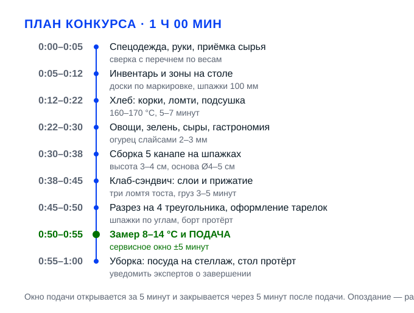
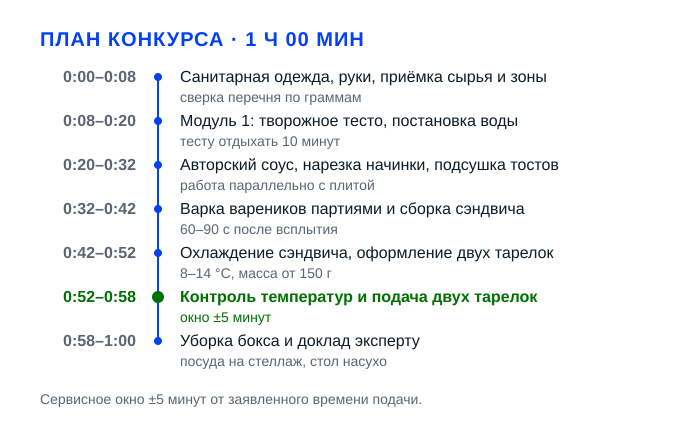
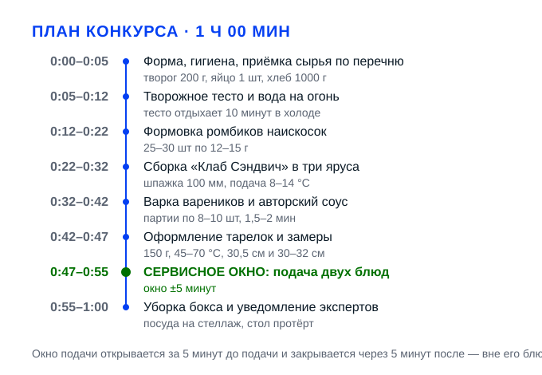

Помощник повара (ФВ)
Задания ниже — официальные файлы «Абилимпикс» (источник: abilympics-russia.ru), разложенные по категориям. Решения написаны по тексту задания, регламенту и критериям оценки; в них указано, что именно проверяет эксперт.
Школьник
14–16 лет, базовый уровень заданияВ официальном файле категории не разделены отдельными разделами — приводим задание целиком; различия по категориям смотрите в таблице модулей.
Пошаговое решение
У школьников на это задание ровно один час, и за него нужно успеть две подачи: пять канапе на деревянных шпажках и холодное блюдо «Клаб Сэндвич» в авторском исполнении. Продукты выдаются равным набором, заказывать их не нужно, а декор и оформление разрешены только из перечня и с общего стола. Оба блюда подаются холодными, с температурой от 8 до 14 °C, на белых круглых тарелках с бортом диаметром 30–32 см без декора, по одной тарелке на блюдо, а сервисное окно открывается за пять минут до подачи и закрывается через пять минут после. Час складывается только в одном случае: если работа идёт конвейером — пока сушится хлеб, режется огурец, пока собираются канапе, охлаждается сэндвич. Исход решают три вещи: одинаковый диаметр основ, сухая нарезка без сока и чистый борт тарелки в момент выноса.

Задача 1. Войти в бокс и развернуть рабочее местоСтарт · до сигнала и первые 5 минут
Пока не прозвучал сигнал, бокс нужно превратить в маленькое производство: на себе полный комплект санитарной одежды, на столе проверенное сырьё, разложенное по зонам, рядом подобранный инвентарь и понятный план на 60 минут. Эти минуты не оплачиваются отдельным временем, но именно из них складывается всё остальное: если хлеб для тостов найден в последнюю десятиминутку, канапе уже не будут одинаковыми. Поэтому начинаем не с ножа, а с себя, сырья и порядка на столе.
Действие 1.1. Надеть санитарную одежду и подготовить руки
Шаг 1.1.1
Надеваем полный комплект по требованиям задания: белый китель с логотипом «Абилимпикс» слева на груди и фамилией под ним, белый фартук, тёмные поварские брюки, белый колпак и закрытую обувь с зафиксированной пяткой. Колпак садится так, чтобы волосы были убраны спереди и на затылке. Рукава подворачиваем выше локтя, фартук завязываем так, чтобы он закрывал грудь и колени, но не свисал в миску с сыром. Обувь проверяем на сухость: пол у мойки от воды и масла скользкий.
Санитарная одежда в задании описана по элементам — цвет кителя, логотип, фартук, тёмные брюки, колпак, закрытая обувь с фиксированной пяткой, — и проверяется на входе, а не в конце. Переодеться в боксе негде, поэтому недостающая деталь остаётся с вами на весь час и читается как непонимание требований компетенции. Кроме того, аккуратный вид задаёт темп: разобравшись с собой за две минуты, дальше работаешь спокойнее.
Попросите волонтёра или наставника посмотреть на вас со спины: волос не видно ни спереди, ни на затылке, колпак держится, китель застёгнут, фартук не перекошен, обувь закрытая и сухая. Рукава не спускаются ниже локтя — иначе при наклоне над столом они окажутся над продуктами.
Самая частая ошибка — надеть колпак на макушку, оставив затылок открытым: спереди всё выглядит нормально, а сзади волосы выбиваются и попадают в сливочный сыр при наклоне над доской. Вторая — прийти в открытых кроссовках или в обуви без фиксированной пятки: пол в боксе мокрый, а падение с ножом в руке — это уже не баллы, а травма.
Эксперт осматривает участника до старта и держит его в поле зрения весь конкурс: пятна от сыра и крошки на груди к середине работы тоже считаются. Отдельно он смотрит на затылок и на руки — не поправлял ли участник колпак грязными руками.
Шаг 1.1.2
Моем руки тёплой водой с мылом не меньше двадцати секунд, до запястий, не забывая большие пальцы, промежутки между пальцами и ногтевые ложа. Вытираем одноразовым бумажным полотенцем и сразу выбрасываем его в бак, а не кладём на стол. Перчатки надеваем не на всё задание целиком, а на те операции, где так удобнее: на работу с гастрономией и при оформлении тарелки. Между операциями руки мыть быстрее и надёжнее, чем менять перчатки.
Гигиена рук — базовая часть санитарного блока задания, и она проверяется в процессе, а не один раз на входе. Логика простая: колбаса, ветчина и копчёная курица — готовые продукты, но после них нельзя браться за хлеб, если до этого вы трогали мусорный бак или полотенце для посуды. На конкурсе, где блюдо потом пробуют эксперты, любое нарушение этого правила — прямой риск не только для оценки, но и для здоровья тех, кто будет дегустировать.
Руки сухие, полотенце использованное и выброшено, на столе нет мокрой тряпки рядом с хлебом. Проверить себя легко: если вы только что отходили к мусорному баку или поправляли колпак — руки моем снова, даже если внешне они чистые. Это правило «грязное — чистое» и есть ваш главный чек-лист на весь час.
Классическая ошибка — протереть руки о фартук: визуально они сухие, но фартук становится переносчиком, и эксперт это замечает. Вторая — помыть руки один раз на старте и считать вопрос закрытым: оценивается процесс, поэтому руки проверяют и после работы с гастрономией, и после уборки.
Эксперт смотрит на руки в течение всего конкурса, а не только на входе, и отмечает, моется ли инвентарь после сырого продукта и меняются ли перчатки после грязной операции.
Шаг 1.1.3
Снимаем часы, кольца, браслеты и длинные серьги, ногти должны быть коротко подстрижены, без лака и покрытия. Всё снятое убираем в сумку или в карман, а не на край стола: мелкая деталь, лежащая рядом с разделочной доской, рано или поздно окажется в продуктах. Если кольцо снимается тяжело, снимайте его дома, а не в боксе за минуту до сигнала. Перчатки надеваем чистые и по размеру, чтобы они не сползали при нарезке.
Под украшениями остаются загрязнения, которые обычным мытьём рук не снимаются, а камень из кольца или звено браслета могут попасть в сливочный сыр или в нарезку. Для холодного блюда, которое подаётся без тепловой обработки, посторонний предмет в тарелке означает немедленное обнуление модуля: эксперты обязаны зафиксировать находку и разобраться с ней до выставления оценки.
Осмотрите кисти рук: украшений нет, ногти короткие, покрытия нет, кожа без порезов и свежих ссадин. Если на пальце есть порез, заклейте его пластырем и наденьте перчатку — открытая ранка на руках в работе с готовыми продуктами недопустима.
Оставить обручальное кольцо «оно же не мешает» — самая частая ошибка на категории школьников, и объяснение «я привык» не принимается. Вторая — держать снятый браслет на столе рядом с доской: предмет виден эксперту и реально может уехать в тарелку вместе с ломтиком огурца.
Руки проверяют на входе и выборочно в процессе, обычно в момент оформления тарелки, когда участник стоит близко к эксперту. Наличие украшений фиксируется как нарушение санитарных требований.
Действие 1.2. Принять сырьё и разложить по хранению
Шаг 1.2.1
Получаем набор продуктов и сверяем с перечнем задания: сливочное масло 50 г, сливочный сыр 150 г, Гауда и Чеддер по 100 г, моцарелла мини 60 г, огурец 150 г, черри 150 г, укроп 10 г, виноград 50 г, ветчина, копчёная грудка и салями по 100 г. Отдельно считаем общий стол: хлеб для тостов 1000 г, маслины без косточек 300 г, багет пшеничный и ржаной по 500 г. Расхождения называем наставнику сразу, до сигнала: после старта замена идёт только через главного эксперта.
Продукты выдаются всем в равном количестве и заказывать их не нужно, поэтому нехватка — это почти всегда ошибка приёмки, а не организаторов. Перечень в задании задаёт и рамки авторства: оформлять и дополнять блюдо разрешено только продуктами из списка и с общего стола, всё принесённое с собой в тулбоксе согласуется заранее. Сверка на входе стоит пяти минут, а спасает весь модуль: без сливочного сыра и канапе, и сэндвич собираются иначе.
Все строки перечня отмечены, спорные позиции взвешены на весах с дискретностью 1 г, а не «на глаз». Проверьте целостность упаковок: вздутый пакет с сыром или подтёкшая упаковка ветчины — повод отложить продукт и показать его эксперту. Отдельно убедитесь, что багет свежий и не крошится при нажатии.
Начать готовку, не пересчитав набор, — и в середине работы обнаружить, что моцареллы всего 60 г, а вы планировали ею украшать все пять канапе. Вторая ошибка — молча «обойтись»: недостачу заметят при оценке подачи, а претензию после старта уже не примут.
Эксперт видит, сверялся ли участник с перечнем или импровизировал: разложенный по позициям набор и отмеченный список читаются как организационные навыки.
Шаг 1.2.2
Раскладываем сырьё по температурным зонам: скоропортящееся — сливочный сыр, Гауда, Чеддер, моцарелла, ветчина, курица, салями — сразу в холодильный шкаф с режимом от +1 до +10 °C, овощи и зелень — в отдельную зону, хлеб и багеты — на сухую полку, чтобы не отсырели. Масло оставляем в тёплом месте на десять минут, чтобы оно стало пластичным: холодным маслом хлеб рвётся. Каждую позицию ставим на подписанное место, а не в общую кучу.
Холодная закуска подаётся с температурой от 8 до 14 °C, и это требование начинается не на подаче, а на хранении: продукт, полежавший час на столе, уже не вернуть в норму быстро. Разделение зон нужно и по санитарии — готовая гастрономия не должна соприкасаться с немытыми овощами. Пластичное масло и мягкий сыр дают ровный тонкий слой, а холодный сыр срывает мякиш и оставляет рваные края на канапе.
Потрогайте рукой каждый продукт перед работой: сыры и мясо холодные, зелень сухая, хлеб мягкий. Проверьте, что в холодильнике продукты не стоят вплотную к задней стенке — там они подмерзают и потом крошатся при нарезке. Масло готово, когда оно продавливается пальцем без усилия, но ещё держит форму.
Оставить сыры и гастрономию на столе «на полчаса, пока режу овощи»: к моменту сборки они нагреются выше 14 °C, и подача выйдет из температурного коридора. Вторая ошибка — положить багет рядом с мойкой: отсыревшая корка мнётся под ножом и даёт рваный ломоть.
Эксперт смотрит, где лежат продукты в процессе работы, и на подаче сверяет температуру блюда с коридором 8–14 °C. Отдельно фиксирует, не простояли ли сыры и гастрономия на столе дольше, чем нужно для одной операции.
Шаг 1.2.3
Отдельно решаем, что берём с общего стола: хлеб для тостов, маслины, багеты. Отламываем или отрезаем нужное количество сразу и убираем остаток в отведённое место для хранения продуктов — так требует задание. Хлеб для тостов берём целым блоком, чтобы резать ровные ломти одной толщины, маслины — горстью на маленькую миску, багет — половинкой. Не набирайте «про запас» больше, чем нужно на пять канапе и один сэндвич: лишнее придётся утилизировать.
Общий стол — это ресурс на всех участников, и правило «взял сколько нужно, остальное убрал» прописано в задании отдельным пунктом. Кроме того, лишние продукты на рабочем столе мешают: миска с горой хлеба занимает место, задевается локтем и заставляет тянуться через доску. Разумный запас считается просто: пять основ под канапе плюс три ломтя на сэндвич плюс один-два ломтя на подстраховку.
На столе перед вами ровно столько, сколько нужно на одну порцию канапе и один сэндвич, остальное убрано. Проверьте, что взятый хлеб не чёрствый: сжатый ломоть должен пружинить, а не ломаться. Маслины берите без косточек — на шпажке косточка ломает зубчик и портит силуэт.
Взять с общего стола полбуханки и оставить её лежать на доске до конца конкурса: хлеб заветривается, а рабочее место выглядит захламлённым. Вторая ошибка — брать маслины с косточкой: они крупнее, шпажка входит криво, и канапе заваливается набок.
Эксперт оценивает рациональность: взято ли ровно необходимое и убраны ли остатки в зону хранения, а не оставлены на столе. На категории школьников это заметная часть оценки организации, потому что общий стол один для всех участников.
Действие 1.3. Подобрать инвентарь и разметить зоны
Шаг 1.3.1
Берём разделочные доски по маркировке: зелёную — под огурцы, черри и зелень, белую — под хлеб и сыр, жёлтую — под готовую гастрономию. Доска из набора имеет размеры 600 на 400 мм, поэтому кладём её так, чтобы край не свисал со стола. Ножи подбираем по задаче: длинный поварской для хлеба и багета, маленький для овощей, ножницы для птицы, если нужно распустить грудку по волокну. Ножи кладём справа от доски, ручкой к себе, а не остриём к краю.
Разделение сырья по доскам — требование санитарных норм, и на конкурсе оно проверяется визуально: хлеб, нарезанный на доске из-под мяса, считается нарушением. Правильно подобранный нож решает две задачи сразу: даёт ровный срез и не давит продукт, а это прямо влияет на внешний вид канапе и на ровный разрез сэндвича. Нож, лежащий ручкой к краю стола, — типичная причина падения и пореза.
На столе три доски разных цветов, каждая под своим продуктом, и ни одна не свисает с края. Проверьте заточку: нож должен резать помидор черри под собственным весом, а не давить его. Ножи лежат ручкой к вам, лезвием от края стола.
Резать хлеб на доске, где только что лежала ветчина, — нарушение, которое эксперт фиксирует сразу. Вторая ошибка — взять один нож на всё: тупой нож рвёт мякиш, ломти получаются разной толщины, и канапе перестают быть одинаковыми.
Эксперт смотрит на маркировку досок и на то, меняется ли нож при переходе от овощей к хлебу, — это часть санитарного блока. Отдельно отмечает, лежат ли ножи ручкой к участнику и не остаётся ли нож на доске с готовым продуктом.
Шаг 1.3.2
Размечаем рабочее место на три зоны: слева — приёмка и нарезка, в центре — сборка канапе и сэндвича, справа — готовая продукция и тарелки. Грязную посуду сразу ставим в отдельный лоток у мойки, а не в центр стола. Гастроёмкости GN 1/2 высотой 40 мм ставим в зону нарезки: в них удобно держать нарезанный огурец, сыр и мясо, и они не дают продуктам растекаться по столу. Под рукой оставляем только то, что нужно в следующие пять минут.
Одна порция канапе и один сэндвич — это десяток мелких операций подряд, и на них уходит весь час. Когда зоны разведены, вы не переставляете миски каждые две минуты и не ищете, куда положить нож. Гастроёмкости высотой 40 мм удобны именно для нарезки: продукты в один слой, видно количество, сок не растекается. Разделение на «чистую» и «грязную» сторону — ещё и требование санитарии.
Пройдите взглядом по столу слева направо: нарезка, сборка, готовая продукция. Между зонами есть свободное место, чтобы положить нож или тарелку. Грязная посуда не стоит рядом с продуктами, а мусор — не на столе, а в баке.
Свалить всё в центр стола: через двадцать минут там некуда поставить тарелку, и вы начинаете ставить её на край, где она опрокидывается. Вторая ошибка — держать обрезки и корки на рабочей поверхности: они занимают место и мешают видеть, сколько продуктов осталось.
Эксперт оценивает организацию рабочего места в процессе: видно ли разделение зон и поддерживается ли оно к концу конкурса, а не только на старте. Беспорядок в центре стола к моменту оформления тарелки читается как потеря контроля над работой.
Шаг 1.3.3
Готовим инструменты под конкретные операции: деревянные шпажки длиной 100 мм (их в наборе десять, пять уйдут в канапе и ещё несколько понадобятся для сэндвича), набор круглых выемок для основ, весы, мерную миску под сливочный сыр, силиконовую лопатку, щипцы, сито. Выемку подбираем сразу под диаметр будущего канапе — 4–5 см, чтобы все пять основ были одного размера. Тарелки для подачи держим отдельно, белые, круглые, с бортом, диаметром 30–32 см, по одной на блюдо.
Канапе оценивают по одинаковости, и одинаковость задаётся не рукой, а инструментом: одна и та же выемка даёт пять основ одного диаметра, а нож «на глаз» — пять разных. Шпажка 100 мм — единственный разрешённый вид поддерживающего элемента при подаче, поэтому её длина и толщина должны совпадать у всех канапе. Тарелки диаметром 30–32 см без декора — прямое требование к подаче: на меньшей тарелке пять канапе и декор смотрятся скученно.
Выложите пять вырубленных основ в ряд и посмотрите на просвет: диаметр одинаковый, края ровные, без заломов. Проверьте, что шпажек хватает и они не расщеплены на конце — щепа в продукте недопустима. Тарелки протрите насухо: белый фарфор показывает любую каплю.
Вырубать основы по очереди разными выемками из набора — канапе получаются разного диаметра, и композиция на тарелке рассыпается. Вторая ошибка — взять шпажки подлиннее «для надёжности»: они торчат из канапе на 4–5 см и цепляются за соседние.
Эксперт смотрит на подачу и на инструмент: одинаковый ли диаметр у всех пяти канапе и одинаковой ли длины шпажки — это видно на глаз, без измерений. Отдельно проверяет, что тарелка белая, круглая, с бортом и без декора, диаметром 30–32 см.
Задача 2. Подготовить продукты: хлеб, овощи, сыры, гастрономиюМодули 1 и 2 · общая подготовка
Обе подачи собираются из одного набора заготовок, поэтому подготовка идёт не «под канапе» и «под сэндвич» отдельно, а сразу на два блюда. Задача этой части — получить ровные ломти одинаковой толщины, сухую зелень, обсушенный огурец и мягкий сливочный сыр, который ложится тонким слоем и держит верхние слои. Всё, что нарезано криво или нарезано заранее и уже отдало сок, на подаче видно сразу: канапе кренится, сэндвич течёт, край тарелки пачкается.
Действие 2.1. Подготовить хлеб: тосты и багеты
Шаг 2.1.1
Кладём блок хлеба для тостов на белую доску и срезаем корки со всех четырёх сторон, отступая 3–4 мм: корка тянет мякиш и не даёт ровного квадрата. Затем нарезаем ломти толщиной 8–10 мм, придерживая блок ладонью сверху и ведя нож длинными движениями от себя, без нажима. Для пяти канапе нужно пять ломтей, на сэндвич — три, плюс один-два в запас. Обрезки складываем в отдельную миску: из них получатся крошки для края, если понадобится.
Тостовый хлеб — основа и канапе, и сэндвича, и именно он задаёт геометрию всей подачи: пять основ одного размера дают читаемую композицию, а ломти «на глаз» — пять разных фигур. Корка при обжарке темнеет быстрее мякиша и даёт горелый край, который на белой тарелке виден как дефект. Толщина 8–10 мм выбрана не случайно: тоньше — основа ломается под весом начинки, толще — канапе выглядит грубым и не держит пропорцию со шпажкой 100 мм.
Поставьте ломти стопкой и посмотрите с торца: толщина одинаковая, все квадраты одного размера, корки нет ни с одной стороны. Сожмите ломоть между пальцами — он должен пружинить, а не расслаиваться. Если нож пошёл косо, отложите этот ломоть в запас, а не в подачу.
Резать тёплый или слишком свежий хлеб — мякиш сминается, ломти получаются разной толщины и рвутся при намазке. Вторая ошибка — срезать корку только сверху и снизу, оставив боковые: при обжарке углы подгорают, и на канапе появляется тёмное пятно, которое эксперт читает как небрежность.
Эксперт смотрит на подачу и на одинаковость элементов: пять основ одного размера видны сразу, без линейки. Отдельно отмечает, есть ли на хлебе тёмные подгоревшие участки.
Шаг 2.1.2
Подсушиваем ломти до сухого хруста: раскладываем на противень в один слой и ставим в пароконвектомат при 160–170 °C на 5–7 минут, либо обжариваем на индукционной плите в сковороде диаметром 24 см на сливочном масле по 40–60 секунд с каждой стороны. В пароконвектомате ломти не переворачиваем, в сковороде — переворачиваем один раз лопаткой. Готовность определяем по цвету: светлый золотистый, без коричневых пятен. Сразу перекладываем на решётку, чтобы низ не отсырел от пара.
Подсушенный хлеб не размокает под сливочным сыром и соком огурца — а именно это главная причина, по которой канапе «плывёт» к моменту подачи. Обжарка на масле даёт вкус, но требует контроля: индукционная конфорка диаметром 285 мм разогревается за одну-пять минут и держит до 240 °C, поэтому перегрев здесь реальнее, чем кажется. Пароконвектомат удобнее для партии: он сушит равномерно и не требует стоять над плитой, а время можно потратить на овощи.
Возьмите ломоть за угол и постучите по столу — звук должен быть сухим, а не глухим. На изломе видно, что мякиш просох, но не потемнел. Если ломоть гнётся и не хрустит, верните его на минуту-две, но следите, чтобы не начал коричневеть.
Обжарить до тёмно-золотистого «для красоты»: такой хлеб горчит и перебивает сливочный сыр, а на разрезе сэндвича тёмные полосы выглядят как грязь. Вторая ошибка — складывать горячие ломти стопкой: они отпотевают, и хруст исчезает за пять минут.
Эксперт проверяет хлеб на вид и на вкус: сухой ли он, не горчит ли, ровный ли цвет. Обгоревшие края на белой тарелке заметны даже на фотографии работы.
Шаг 2.1.3
Багет пшеничный и ржаной нарезаем наискосок под углом около 30 градусов, ломтями 8–10 мм, тем же длинным ножом: зубчатое лезвие ведём пилящими движениями, пока не выйдем за корку. На канапе нужны ломти с ровной площадкой, поэтому «горбушковые» куски откладываем в запас. Подсушиваем так же, как тосты: 160–170 °C, 5–7 минут, без масла — багет и без него даёт хруст. Ржаной сушим отдельно от пшеничного, чтобы не смешать вкусы.
Багет в перечне есть, и он даёт вторую текстуру в композиции: на пяти канапе выгодно смотрятся две-три основы из багета, потому что одинаковые кружки хлеба подряд читаются однообразно. Косой срез нужен не для красоты: он даёт большую площадь и канапе устойчивее стоит на тарелке. Ржаной хлеб сушится быстрее пшеничного и при той же температуре может подгореть, поэтому партии лучше не смешивать.
Положите ломоть багета на стол площадкой вниз: он стоит, не заваливаясь. Площадка ровная, без рваных волокон, корка не крошится в руке. Если при нажатии из ломтя выдавливается мякиш, значит, нож был тупой — отложите такие ломти.
Резать багет прямым срезом: ломоть получается маленьким, начинка с него свисает, и канапе выглядит недоделанным. Вторая ошибка — сушить ржаной багет вместе с пшеничным на одном противне: ржаной отдаёт влагу, пшеничный не просыхает, и оба остаются мягкими.
Эксперт смотрит на композицию: использован ли багет и насколько он уместен рядом с тостовым хлебом. Отдельно оценивает, держат ли ломти форму под начинкой и не крошится ли корка на тарелке.
Действие 2.2. Обработать овощи, зелень и фрукты
Шаг 2.2.1
Моем огурец, черри, виноград и укроп под проточной водой. Зелень не просто ополаскиваем, а погружаем в миску с водой на минуту, чтобы песок осел на дно, затем промываем под струёй. Обсушиваем всё на бумажном полотенце или в центрифуге для салата: огурец и черри промокаем насухо, укроп раскладываем тонким слоем и оставляем на пять минут. Влагу убираем полностью — на срезе она тут же даёт сок, и блюдо начинает течь.
Овощи и зелень идут в блюдо без тепловой обработки, поэтому мытьё — это не формальность, а обязательное требование санитарных норм, которое проверяется наравне с внешним видом. Вода на поверхности — главный враг холодной закуски: она размачивает хлеб и разводит сливочный сыр в клейкую массу. Просушка занимает две минуты, а разница на подаче принципиальная: сухой огурец лежит на хлебе ровно, мокрый — сползает.
Проведите пальцем по огурцу и черри: палец должен остаться сухим. Укроп при сжатии в горсти не должен давать капель. Если полотенце под овощами стало мокрым насквозь, замените его и досушите всё ещё раз, иначе вода уйдёт в хлеб.
Нарезать огурец сразу после мытья, не обсушив: сок стекает на хлеб, основа размокает, и канапе заваливается набок уже через десять минут. Вторая ошибка — сушить зелень на грязном полотенце для посуды: так на готовый продукт попадают бактерии с посуды.
Эксперт смотрит на срез и на тарелку: нет ли лужиц под канапе и под сэндвичем. Мокрый след на белом фарфоре читается как нарушение технологии обработки овощей.
Шаг 2.2.2
Огурец нарезаем кружками толщиной 2–3 мм на зелёной доске, держа нож под прямым углом и ведя его от себя, пальцы левой руки подгибаем «когтем», чтобы костяшки были защищены. Кружки складываем в гастроёмкость в один слой, не солим и не перчим. Если нужны слайсы для сэндвича, режем вдоль тонкими полосами той же толщины. Нарезаем столько, сколько уйдёт в ближайшие десять минут, остальное оставляем целым: нарезанный огурец быстро отдаёт воду.
Толщина 2–3 мм — компромисс между видом и устойчивостью: толще — огурец перевешивает и канапе кренится, тоньше — кружок рвётся при нанизывании на шпажку. «Когтевая» постановка руки — базовая техника безопасности при работе поварским ножом, и эксперты смотрят на неё отдельно, потому что она напрямую связана с риском пореза. Соль на этом этапе недопустима: она вытягивает воду за считанные минуты, и к подаче огурец становится дряблым.
Разложите пять кружков в ряд и посмотрите на просвет: толщина одинаковая, диаметр ровный, края без заломов. Кружок должен просвечивать на свету, но не рваться, если взять его за край. На срезе нет белой «ватной» кромки — это признак вялого огурца.
Посолить огурец «чтобы был вкуснее»: через десять минут он даст сок, и вся конструкция поплывёт. Вторая ошибка — нарезать огурец заранее, в самом начале часа, и оставить лежать на доске: к сборке он высохнет по краям и станет прозрачным.
Эксперт оценивает нарезку на глаз и на ощупь: одинаковость кружков видна на тарелке, а «когтевая» постановка руки — в процессе. За порез или работу «пальцами под лезвием» снижают оценку по безопасности.
Шаг 2.2.3
Черри режем пополам, а для высоких канапе — на четвертинки, удаляя семенную жидкость кончиком ножа: именно она даёт основную влагу. Виноград разрезаем вдоль пополам и вынимаем косточки, если они есть. Маслины без косточек оставляем целыми, но обсушиваем на полотенце — с рассола они приходят мокрыми. Складываем всё в отдельные маленькие миски по 0,3 л, чтобы не смешивать и не путать при сборке.
Черри и виноград — единственные продукты в наборе с заметным количеством сока, и они определяют, будет ли блюдо течь. Удаление семенной жидкости — не педантизм: половинка черри без неё держит форму на шпажке и не окрашивает сливочный сыр в розовый. Раздельные миски нужны для скорости: на сборке пяти канапе вы тянитесь за продуктом десятки раз, и каждая лишняя секунда поиска сдвигает подачу.
Половинка черри при наклоне не роняет каплю, виноград не скользит в пальцах, маслина сухая на ощупь. Проверьте, что в мисках нет сока на дне: если он есть, промокните продукты ещё раз и замените миску, иначе всё потечёт на хлеб.
Оставить в черри семенную жидкость: на разрезе сэндвича появляется розовое пятно, а сливочный сыр под огурцом становится водянистым. Вторая ошибка — брать маслины прямо из рассола: капля рассола на белой тарелке выглядит как небрежность и портит вкус рядом лежащих продуктов.
Эксперт оценивает чистоту подачи: нет ли подтёков и цветных пятен на тарелке. Отдельно смотрит, сохранена ли форма половинок — раздавленные черри читаются как неаккуратная работа.
Шаг 2.2.4
Укроп рубим острым ножом на мелкой доске: сначала отделяем толстые стебли и откладываем их, потом режем листья поперёк пучка с шагом 2–3 мм, не давя лезвием. Рубим порциями по 5–7 граммов, чтобы зелень не слёживалась в комок. Часть зелени оставляем целыми веточками — они пойдут на верх канапе и на край тарелки. Рубленый укроп держим на полотенце, накрытым сверху, а не в закрытой миске, иначе он отпотевает и темнеет.
Из десяти граммов укропа нужно получить и аромат в сливочном сыре, и видимый зелёный акцент на канапе, и элемент оформления тарелки, поэтому зелень распределяется по назначению заранее. Острый нож режет, а не мнёт: раздавленный укроп даёт тёмный сок и через полчаса превращается в бурую массу. Декор разрешён только из продуктов перечня, и укроп здесь — самый безопасный вариант, потому что он есть в наборе и не спорит со вкусом сыра.
Рубленый укроп рассыпчатый, каждый кусочек отдельный, цвет ярко-зелёный без тёмных следов. Сожмите щепотку — она должна разжаться обратно. Если зелень липнет комком, нож был тупой или вы резали слишком крупно и слишком долго.
Рубить укроп тупым ножом или в блендере: получается тёмная кашица, которая пачкает сливочный сыр и выглядит на белом фоне как грязь. Вторая ошибка — накрошить зелень на всю тарелку «для яркости»: беспорядочные травинки на краю читаются как небрежность, а не как декор.
Эксперт смотрит на цвет зелени и на её уместность: яркая, свежая, аккуратно уложенная. Потемневшая или размазанная зелень снижает оценку внешнего вида.
Действие 2.3. Подготовить сыры и сливочную массу
Шаг 2.3.1
Отвешиваем 150 г сливочного сыра в миску объёмом 1 л и даём ему постоять при комнатной температуре 10–15 минут, чтобы он стал пластичным. Взбиваем лопаткой или венчиком две-три минуты до однородности, добавляя щепотку соли и половину рубленого укропа. Если сыр кажется плотным, вводим столовую ложку сливочного масла, размягчённого до состояния крема, и вымешиваем до гладкости. Готовую массу держим в холодильнике до сборки, но не дольше двадцати минут, иначе она снова затвердеет.
Сливочный сыр — связующий слой, и от его консистенции зависит, удержится ли начинка на хлебе. Холодный сыр рвёт подсушенный мякиш и ложится комками, а перегретый становится текучим и стекает с канапе. Взбивание с маслом даёт ту самую плотность, при которой слой держится и на вертикальной шпажке, и на разрезе сэндвича. Укроп в массе — способ добавить аромат, не полагаясь на декор сверху.
Проведите лопаткой по массе: борозда должна держаться, а не заплывать сразу. Возьмите немного на палец — слой ложится ровно, без крупинок, вкус солёный ровно настолько, чтобы не перебивать сыр. Если масса течёт с лопатки струёй, верните её в холод на пять минут.
Намазывать холодный сыр прямо из холодильника: он срывает поверхность хлеба, и на канапе остаются рваные проплешины. Вторая ошибка — пересолить массу, забыв, что дальше идут солёные салями, ветчина и сыр: в сумме получается пересоленное блюдо, и это сразу чувствуется на дегустации.
Эксперт оценивает вкус и текстуру: ровный ли слой, не течёт ли он по краю, сбалансирована ли соль. На разрезе сэндвича видно, не впитался ли сыр в хлеб.
Шаг 2.3.2
Гауду и Чеддер достаём из холодильника за пять минут до нарезки: слегка охлаждённый сыр режется ровнее, но не крошится. Нарезаем ломтиками 2 мм: Гауду — прямоугольниками под размер канапе, Чеддер — тонкими полосами для сэндвича. Режем на белой доске, прижимая сыр ладонью сверху, чтобы он не скользил. Ломтики складываем в гастроёмкость, перекладывая бумагой для выпечки. Обрезки пойдут в сэндвич, где форма не важна.
Толщина 2 мм — предел, при котором сыр ещё держит форму и не ломается при нанизывании, но уже не перекрывает вкус остальных слоёв. Два разных сыра в наборе даны не случайно: Гауда мягче и слаще, Чеддер плотнее и солонее, и на пяти канапе чередование читается как продуманная серия, а не как «что было». Бумага между ломтиками нужна потому, что тёплый сыр слипается в один блок, и разделить его потом без разрывов не получится.
Поднимите ломтик за угол: он держится, не рвётся и не провисает как тряпка. На срезе нет крошки, кромка ровная. Проверьте, что ломти одинаковой толщины — на канапе разница в полмиллиметра видна, потому что верхний слой задаёт общую высоту.
Нарезать тёплый сыр: он мажется за ножом, ломти получаются рваными, а на хлебе остаётся жирный след. Вторая ошибка — резать сыр на доске из-под мяса: запах и бактерии переходят на продукт, а это нарушение санитарных норм, которое эксперт фиксирует.
Эксперт смотрит на ровность ломтей и на то, видно ли на тарелке два разных сыра. Слипшиеся в комок ломти читаются как неаккуратная нарезка, а слишком толстые перекрывают вкус остальных слоёв.
Шаг 2.3.3
Моцареллу мини (60 г) вынимаем из рассола и обсушиваем на бумажном полотенце: мокрые шарики не держатся на шпажке и оставляют лужицу на тарелке. Крупные шарики режем пополам, мелкие оставляем целыми — они смотрятся как готовый акцент наверху канапе. Сливочное масло (50 г) делим на две части: примерно 30 г уйдёт на обжарку хлеба, 20 г останется для намазки и для смягчения сливочного сыра. Масло держим в тёплом месте, но не у плиты, чтобы оно не растопилось полностью.
Моцарелла мини — самый выразительный элемент набора, и её место обычно наверху канапе, где она работает как цветовое пятно и как замок для шпажки. Рассол, в котором она хранится, солёный и мутный: если не обсушить шарики, он попадёт в блюдо и даст мутный след на белом фарфоре. Разделение масла на две части — простая арифметика: без учёта остатка его не хватает именно на обжарку, и хлеб получается сухим, а не золотистым.
Шарик моцареллы при нажатии полотенцем не оставляет мокрого пятна. Масло продавливается пальцем, но держит форму куска — это и есть рабочая пластичность. Проверьте, что в миске с моцареллой нет рассола на дне.
Нанизывать моцареллу прямо из рассола: шпажка проскальзывает, шарик съезжает вниз, и канапе разваливается при переносе на тарелку. Вторая ошибка — растопить всё масло сразу: часть его сгорит на сковороде, а на намазку останется слишком мало.
Эксперт обращает внимание на чистоту тарелки: мутные капли рассола заметны на белом фоне. Отдельно оценивает, насколько уместно использована моцарелла в композиции.
Действие 2.4. Подготовить мясную гастрономию
Шаг 2.4.1
Ветчину и салями достаём из холодильника и нарезаем на жёлтой доске: ветчину — ломтями 2–3 мм, салями — тонкими кружками 1,5–2 мм, почти просвечивающими. Если салями уже нарезана производителем, всё равно проверяем толщину и выбираем самые ровные кружки, а мятые откладываем. Нарезанное раскладываем в один слой в гастроёмкость, накрываем пищевой плёнкой и убираем в холод. Не оставляем гастрономию на столе: она нагревается быстрее, чем кажется, и теряет упругость.
Тонкий кружок салями — вопрос не только эстетики: толстый ломоть перевешивает канапе, и шпажка наклоняется в сторону. Ветчина в сэндвиче работает как объёмный слой, и её толщина 2–3 мм позволяет сложить конструкцию так, чтобы она резалась ровно, а не выдавливала начинку. Пищевая плёнка нужна, чтобы поверхность не заветрилась: подсохшая ветчина по краю темнеет и выглядит как вчерашняя.
Кружок салями просвечивает на свету и не рвётся, если взять за край. Ломоть ветчины складывается пополам без трещин. Проверьте, что на срезе нет сероватого ободка — это признак того, что продукт лежал открытым.
Оставить нарезку на столе на весь час: к подаче ветчина заветрится по краю, а салями начнёт блестеть жиром. Вторая ошибка — нарезать салями толстыми ломтями, чтобы «было видно»: канапе становится тяжёлым, и шпажка 100 мм не держит вертикаль.
Эксперт оценивает нарезку и свежесть продуктов: тонкие ровные кружки читаются как профессиональная работа. Заветренные края и засохший жир заметны на тарелке.
Шаг 2.4.2
Копчёную куриную грудку разбираем на волокна или режем поперёк волокна ломтями 3–4 мм — важно именно поперёк, иначе длинные волокна тянутся и рвут сэндвич при разрезе. Ножницы для птицы здесь удобнее ножа: ими легко пройти по естественным границам мышц. Кожу снимаем, если она жесткая, и откладываем в сторону. Грудку держим отдельно от ветчины и салями, в своей миске: вкус копчения сильный, и в общем контейнере он переходит на всё остальное.
Копчёная грудка — самый ароматный компонент набора, и её задача дать вкус, а не объём. Нарезка поперёк волокна решает практическую проблему: сэндвич режется на треугольники одним движением, и длинные волокна не вытягиваются из слоя, оставляя рваный срез. Отдельная посуда — про чистоту вкуса: ветчина рядом с копчёной грудкой через двадцать минут начинает пахнуть копчением, и в сэндвиче это читается как неразборчивая композиция.
Возьмите ломоть и потяните за края: он не должен растягиваться в нить. На разрезе видны ровные поперечные волокна, а не длинные пряди. Проверьте, что все ломти одинаковой толщины и что в миске на дне нет отделившегося жира.
Нарезать грудку вдоль волокон: при разрезе сэндвича волокна вытягиваются, слои съезжают, и треугольники получаются с рваным краем. Вторая ошибка — положить грудку в один контейнер с ветчиной: вкусы смешиваются, и на дегустации сложно понять, что именно вы хотели показать.
Эксперт смотрит на разрез сэндвича: ровный ли он и не вытянуты ли волокна мяса. На вкус оценивает, не перебивает ли копчение сливочный сыр, огурец и зелень, потому что грудка здесь самый сильный аромат.
Шаг 2.4.3
Собираем все заготовки в зоне сборки: гастроёмкости с огурцом, сыром, ветчиной, грудкой и салями, миски с черри, виноградом, маслинами и укропом, миску со сливочной массой, лоток с хлебом. Каждую ёмкость накрываем плёнкой или крышкой, если работа с ней не идёт прямо сейчас. Рядом кладём шпажки, выемки, щипцы и лопатку. Лишнее с рабочей поверхности убираем: освободившееся место и есть место под тарелки.
На сборке пяти канапе и сэндвича каждая лишняя секунда на поиск продукта складывается в минуты, а время ограничено одним часом. Разложенные по порядку заготовки позволяют работать конвейером: взял основу, намазал, положил сыр, нанизал — без остановок. Плёнка на ёмкостях — не только санитария: открытая нарезка заветривается, а масло и сыр впитывают посторонние запахи, которых на конкурсной площадке хватает.
Пройдите взглядом по зоне сборки: всё нужное в пределах вытянутой руки, ничего лишнего, каждая ёмкость накрыта, если не используется. Тарелки стоят свободно, и на них ничего не лежит. Если приходится тянуться через стол — переставьте, сейчас это бесплатно, на сборке будет дорого.
Оставить заготовки в беспорядке и начать сборку, надеясь разобраться по ходу: на третьем канапе выясняется, что сыр закончился в миске, а остался в гастроёмкости за спиной. Вторая ошибка — держать открытыми все ёмкости сразу: нарезка сохнет, а муха или капля с рукава могут попасть в продукт.
Эксперт оценивает организацию и гигиену: накрыта ли нарезка, есть ли свободное место для сборки. Аккуратно разложенные заготовки читаются как понимание процесса.
Задача 3. Собрать и оформить пять канапе на шпажкахМодуль 1 · «5 канапе на шпажках»
Модуль 1 — это пять канапе на деревянных шпажках, оформленных и поданных на одной белой круглой тарелке с бортом диаметром 30–32 см без декора, с температурой от 8 до 14 °C. Количество меньше пяти не принимается, поэтому вопрос «сколько успею» здесь не стоит: пять штук обязательны. Оценку решает не фантазия, а серия: одинаковый размер основ, одинаковая высота, читаемая схема выкладки и сухой чистый край тарелки.
Действие 3.1. Выбрать конструкцию и подготовить основы
Шаг 3.1.1
До первой выемки решаем, что именно показываем: пять канапе одной серии, где меняется только верхний слой, — так композиция читается как задумка, а не как случайный набор. Три опоры: сливочный сыр как база, затем Гауда или Чеддер, затем мясо — ветчина, курица или салями — и верхний акцент из огурца, черри, моцареллы или маслины. Высота канапе 3–4 см, чтобы шпажка 100 мм проходила насквозь и не выходила снизу больше чем на 1 см. Схему проговорите вслух и держите в голове, повторяя порядок слоёв.
Канапе — мелкая форма, и на ней видно всё: разные принципы сборки в одной серии читаются как отсутствие замысла. Единая конструкция с вариацией верха даёт ровную линию на тарелке и одинаковую высоту, а это первое, что оценивает эксперт. Высота 3–4 см выбрана под шпажку: если канапе ниже, шпажка торчит на 4–5 см и цепляется за соседние, если выше — конструкция кренится под собственным весом.
Разложите перед собой пять мысленных «схем» и сравните: у всех одна основа, один связующий слой и один принцип верха. Проверьте, что ни в одном варианте нет двух сильных вкусов одновременно — например, копчёной курицы и салями вместе. Если сомневаетесь, упрощайте: простая серия всегда выигрывает у сложной, но разной.
Сделать пять разных канапе «чтобы показать диапазон»: на тарелке получается винегрет, и эксперт не видит ни одной законченной идеи. Вторая ошибка — планировать канапе выше 5 см: шпажка не держит вертикаль, верхние слои съезжают уже при переносе тарелки.
Эксперт оценивает идею подачи целиком: читается ли серия и есть ли в ней логика. Пять разнородных канапе он фиксирует как отсутствие композиции, даже если каждое по отдельности сделано аккуратно.
Шаг 3.1.2
Вырубаем основы круглыми выемками диаметром 4–5 см: кладём выемку на ломоть по центру, нажимаем ладонью сверху и проворачиваем на четверть оборота, затем вынимаем. Для квадратных канапе режем ломоть ножом на квадраты 4 на 4 см, отмеряя линейкой или по краю доски. Вырубаем все пять основ сразу и выкладываем в ряд, чтобы сразу увидеть разницу в диаметре. Обрезки складываем отдельно — из них можно вырубить ещё одну-две основы в запас, если первая порвётся при нанизывании.
Выемка, в отличие от ножа, даёт идеальный круг и одинаковый диаметр у всех пяти заготовок, а одинаковость — главный критерий внешнего вида в этом модуле. Проворот на четверть оборота нужен потому, что подсушенный хлеб легко скалывается: без проворота кромка выходит рваной. Запас из обрезков спасает от переделки: одна порванная основа — и без запаса вы либо подаёте четыре канапе вместо пяти, либо теряете время на новую подсушку.
Сложите пять основ стопкой и посмотрите на просвет: диаметр совпадает, края ровные, без сколов и заломов. Каждая основа должна быть сухой и хрустеть при сжатии — если гнётся, значит, хлеб не досушен, и его надо вернуть в печь на пару минут.
Вырубать основы ножом «на глаз»: диаметр гуляет на 5–7 мм, и на тарелке это сразу бросается в глаза. Вторая ошибка — вырубать с силой на мягком хлебе: кромка сминается, и канапе выглядит приплюснутым.
Эксперт смотрит на подачу сверху: пять элементов одного диаметра читаются как серия. Разнокалиберные основы он отмечает как нарушение аккуратности нарезки.
Шаг 3.1.3
Намазываем сливочную массу на каждую основу слоем 2–3 мм, отступая от края на 2 мм: удобнее всего силиконовой лопаткой или ложкой, разравнивая круговыми движениями от центра к краю. На одну основу уходит 5–7 граммов массы, то есть на пять канапе — около 30 граммов. Намазываем все пять основ подряд, а не по одной перед нанизыванием: так слой получается одинаковым. Если масса начала подсыхать, накройте миску влажным полотенцем, но не разводите её водой.
Слой 2–3 мм — та самая толщина, при которой сыр держит верхние слои, но не вылезает за край и не пачкает тарелку. Отступ 2 мм от края нужен потому, что при нанизывании масса выдавливается: если она была до самого края, излишек вылезет наружу и повиснет. Одинаковый слой у всех пяти — вопрос не только вида: по нему выравнивается общая высота, а значит, канапе стоят ровно, а не «лесенкой».
Посмотрите на основу сбоку: слой ровный, край чистый, хлеб не просвечивает через сыр. Пройдитесь пальцем по кромке — она должна быть сухой. Проверьте, что масса не стекает с лопатки струёй: значит, она ещё держит форму и работать с ней можно.
Намазать толстым слоем «чтобы вкуснее»: при нанизывании сыр выдавливается наружу, стекает по краю и оставляет жирное пятно на тарелке. Вторая ошибка — размазывать массу до самого края: канапе выглядит небрежно, а на белом фарфоре это заметно сильнее, чем на любой другой посуде.
Эксперт оценивает слой на разрезе и чистоту края: не течёт ли сыр и нет ли жирных следов на тарелке. Толстый слой он отмечает как потерю пропорции, даже если вкус в порядке.
Действие 3.2. Нанизать слои и выровнять высоту
Шаг 3.2.1
Берём шпажку длиной 100 мм и нанизываем снизу вверх в таком порядке: основа с намазкой, затем сыр или мясо, затем овощной акцент, сверху — моцарелла, маслина или черри. Шпажку вводим точно по центру основы, держа её вертикально и проворачивая между пальцами, а не проталкивая с усилием. Верхний элемент накалываем так, чтобы остриё спряталось внутри и не торчало над продуктом. Тупой конец шпажки должен выступать снизу ровно настолько, чтобы канапе стояло, но не качалось.
Порядок слоёв задаёт и вкус, и устойчивость: тяжёлое внизу, лёгкое и яркое сверху — тогда центр тяжести смещён вниз и канапе не заваливается. Проворот шпажки вместо продавливания нужен потому, что подсушенный хлеб скалывается при резком движении, и основа трескается по живому. Спрятанное остриё — требование безопасности: открытый кончик на уровне рта — это риск травмы для того, кто пробует блюдо, и эксперт смотрит на это отдельно.
Возьмите канапе за шпажку и посмотрите сбоку: все слои на одной оси, наклона нет, верхний элемент держится. Проведите пальцем над верхним слоем — остриё не должно выступать. Поставьте канапе на стол: оно стоит и не падает при легком толчке.
Проткнуть основу с силой: хлеб трескается, и канапе разваливается при первом же переносе. Вторая ошибка — оставить остриё шпажки открытым сверху: это и травмоопасно, и на фото выглядит как незавершённая работа.
Эксперт оценивает и вкус, и безопасность: спрятаны ли острия, держится ли конструкция. Открытый кончик шпажки он фиксирует как нарушение, а не как элемент декора.
Шаг 3.2.2
Собираем все пять канапе подряд, повторяя один и тот же порядок слоёв, и сразу ставим их в ряд на доске или на разделочной поверхности, а не на тарелку. После каждой сборки проверяем высоту: она должна быть одинаковой у всех, допускается разброс не больше 2–3 мм. Если один элемент выше, снимаем верхний слой и уменьшаем его, а не подрезаем нижний. Работаем в перчатках и не поправляем слои пальцами после того, как канапе собрано.
Пять канапе оценивают как серию, и разная высота читается сильнее, чем разный состав: глаз ловит именно неровную линию верха. Сборка в ряд, а не сразу на тарелку, даёт возможность сравнить элементы рядом и убрать явный брак до того, как он попадёт в подачу. Разброс в 2–3 мм — предел, при котором линия ещё смотрится ровной; всё, что больше, видно на фотографии и на глаз с расстояния двух шагов.
Поставьте пять канапе в линию и присядьте, чтобы посмотреть на них сбоку на уровне стола: верхняя линия ровная, шпажки параллельны. Сравните диаметр верхних элементов — он тоже должен совпадать. Отберите одно канапе с явным дефектом и оставьте его себе на пробу, а не в подачу.
Собирать сразу на тарелку и поправлять на ней: тарелка пачкается, а снять и пересобрать элемент уже не получится. Вторая ошибка — оставить в подаче канапе с треснувшей основой, надеясь, что «не заметят»: трещина расходится при переносе, и элемент разваливается прямо перед экспертом.
Эксперт смотрит на линию верха и на параллельность шпажек: это первое, что видно на тарелке. Один выбивающийся элемент он оценивает как потерю серии, даже если остальные четыре сделаны идеально.
Шаг 3.2.3
Проверяем устойчивость каждого канапе: ставим на сухую доску и слегка толкаем пальцем — оно должно вернуться в вертикаль, а не упасть. Если канапе кренится, подрезаем нижний слой хлеба ножом параллельно плоскости стола на 1–2 мм, чтобы площадка стала ровной. Если крен даёт верхний тяжёлый слой, снимаем его и заменяем более лёгким. Нижнюю часть шпажки, которая будет видна на тарелке, протираем сухим полотенцем от сыра и сока.
Канапе стоит на столе, а не лежит, и вся нагрузка идёт через нижнюю площадку: если она не параллельна плоскости, элемент заваливается, а вместе с ним рушится и композиция на тарелке. Подрезка нижнего слоя — самый быстрый способ выровнять крен, потому что верхние слои уже собраны и трогать их дороже. Протирание шпажки — про чистоту подачи: след сыра на дереве виден на белом фоне и читается как небрежность.
Все пять канапе стоят на доске самостоятельно, не опираясь друг на друга, и возвращаются в вертикаль после лёгкого толчка. Дерево шпажки сухое и чистое. Площадка нижнего слоя ровная, без вмятин и заломов.
Оставить крен «тарелка всё равно стоит ровно»: при переносе тарелки канапе съезжает и падает, а исправлять на подаче уже нельзя. Вторая ошибка — подрезать нижний слой, держа канапе на весу: срез получается косым, и крен только усиливается.
Эксперт оценивает устойчивость и чистоту: стоят ли канапе ровно и нет ли следов сыра на шпажках. Упавший элемент он не засчитывает как часть серии, даже если тот просто лежит на тарелке.
Действие 3.3. Оформить тарелку для подачи
Шаг 3.3.1
Берём белую круглую тарелку с бортом диаметром 30–32 см, без декора и рисунка. Протираем её насухо с двух сторон, проверяем на просвет: на белом фарфоре видны разводы от воды и отпечатки пальцев. Тарелку не подогреваем — в отличие от горячих блюд, холодная закуска подаётся на холодной или комнатной посуде. Ставим тарелку на ровную поверхность в зоне оформления, а не на край стола, и только после этого начинаем выкладку.
Диаметр и тип тарелки прописаны в задании прямым требованием, и эксперт сверяет их до дегустации: тарелка меньшего диаметра или с декором — это несоответствие условиям подачи. Подогревать посуду нельзя по температурной логике: блюдо должно прийти к эксперту с температурой 8–14 °C, а тёплый фарфор поднимает температуру нижнего слоя за минуту. Сухая тарелка важна потому, что капля воды под канапе выглядит как подтёк от продукта.
Посмотрите на тарелку под углом к свету: разводов, ворсинок от полотенца и отпечатков нет. Диаметр проверьте по борту — он должен быть в пределах 30–32 см. Тарелка стоит устойчиво и не качается при нажатии на край.
Взять первую попавшуюся тарелку, не проверив диаметр: в наборе есть и 30,5 см, и 30–32 см, и перепутать их легко. Вторая ошибка — прогреть тарелку «как для горячего»: температура блюда выйдет из коридора 8–14 °C, а это отдельно фиксируемое нарушение.
Эксперт проверяет посуду до дегустации: диаметр, борто, отсутствие декора и чистоту. Несоответствие посуды — это снижение оценки за подачу независимо от качества самих канапе.
Шаг 3.3.2
Выкладываем пять канапе по заранее выбранной схеме: по дуге вдоль борта, по прямой линии или кругом. Расстояние между элементами 1,5–2 см, все они в пределах внутреннего поля тарелки, ни одно не наезжает на борт. Начинаем с центрального или первого элемента и двигаемся в одном направлении, ставя каждое канапе на своё место, а не сдвигая уже поставленные. Тарелку при этом не крутим, а поворачиваем себя или переставляем её за борт двумя руками.
Пять канапе — нечётное число, и это удобно: одно можно поставить в центр композиции, а четыре распределить вокруг, и схема сразу читается как задуманная. Интервал 1,5–2 см нужен, чтобы элементы не слипались и было видно каждый; вплотную поставленные канапе воспринимаются как одно неопрятное пятно. Выкладка «от центра в одном направлении» экономит время и не даёт катать элементы по тарелке, размазывая сыр.
Отойдите на шаг и посмотрите на тарелку сверху: композиция читается сразу, интервалы одинаковые, борт свободен. Проверьте, что ни одно канапе не стоит на краю внутреннего поля — при переносе тарелки оно съедет. Убедитесь, что под элементами нет жирных следов от предыдущих попыток.
Поставить канапе вплотную друг к другу: они выглядят как одно блюдо, и оценить каждое невозможно. Вторая ошибка — выкладывать «как получится», сдвигая уже поставленные элементы: на тарелке остаются разводы сыра, а композиция теряет смысл.
Эксперт смотрит на тарелку сверху: читается ли схема, одинаковы ли интервалы, свободен ли борт. Беспорядочная выкладка снижает оценку внешнего вида при любом вкусе.
Шаг 3.3.3
Добавляем декор только из продуктов перечня: веточки укропа, половинки винограда, маслины без косточек, тонкие слайсы огурца. Декор ставим в один-два акцента, а не рассыпаем по всей тарелке: например, веточку укропа рядом с центральным канапе и половинку винограда у борта. После оформления протираем борт тарелки сухим полотенцем по кругу, проверяя и внешнюю, и внутреннюю кромку. Тарелку сразу убираем в холодильник до момента подачи, не оставляя на столе.
Задание разрешает декор из продуктов перечня, но не требует его: один точный акцент работает лучше, чем рассыпанная зелень, и при этом не мешает оценить сами канапе. Чистый борт — прямой критерий аккуратности подачи, потому что именно край тарелки эксперт видит первым, когда берёт её в руки. Уборка в холод до подачи — единственный способ удержать температуру 8–14 °C: на столе блюдо нагревается за десять-пятнадцать минут.
Проведите пальцем по борту по всему кругу: палец должен остаться чистым. Декор не касается канапе и не лежит на самом борту. Тарелка стоит в холодильнике ровно, ничем не накрытая, если до подачи меньше десяти минут.
Рассыпать зелень и крошки по всей тарелке «для красоты»: композиция превращается в мусор, а крошки прилипают к борту. Вторая ошибка — оставить готовую тарелку на столе: через пятнадцать минут температура выйдет из коридора, и это увидят на замере.
Эксперт оценивает аккуратность и уместность декора: один-два акцента он принимает, рассыпанную зелень — нет. Отдельно проверяет борт тарелки на чистоту.
Задача 4. Собрать и разрезать клаб-сэндвичМодуль 2 · холодное блюдо в авторском исполнении
Второй модуль — холодное блюдо «Клаб Сэндвич» в авторском исполнении, которое подаётся разрезанным, на белой круглой тарелке с бортом диаметром 30–32 см без декора, с температурой от 8 до 14 °C, одна тарелка на порцию. Авторская часть — это ваш выбор внутри перечня продуктов: связующий слой, порядок мяса, овощной акцент. Всё остальное — техника: клаб собирается из трёх ломтей тоста, режется на четыре треугольника одним движением и держится за счёт шпажек и правильной последовательности слоёв.
Действие 4.1. Собрать слои и зафиксировать авторскую идею
Шаг 4.1.1
Кладём перед собой три подсушенных ломтя тоста и выстраиваем схему снизу вверх: нижний ломоть, связующий слой, мясо, сыр, овощи, средний ломоть, снова связующий слой, второе мясо, овощной акцент, верхний ломоть. Авторскую идею фиксируем одной фразой: например, сливочный сыр с укропом вместо привычного соуса и черри как овощной акцент. Одинаковые продукты ставим парами, чтобы при разрезе на четыре треугольника каждый получил свою пропорцию. Схему не меняем по ходу сборки.
Клаб-сэндвич держится не на шпажке, а на геометрии: три ломтя дают две прослойки, и если мясо и овощи стоят не по всей площади, при разрезе один треугольник получится пустым. Авторское исполнение оценивается, но только внутри перечня продуктов задания, поэтому идея должна быть выразима тем, что уже лежит на столе. Зафиксированная схема экономит время: на сборке вы не выбираете заново, а просто повторяете порядок.
Разложите ломти в том порядке, в котором будете собирать, и проговорите слои вслух. Проверьте, что на каждую прослойку хватает продуктов: два-три ломтя курицы, два ломтя ветчины, по три кружка огурца. Если чего-то в притык, упростите схему сейчас, а не в середине сборки.
Собирать без схемы, добавляя слои «по ходу»: третий ломоть оказывается на мясе без связующего слоя, и сэндвич разъезжается при разрезе. Вторая ошибка — придумывать авторский элемент из продуктов, которых нет в перечне: это прямое нарушение условий задания.
Эксперт оценивает идею и её читаемость: понятно ли, что именно вы сделали авторского. Он же проверяет, что в блюде нет ничего вне перечня продуктов, иначе модуль не засчитывается по условиям.
Шаг 4.1.2
Намазываем сливочную массу на все три ломтя с одной стороны, слоем 2–3 мм, так же как на канапе: от центра к краям, не доходя 2 мм до кромки. На нижний ломоть кладём массу гуще, потому что она держит вес начинки, на средний — тоньше, на верхний — совсем немного. Часть укропа вмешиваем в массу заранее, часть оставляем для слоя с овощами. Ломти с намазкой не оставляем лежать открытыми дольше двух-трёх минут.
Связующий слой выполняет две работы: не даёт хлебу размокнуть от сока овощей и склеивает конструкцию при разрезе. Если намазать только нижний ломоть, средний и верхний останутся сухими, и сэндвич развалится по швам. Толщина 2–3 мм — та же логика, что на канапе: толще — масса выдавливается на борт тарелки, тоньше — не удерживает слои.
Поднимите ломоть и посмотрите на просвет: слой ровный, без проплешин, кромка чистая. Масса не стекает с ломтя, если держать его вертикально. Проверьте, что на всех трёх ломтях слой одинаковой толщины — при разрезе это видно на срезе.
Намазать только два ломтя, решив, что верхнему хватит: верхний слой при разрезе отходит, и треугольник разваливается в руках. Вторая ошибка — намазать слишком щедро: при прижатии масса выходит за края и пачкает тарелку.
Эксперт смотрит на срез: ровный ли слой и нет ли сухих участков хлеба. Излишки массы, выдавленные на борт тарелки, он отмечает как неаккуратность сборки.
Шаг 4.1.3
Кладём мясо двумя ярусами: на нижний ломоть — ломти копчёной куриной грудки в один слой, слегка внахлёст, чтобы не было просветов, на средний — ветчину, сложенную в два слоя или присобранную волной. Салями оставляем для верхнего яруса или для одного из треугольников как акцент. Мясо распределяем до края, но не выкладываем за него: свисающие куски при разрезе вытягиваются и рвут срез. Волокна курицы укладываем поперёк направления будущего разреза.
Мясо — основной объём и вес, и именно оно определяет, будет ли треугольник держать форму. Два яруса нужны потому, что клаб по конструкции трёхслойный: одно мясо идёт к нижнему хлебу, второе — к среднему, и только так каждый треугольник получает и курицу, и ветчину. Укладка волокон поперёк разреза — приём, который напрямую влияет на ровность среза: вдоль волокон нож тянет мясо за собой.
Нажмите ладонью на слой мяса: он должен лежать ровно, без бугров и пустот. Проверьте, что курица и ветчина не выходят за кромку хлеба больше чем на 2–3 мм. Если ломоть рвётся при укладке, значит, он нарезан слишком тонко или поперёк волокон не тот кусок.
Положить всю курицу на один ярус, а ветчину на другой целиком: один треугольник получится мясным, второй пустым. Вторая ошибка — уложить мясо горкой по центру: по краям остаются пустые участки, и срез получается с провалом.
Эксперт оценивает наполнение: одинаково ли распределены мясные слои по площади. На срезе видно, есть ли в каждом из четырёх треугольников и курица, и ветчина, или один из них остался без мяса.
Шаг 4.1.4
Поверх мяса выкладываем сыр: Гауду или Чеддер ломтями в один слой, так, чтобы ломти перекрывали друг друга на треть. Затем огурец кружками в один слой, а черри — половинками, срезом вниз, чтобы сок остался внутри. Сверху — несколько веточек укропа. Каждый слой слегка прижимаем ладонью, но не давим: задача убрать воздух, а не выдавить сок. Порядок «сыр — огурец — черри» не меняем: овощи всегда над сыром, а не под ним.
Сыр лежит над мясом как барьер: он не даёт соку овощей пропитать мясные слои и хлеб. Овощи внизу, под мясом, отдали бы воду вниз, и нижний ломоть размок бы к моменту разреза. Черри срезом вниз — простая деталь с большим эффектом: сок остаётся в половинке, а не стекает по слоям на тарелку. Прижатие без надавливания убирает воздушные карманы, из-за которых сэндвич «дышит» и разъезжается.
Приподнимите верхний ломоть и посмотрите на слои сбоку: они лежат ровно, без перекосов, овощи не выглядывают за кромку. Проведите пальцем по краю — сок не должен выступать. Если огурец скользит, значит, он недостаточно обсушен.
Положить огурец под мясо: к моменту разреза нижний ломоть становится мокрым, и сэндвич разваливается на части. Вторая ошибка — набить овощей больше, чем нужно: конструкция становится выше, и при разрезе верх съезжает.
Эксперт оценивает пропорции и чистоту: видно ли на срезе каждый слой и нет ли подтёков. Перегруженный овощами сэндвич он читает как потерю баланса вкуса.
Действие 4.2. Стабилизировать конструкцию перед разрезом
Шаг 4.2.1
Накрываем собранный сэндвич плоской тарелкой или доской и прижимаем ладонью с умеренным усилием в течение 10–15 секунд, затем оставляем под лёгким грузом на 3–5 минут. Груз — вторая тарелка или пустая гастроёмкость, не тяжёлая кастрюля: нужно уплотнить слои, а не раздавить хлеб. Если сэндвич собирался дольше десяти минут, выдерживаем меньше, чтобы хлеб не успел напитаться влагой. Держим всё это время в прохладном месте, а не у плиты.
Прижатие решает главную проблему клаба: слои должны слипнуться в одно целое, иначе при разрезе они разъезжаются и треугольники получаются с «лестницей» внутри. Три-пять минут — время, за которое связующий слой схватывает хлеб, а соки овощей остаются внутри. Больше держать не нужно: подсушенный тост начнёт отсыревать, и хруст, который отличает клаб от обычного бутерброда, исчезнет.
Снимите груз и посмотрите на сэндвич сбоку: высота уменьшилась на 3–5 мм, слои стоят плотно, без зазоров. Нажмите на верхний ломоть — он не продавливается до овощей. Кромка хлеба осталась сухой, без мокрых пятен.
Прижимать слишком сильно или ставить тяжёлый груз: хлеб сминается, овощи трескаются, и сок выходит наружу. Вторая ошибка — пропустить прижатие совсем: при разрезе треугольники разваливаются, и на тарелке остаётся груда слоёв.
Эксперт оценивает, держит ли сэндвич форму: это видно уже при переносе на тарелку, до всякой дегустации. Разъехавшиеся слои он фиксирует как нарушение технологии сборки.
Шаг 4.2.2
Проверяем готовность к разрезу по трём признакам: конструкция не шатается при нажатии на угол, из слоёв не выступает сок, верхний ломоть лежит параллельно нижнему. Если верх «плывёт», снимаем его и убираем лишний овощной слой, если из края сочится — промокаем угол бумажным полотенцем. Выравниваем ломти по одной линии: подравниваем выступающие края ножом одним движением, но только если разница больше 5 мм.
Разрез — точка невозврата: после него исправить конструкцию нельзя, а на тарелку поедет то, что получилось. Параллельность верхнего и нижнего ломтя важна потому, что нож идёт по диагонали от угла к углу: при перекосе один треугольник выходит толще и разваливается. Подравнивание краёв нужно только при явной разнице, иначе легко срезать лишнее и нарушить пропорцию.
Поставьте сэндвич на стол и посмотрите с уровня стола: верхний ломоть параллелен нижнему, слои ровные. Нажмите на середину — конструкция пружинит как одно целое. Края ломтей совпадают с точностью до нескольких миллиметров.
Начать резать, не проверив параллельность: один треугольник выходит вдвое толще, и именно он разваливается на тарелке. Вторая ошибка — подравнивать края «на всякий случай»: срезается корка и часть начинки, и блюдо теряет объём.
Эксперт смотрит на геометрию: ровные ли ломти и одинаковые ли треугольники по толщине. Перекошенная конструкция видна ещё до разреза, на этапе сборки.
Действие 4.3. Разрезать на четыре треугольника
Шаг 4.3.1
Втыкаем четыре шпажки по углам сэндвича, отступив от края 2 см: они пройдут насквозь все три ломтя и удержат слои при разрезе. Шпажки ставим строго вертикально, чтобы они не вышли сбоку и не проткнули начинку соседнего треугольника. Если шпажек после канапе осталось мало, хватит двух по диагонали. После разреза шпажки остаются в треугольниках до подачи: это разрешённый поддерживающий элемент.
Задание разрешает деревянные шпажки при подаче, и в клабе они выполняют чисто механическую работу: держат слои в момент, когда нож идёт через все три яруса. Без фиксации верхний ломоть сдвигается на 3–5 мм, и срез получается ступенькой. Отступ 2 см от края нужен потому, что именно здесь нож меняет направление, и шпажка не должна попасть под лезвие.
Проверьте каждую шпажку: она входит вертикально, сидит плотно, верхний ломоть не шевелится при нажатии рядом. Острия не выходят снизу больше чем на 5 мм, иначе сэндвич не встанет на доску ровно и начнёт качаться.
Резать без шпажек: слои разъезжаются, и на срезе видна «лестница» из хлеба и мяса. Вторая ошибка — вогнать шпажку под углом: она выходит через боковину, и один из треугольников оказывается проткнутым насквозь.
Эксперт оценивает срез и устойчивость треугольников: видны ли ровные слои. Торчащие под углом шпажки он отмечает как нарушение аккуратности и безопасности.
Шаг 4.3.2
Режем сэндвич по диагоналям: сначала от левого верхнего угла к правому нижнему, затем от правого верхнего к левому нижнему, получая четыре треугольника. Используем длинный зубчатый нож, ведём его пилящими движениями без нажима, придерживая сэндвич ладонью сверху. Один проход — один разрез: не пилим туда-обратно на одном месте, иначе слои смещаются. Нож держим вертикально, лезвие идёт строго сверху вниз, а не под углом.
Четыре треугольника — стандартная подача клаба, и каждый должен получить свою долю всех слоёв, а диагональный разрез делит площадь равномерно. Пилящее движение зубчатого ножа не сминает хлеб: при прямом нажиме подсушенный тост ломается, и край крошится. Вертикальное лезвие — условие ровного среза: при наклоне слои сдвигаются в сторону наклона, и треугольник получается клином.
Разведите треугольники на 5 мм и посмотрите на срез: слои видны по всей высоте, они ровные и горизонтальные, без ступенек. Крошек на доске минимум. Каждый треугольник стоит на срезе самостоятельно и не заваливается.
Резать тупым ножом или с нажимом: хлеб сминается, начинка выдавливается, и срез выглядит как каша. Вторая ошибка — резать под углом, наклоняя нож: слои съезжают, и один треугольник получается в два раза толще остальных.
Эксперт оценивает срез: ровный ли он, видны ли все слои и нет ли выдавленной начинки. Именно срез показывает, насколько аккуратно и плотно собрано блюдо.
Действие 4.4. Подготовить треугольники к подаче и выложить на тарелку
Шаг 4.4.1
Осматриваем четыре треугольника и убираем брак: если на срезе есть выдавленный сыр, снимаем его кончиком ножа, если крошки — стряхиваем на доску, а не на тарелку. Подравниваем нижнюю кромку, если треугольник качается: срезаем 1–2 мм хлеба параллельно плоскости. Выбираем для подачи четыре лучших треугольника и ставим их срезом вверх, чтобы была видна структура. Отбракованные не выбрасываем, а оставляем на доске: они пригодятся, если один из поданных развалится.
Подача идёт срезом наружу, и срез — это то, что эксперт рассматривает первым: по нему видно, как распределены слои. Выдавленный сыр на срезе и крошки на тарелке читаются как небрежность, хотя блюдо может быть вкусным. Подравнивание нижней кромки решает проблему качающихся треугольников: на тарелке они должны лежать устойчиво, иначе при переносе съезжают и пачкают борт.
Поставьте четыре треугольника в ряд срезом к себе: слои на всех читаются одинаково, высота совпадает, крошек нет. Каждый треугольник стоит на доске без качания. Проверьте, что шпажка сидит ровно и не выходит за пределы ломтя.
Оставить на срезе выдавленный сыр и крошки: тарелка пачкается при первом же переносе, а борт потом не оттереть, не сдвинув треугольники. Вторая ошибка — подать треугольники срезом вниз: структура не видна, и клаб выглядит как обычный бутерброд.
Эксперт смотрит на срез в первую очередь: ровные слои и отсутствие крошек — базовое требование к подаче холодного блюда. Крошки на белом фарфоре он замечает раньше, чем вкус.
Шаг 4.4.2
Берём вторую белую круглую тарелку с бортом диаметром 30–32 см без декора, протираем насухо и ставим на ровную поверхность. Кладём четыре треугольника срезом к центру или наружу — главное, чтобы все смотрели в одну сторону, например вершинами в центр. Между треугольниками оставляем 1–1,5 см, чтобы каждый читался отдельно. Рядом — один акцент из перечня: веточка укропа или половинка черри. Борт протираем по кругу и убираем тарелку в холод.
Тарелка для холодного блюда — та же, что и для канапе: белая, круглая, с бортом, 30–32 см, без декора, и это требование задания проверяется до дегустации. Единое направление треугольников превращает четыре куска в одну композицию: развернутые в разные стороны, они читаются как остатки. Зазор 1–1,5 см нужен, чтобы срезы были видны и тарелка не выглядела заставленной.
Отойдите на шаг и посмотрите сверху: композиция симметричная, треугольники одного размера, интервалы ровные. Борт чистый по всему кругу, а под треугольниками нет подтёков сока, которые проступят к подаче.
Выложить треугольники вразнобой, один срезом вверх, другой вниз: блюдо теряет вид, и эксперт видит не композицию, а четыре куска хлеба. Вторая ошибка — поставить тарелку на стол и уйти: к подаче температура выйдет из коридора 8–14 °C.
Эксперт оценивает подачу целиком: читается ли композиция, чист ли борт, соответствует ли тарелка требованиям. Разнобой в ориентации он отмечает как потерю аккуратности.
Задача 5. Проконтролировать температуру, подать и сдать рабочее местоФиниш · сервисное окно и уборка
Финальная часть решает, дойдёт ли работа до эксперта в том виде, в котором вы её собрали. Оба блюда подаются холодными, с температурой от 8 до 14 °C, на белых круглых тарелках с бортом диаметром 30–32 см без декора, по одной тарелке на блюдо. Сервисное окно открывается за пять минут до подачи и закрывается через пять минут после, поэтому время считаем заранее. После подачи рабочее место приводится в порядок: грязная посуда на стеллаж, стол протёрт.
Действие 5.1. Проверить температуру и сохранность блюд
Шаг 5.1.1
Берём пирометр и замеряем температуру каждой тарелки в трёх точках: у борта, на поверхности верхнего элемента и в толще сэндвича, направляя луч с расстояния 5–10 см. Норма — от 8 до 14 °C, и ориентируемся на самый тёплый замер: если он выше 14, блюдо уже вышло из коридора. Записывать не нужно, но проговорите цифры себе, чтобы понимать, сколько времени осталось. Пирометр держим за корпус, не касаясь оптики пальцами, иначе показания уедут.
Температура подачи от 8 до 14 °C прописана в задании для обоих блюд, и это единственный критерий, который проверяется прибором, а не глазом. Холодная закуска вне коридора — это и риск по санитарным нормам, и потеря баллов, причём независимо от вкуса. Замер по трём точкам нужен потому, что верхний слой нагревается быстрее нижнего, и по одному касанию легко получить ложно хорошую цифру.
Самый тёплый из трёх замеров лежит в интервале 8–14 °C. Тарелка на ощупь прохладная, конденсата на фарфоре нет. Если пирометр показывает 15–16 °C, у вас есть несколько минут, чтобы вернуть блюдо в холод.
Проверить один раз на глаз и решить, что «нормально»: на белом фарфоре нагрев не виден, а 16 °C вместо 14 — уже нарушение. Вторая ошибка — замерять через плёнку или крышку: пирометр покажет температуру упаковки, а не блюда.
Эксперт замеряет температуру своей аппаратурой в момент подачи, обычно в присутствии участника. Расхождение с коридором 8–14 °C он фиксирует как несоответствие.
Шаг 5.1.2
Если замер выше 14 °C, ставим тарелку в холодильный шкаф с режимом от +1 до +10 °C на 5–8 минут, накрыв плёнкой, но не вплотную. Если ниже 8 °C, не греем, а выдерживаем при комнатной температуре 3–5 минут, пока верхний слой не подойдёт к нижней границе коридора. Дольше держать не нужно: конструкция из подсушенного хлеба и овощей не любит ни перепада, ни долгого ожидания. Переставляем тарелку обеими руками за борт, не за край.
Коридор 8–14 °C узкий, и попасть в него можно только управляя временем: холодное блюдо собрано из холодных продуктов, поэтому его температура почти целиком зависит от того, сколько оно простояло вне холода. Охлаждение в шкафу возвращает блюдо в норму без потери вида, а вот нагрев опасен: тёплый фарфор и тёплый воздух размягчают хлеб. Пять минут — то время, за которое блюдо не успевает ни отсыреть, ни заветриться.
После выдержки повторите замер в тех же трёх точках: все значения должны лежать в интервале от 8 до 14 °C. Хлеб на срезе сухой, овощи не дали сок, декор не завял, плёнка снята, следов конденсата на борту нет.
Поставить тёплое блюдо в морозильную камеру «чтобы быстрее»: хлеб отсыревает от конденсата, а овощи теряют вид за три минуты. Вторая ошибка — греть тарелку в микроволновке: температура уходит вверх, а конструкция разваливается.
Эксперт обращает внимание на то, когда именно блюдо покинуло холод: слишком ранний вынос он видит по подсохшему декору и по температуре выше верхней границы коридора.
Шаг 5.1.3
До подачи держим обе тарелки накрытыми пищевой плёнкой неплотно, чтобы блюдо не сохло и не впитывало посторонние запахи. Плёнку снимаем за минуту до выноса и сразу проверяем поверхность: нет ли конденсата, не сдвинулся ли декор, не потускнела ли зелень. Если на плёнке собралась вода, вытираем её, а не стряхиваем над тарелкой. Декор не поправляем пальцами: лучше убрать подсохшую веточку, чем размазать сыр.
Холодная закуска собирается заранее, и единственная защита от высыхания — плёнка: без неё срез хлеба и огурца заветривается за десять минут, а зелень теряет цвет. Неплотное накрытие нужно, чтобы не собирать конденсат на самом блюде: капли с плёнки оставляют мутные пятна на фарфоре. Минута проверки перед выносом — это последняя возможность убрать видимый дефект до того, как тарелку увидит эксперт.
Плёнка снята, поверхность сухая, декор на месте, зелень яркая. Борт чистый по всему кругу, отпечатков пальцев нет. Обе тарелки выглядят одинаково аккуратно: если на одной веточка укропа лежит иначе, серия уже не читается.
Снять плёнку заранее и оставить тарелки на столе: через десять минут срез хлеба подсыхает, а огурец становится прозрачным по краю. Вторая ошибка — стряхивать конденсат с плёнки над блюдом: капли падают прямо на канапе.
Эксперт оценивает свежесть поверхности: подсохший срез и потускневшая зелень читаются как долгое ожидание. Он смотрит на блюдо в момент, когда его ставят на стол.
Действие 5.2. Подать блюда в сервисное окно
Шаг 5.2.1
Считаем время от старта: сервисное окно открывается за пять минут до подачи и закрывается через пять минут после, то есть у вас есть десятиминутный коридор. Отмечаем для себя контрольную точку — за пятнадцать минут до конца часа блюда должны быть собраны и оформлены, за пять — стоять в холоде накрытыми, за минуту — быть готовыми к выносу. Если работа идёт быстрее, не выносим раньше времени: выдерживаем блюдо в коридоре температуры, а не на столе.
Окно открывается за пять минут до подачи и закрывается через пять минут после — это правило задания, и оно действует независимо от того, насколько хорошо всё сделано. Слишком ранняя подача так же неудобна, как опоздание: блюдо успевает нагреться, а эксперт ещё не готов принимать. Контрольная точка за пятнадцать минут — простая страховка: если к этому моменту что-то не собрано, у вас остаётся время только на один элемент, а не на всё.
Сверьтесь с часами на стене: до конца часа должно остаться столько, сколько нужно на вынос и уборку. Оба блюда оформлены и стоят в холоде, ничего не доделывается в последнюю минуту, а руки свободны и вы не ищете шпажки по столу.
Подать за десять минут до конца «чтобы не опоздать»: блюдо выходит из температурного коридора и теряет свежесть вида. Вторая ошибка — доделывать декор в момент, когда окно уже открыто, и выносить с опозданием.
Эксперт фиксирует время подачи по факту и сверяет его с сервисным окном. Ранняя подача и опоздание отмечаются одинаково, как нарушение регламента, и объяснения тут не учитывают.
Шаг 5.2.2
Выносим обе тарелки одновременно: канапе и сэндвич идут на одной подаче, каждая на своей тарелке диаметром 30–32 см. Берём по тарелке в каждую руку, держа за борт снизу, а не за край, и идём ровным шагом, не поднимая тарелки выше груди. Ставим на стол перед экспертом так, чтобы композиция читалась со стороны эксперта, а не с вашей. Плёнку снимаем до выхода из бокса, а не на столе.
Два блюда — одна подача: по заданию подаются обе позиции, и выносить их по одной значит растянуть окно и получить замечание. Хват за борт снизу — единственный способ не оставить отпечатков на лицевой стороне тарелки, а отпечатки на белом фарфоре видны сразу. Ориентация композиции важна потому, что срез сэндвича и линия канапе рассчитаны на взгляд с определённой стороны.
Обе тарелки на столе, стоят устойчиво, борт чистый, а композиция развёрнута к эксперту. Между тарелками есть расстояние, они не соприкасаются, на столе нет капель и крошек. Композиция читается с одного взгляда, без пояснений.
Нести обе тарелки одна на другой: нижняя пачкается, верхняя едет, и композиция сминается ещё до стола. Вторая ошибка — ставить тарелку, держа её за край: на лицевой стороне остаются отпечатки, которые уже не убрать.
Эксперт принимает обе тарелки и осматривает их сразу: чистоту борта, устойчивость композиции и ориентацию среза. Пятна и крошки он фиксирует до дегустации.
Шаг 5.2.3
После того как тарелки выставлены, поднимаем руку и сообщаем экспертам, что работа завершена: коротко, по делу, называя, какие два блюда поданы. Не начинаем объяснять рецепт, пока не спросили: эксперты сначала фиксируют подачу. Если эксперт задаёт вопрос по составу или авторской идее, отвечаем одной-двумя фразами, называя конкретные продукты из перечня. После подтверждения приёма возвращаемся в бокс и начинаем уборку.
Уведомление экспертов о завершении работы — отдельный пункт алгоритма в задании, и без него подача может считаться незавершённой. Спокойное, точное сообщение читается как понимание регламента, а сбивчивый рассказ о рецепте в момент, когда эксперт ещё не начал оценивать, только мешает. Короткий ответ на вопрос по составу показывает, что вы помните свою схему, а не импровизировали.
Сигнал подан, эксперт подтвердил приём или сделал пометку. Обе тарелки стоят на столе, а вы можете назвать состав каждого блюда и свою авторскую идею одной фразой, без запинки и без подглядывания в записи.
Молча поставить тарелки и уйти: подача не считается завершённой, и работу могут не принять в окно. Вторая ошибка — начать длинно объяснять рецепт вместо короткого уведомления: время окна уходит, а эксперт всё равно спросит то, что ему нужно.
Эксперт ждёт именно сигнала: по нему он понимает, что работа готова и можно начинать оценку. Заминка с уведомлением сдвигает очередь подач и задерживает следующих участников.
Действие 5.3. Убрать рабочее место и сдать его
Шаг 5.3.1
Собираем грязную посуду и раскладываем её на стеллаж: тарелки, миски, гастроёмкости, доски — отдельно, приборы — в лоток. Остатки продуктов ссыпаем в бак для мусора объёмом 60 л, а не в раковину: засор приведёт к остановке работы всего бокса. Ножи моем сразу и убираем на место, чтобы они не лежали в раковине под посудой. Шпажки складываем отдельно, чтобы не пораниться при мытье.
Уборка рабочего места прописана в алгоритме задания отдельным пунктом: сложить грязную посуду на стеллаж и протереть рабочий стол. Порядок действий важен практически — если начать с мытья посуды, раковина забьётся и вода пойдёт на пол, а это уже нарушение по безопасности. Разделение посуды и приборов экономит время и снижает риск пореза при разборе раковины.
Грязная посуда на стеллаже, в раковине пусто, приборы лежат в лотке, ножи на месте. На полу нет воды и крошек, бак закрыт крышкой, а пакет не переполнен и не рвётся. Мусор не выглядывает из-под крышки бака.
Свалить всё в раковину и включить воду: тарелки бьются, сток забивается, вода уходит на пол. Вторая ошибка — оставить шпажки среди посуды: при разборе легко пораниться, а порез в конце конкурса — это и травма, и снятые баллы.
Эксперт проходит по боксу после подачи и смотрит именно на эти три вещи: посуду на стеллаже, пустую раковину и сухой пол. Забитая раковина читается как нарушение.
Шаг 5.3.2
Протираем рабочий стол чистой тряпкой с моющим средством, затем насухо бумажным полотенцем, двигаясь от дальнего края к себе, чтобы не размазывать грязь по чистому. Доски моем тёплой водой с моющим средством и ставим сушиться вертикально на подставку. Ножи протираем и убираем в подставку или на магнит. Отдельно проходим по местам, куда обычно не смотрят: под досками, у борта стола, вокруг весов.
Санитарное состояние рабочего места оценивается визуально, и чистая поверхность стола — это то, что эксперт видит, не задавая вопросов. Вертикальная сушка досок — требование санитарии: на горизонтальной поверхности под доской остаётся вода, и там размножаются бактерии. Протирание насухо нужно потому, что мокрый стол читается как незаконченная уборка, а вода на полу — как нарушение безопасности.
Стол сухой и без разводов, доски стоят вертикально и не касаются друг друга, ножи убраны. Проведите пальцем по борту стола и под досками: следов муки, крошек и сыра там быть не должно. Особенно внимательно осмотрите место у весов.
Протереть стол «на скорую руку» одной тряпкой без моющего средства: жирный след от сыра остаётся, и на белой поверхности он виден. Вторая ошибка — положить вымытые доски плашмя: под ними стоит вода, и это фиксируется как нарушение.
Эксперт оценивает санитарное состояние бокса: сухость стола, положение досок, отсутствие крошек. Мокрые поверхности он отмечает как недоведённую уборку.
Шаг 5.3.3
Заканчиваем сдачей: остатки продуктов убираем в отведённое место для хранения, а не оставляем на столе; мусор выносим в бак и меняем пакет, если он заполнен; инвентарь, принесённый в тулбоксе, складываем обратно. Проходим по боксу взглядом от входа: стол, стеллаж, раковина, пол, холодильник. Если что-то сломалось или испортилось — говорим эксперту сразу, до ухода из бокса.
Финальный осмотр — это не формальность, а последняя возможность заметить то, что снизит оценку: забытую миску на полке, открытый холодильник, каплю на полу. Остатки продуктов, оставленные на столе, читаются как незавершённая работа, а задание прямо требует убрать лишнее в место хранения. Честное сообщение о поломке защищает вас: обнаруженное после ухода объяснять придётся уже в личном разговоре с главным экспертом.
Пройдите по маршруту «стол — стеллаж — раковина — пол — холодильник» и на каждом шаге спросите себя, что бы вы отметили как эксперт. Всё убрано, поверхности сухие, дверца холодильника закрыта, тулбокс собран.
Уйти сразу после подачи, оставив бокс «как есть»: баллы за организацию снимаются, а впечатление от работы портится сильнее, чем от одного кривого канапе. Вторая ошибка — промолчать о разбитой посуде или испорченном продукте: это фиксируется и переносится в личное дело.
Эксперт осматривает бокс после того, как участник его покинул: чистота, закрытый холодильник, собранный инвентарь. Это последняя точка, где добавляются или снимаются баллы за организацию.
Студент
учащиеся колледжей и техникумовВ официальном файле категории не разделены отдельными разделами — приводим задание целиком; различия по категориям смотрите в таблице модулей.
Пошаговое решение
Конкурсное задание категории «Студенты» — один час на два блюда, и это единственная цифра, которая задаёт весь ритм: модуль первый «Ленивые вареники с авторским соусом» и модуль второй — холодное блюдо «Клаб-сэндвич» в авторском исполнении, приготовить, оформить и подать по одной порции каждого. Вареники идут на белой круглой глубокой тарелке с широким бортом диаметром 30,5 см, масса порции не меньше 150 граммов, температура подачи от 45 до 70 градусов. Сэндвич подаётся разрезанным на белой плоской тарелке диаметром от 30 до 32 см, охлаждённым до 8–14 градусов. Сервисное окно открывается за пять минут до подачи и закрывается через пять минут после, заготовки заранее запрещены, а значит, всё, что вы успели сделать до старта, — это форма, приёмка сырья и разложенные зоны. Ниже — час работы разложен на задачи, действия и шаги, с цифрами из задания, признаками готовности и типичными ошибками на каждом переходе.

Задача 1. Организовать бокс, принять сырьё и разложить зоныПодготовка · внутри 1 часа · форма, приёмка, зоны
Первые пять пунктов алгоритма из конкурсного задания — надеть санитарную одежду, вымыть руки, подойти к рабочему месту, убедиться в наличии сырья по технологической карте и подобрать инвентарь — выглядят как формальность, но именно они задают весь дальнейший час. За это время вы должны выйти на старт с проверенным сырьём, разложенными по зонам досками и посудой и с понятным планом на шестьдесят минут, потому что второго захода к холодильнику за творогом уже не будет: заготовки заранее запрещены, а замена продуктов после начала работы идёт только через главного эксперта.
Действие 1.1. Войти в бокс по форме и по гигиене
Шаг 1.1.1
Надеваем полный комплект по требованиям задания: белый китель с логотипом «Абилимпикс» слева на груди и фамилией под логотипом, белый фартук, тёмные поварские брюки, белый колпак и закрытую обувь с зафиксированной пяткой. Колпак садится так, чтобы волосы были убраны и спереди, и на затылке, а рукава кителя подвёрнуты выше локтя. Фартук завязываем так, чтобы он закрывал грудь до воротника, но не болтался у пояса: за болтающийся угол цепляется ручка сотейника.
Требования к форменной одежде прописаны в задании отдельным разделом, и проверяют их до старта, а не после подачи. Обувь с фиксированной пяткой нужна не для красоты: пол в боксе мокрый от пара и пролитой воды, а падение с ножом в руке — это уже не снятый балл, а снятие с конкурса по безопасности. Рекламные логотипы на кителе запрещены прямым текстом, поэтому спортивную куртку с надписями надевать нельзя даже под фартук.
Отойдите к зеркалу и попросите волонтёра посмотреть со спины. Проверяем три вещи: волос не видно ни спереди, ни сзади; китель застёгнут и не топорщится на груди; обувь закрытая, сухая и сидит на пятке. Рукав не спускается ниже локтя — иначе он повиснет над тестом.
Самая частая ошибка — надеть колпак на макушку, оставив затылок открытым: спереди всё аккуратно, а сзади выбиваются волосы, и это читается как нарушение санитарных требований. Вторая — прийти в удобных открытых кроссовках, рассчитывая, что фартук всё закроет.
Эксперт фиксирует форму на входе в бокс и потом следит, остаётся ли китель чистым: мука на груди и пятна от соуса к середине часа тоже считаются. Проверяют и обувь: открытые сандалии или шлёпанцы видны сразу, даже если участник стоит за столом.
Шаг 1.1.2
Моем руки тёплой водой с мылом из дозатора с локтевым приводом не меньше двадцати секунд, до запястий, отдельно проходя большие пальцы, промежутки между пальцами и ногтевые ложа. Вытираем одноразовым бумажным полотенцем и выбрасываем его сразу в бак на 60 литров, а не кладём на стол. Ногти коротко подстрижены, без лака, часы, кольца и браслеты сняты и убраны в сумку.
Под украшением остаются загрязнения, которые обычным мытьём не снимаются, а камень из кольца или звено браслета могут уйти в творожное тесто. Для блюда, которое пробуют эксперты, посторонний предмет в тарелке — это остановка оценки модуля и объяснение с главным экспертом. Мыло с локтевым приводом стоит в боксе не случайно: после работы с сырым продуктом руки нажимают на рычаг локтем, чтобы не пачкать чистую поверхность дозатора.
Руки сухие, полотенце уже в мусоре, на руках нет ни украшений, ни лака. Проверить себя просто: если вы только что трогали яйцо или сырое мясо, а теперь берётесь за хлеб, руки надо мыть заново, даже если внешне они чистые.
Классическая ошибка — протереть руки о фартук: визуально они сухие, но фартук становится переносчиком, и эксперт это видит. Вторая — помыть руки один раз в начале и считать вопрос закрытым до конца конкурса.
Эксперт смотрит на руки не только на входе, но и по ходу работы, и отмечает, моете ли вы руки после контакта с сырым продуктом и меняете ли перчатки. Отдельно отмечают, пользуется ли участник антисептиком перед работой с готовыми продуктами, а не только мылом в начале.
Шаг 1.1.3
Подходим к рабочему месту и осматриваем его целиком, а не только столешницу: производственный стол 1800×600×850, рядом стол с моечной 1000×600×850, стеллаж 800×500×1800 для посуды, холодильный шкаф на 500 литров с режимом от +1 до +10 градусов. Сверяем настенные часы с временем эксперта и запоминаем точку старта, от которой будем считать шестьдесят минут. Сразу намечаем, где будет разделочная зона, где плита, а где место под грязную посуду.
Час на два модуля — это очень плотный график, и любая перестановка на ходу съедает по три-четыре минуты. Когда зоны определены до старта, вы не бегаете с доской через весь бокс и не ищете шумовку в момент, когда вареники уже всплыли. Осмотр ещё и выявляет то, что нужно исправить сейчас: шатающийся стол, лужу под стеллажом, скол на тарелке.
Часы сверены, время старта записано, зоны названы вслух или про себя: тесто, варка, сборка сэндвича, грязная посуда. Пол сухой, проход между столом и плитой свободен не меньше чем на полтора метра — это ширина, заложенная в требованиях к рабочим местам.
Начинать сразу с продуктов, не осмотрев бокс, — потом выясняется, что розетка занята, а доска стоит на другом конце стола. Вторая ошибка — оставить сумку или тулбокс в проходе: по требованиям безопасности проходы загромождать нельзя.
Эксперт в первые минуты смотрит, как участник осваивается: понял ли, где что лежит, или будет искать ложку в середине варки. Заодно видно, сверял ли участник время старта: без этого невозможно уложиться в сервисное окно.
Действие 1.2. Принять сырьё по перечню и сверить граммовки
Шаг 1.2.1
Берём перечень продуктов из задания и проходим по нему построчно, отмечая карандашом каждую позицию. Студенческий набор: творог 9% 200 г, яйцо 1 штука, сливочное масло 50 г, сыр сливочный 150 г, Гауда 100 г, Чеддер 100 г, огурец свежий 150 г, черри 150 г, укроп 10 г, ветчина 100 г, куриная грудка копчёная 100 г, салями 100 г, а с общего стола — хлеб для тостов 1000 г, мука 500 г, манка 500 г, сметана 500 г, джем 200 г, мёд 200 г, корица 10 г, какао 50 г, соль и сахар по 100 и 500 г.
Приёмка — единственный момент, когда недостающее ещё можно получить без объяснений. После старта продукты не докладывают, а замена идёт только через главного эксперта и только если он сочтёт причину уважительной. Перечень выдан ровно по брутто на одного участника, поэтому недобор в сто граммов творога — это недобор в порции, а масса блюда по заданию не может быть меньше 150 г.
Все строки перечня отмечены, расхождения названы точно: чего нет, сколько нет, в каком виде. Сомневаетесь в весе — сразу на весы, они стоят на столе и включаются одной кнопкой. Если позиция есть, но вес явно меньше, скажите об этом сразу, до старта, а не в середине замеса.
Начать с готовки, не сверив перечень, — и в середине работы выясняется, что сметаны всего двести граммов вместо пятисот, а соус уже пора делать. Вторая ошибка — увидеть недобор и промолчать, рассчитывая обойтись.
Умение работать по перечню — часть оценки организации: эксперт видит, сверялся участник со списком или импровизировал на ходу. Лист с галочками на столе говорит сам за себя: по нему видно, сверялся участник со списком или нет.
Шаг 1.2.2
Проверяем каждый скоропортящийся продукт на температуру, запах и внешний вид: творог и сметана холодные, без кислого запаха и отделившейся сыворотки; яйцо целое, без трещин; сыры без плесени и заветренного края; огурец упругий, без вялых концов; укроп свежий, без жёлтых листьев; ветчина и грудка без липкой поверхности. Всё, что вызывает сомнение, откладываем в сторону отдельной миской.
Из испорченного творога вареники не получатся ни по вкусу, ни по текстуре: тесто поплывёт или, наоборот, станет крупитчатым. Задание отдельно требует соблюдения санитарных норм и технологии обработки продуктов, поэтому подозрительная позиция — это не риск, а гарантированная потеря оценки, если её пустить в дело.
Проверяем три признака по каждому продукту: холодный ли на ощупь, чистый ли запах, ровный ли вид. Сыры прощупываем на срез — он должен быть без тёмной кромки. Если сомневаетесь, не выбрасывайте молча и не пускайте в блюдо, а покажите эксперту до старта.
Самая опасная ошибка — взять тёплый творог на вид нормальный: внешне он белый и сухой, но температура хранения уже нарушена, и в тесте это проявится кислотой. Вторая — срезать плесень с сыра и использовать остальное.
Эксперт может подойти к приёмке и посмотреть, как участник обращается с сырьём: держит ли творог в холоде, не оставляет ли мясную нарезку на тёплом столе.
Шаг 1.2.3
Взвешиваем ключевые позиции на настольных весах с пределом 5 кг и дискретностью 1 г, не забывая про тару: миску ставим на платформу 340×215, обнуляем и только потом загружаем продукт. Отдельно откладываем творог под тесто, отдельно — сметану под соус, отдельно — хлеб под тосты, чтобы в горячке не перепутать, что уже отвешено. Остатки, которые не нужны, убираем в холодильник или в отведённое место хранения.
Весы в этом задании — рабочий инструмент, а не формальность: масса порции вареников по заданию не меньше 150 г, и прийти к ней на глаз практически невозможно. Взвешивание до старта экономит минуты в середине работы, когда каждая секунда у шумовки на счету. Остатки, убранные сразу, не мешают на столе и не путаются под руками.
Контрольные веса записаны: творог под тесто, сметана под соус, хлеб на тосты. Весы после обнуления показывают ноль с закрытой тарой, дисплей не скачет. Платформа сухая, иначе капля воды добавит пару граммов.
Сыпать муку прямо на платформу без миски — потом половину не отодрать, а вес уже не тот. Вторая ошибка — оставить неиспользованные двести граммов творога на столе на весь час: к концу он потечёт. В тепле творог закисает быстрее, и в тесте это уже не исправить.
Эксперт смотрит на весы в момент взвешивания порции перед подачей, но и на приёмке видно, работает участник с граммовками или сыплет на глаз. Смотрит он и на то, лежит ли творог в холоде до самого замеса.
Действие 1.3. Разложить доски, инвентарь и посуду по зонам
Шаг 1.3.1
Разбираем набор разделочных досок 600×400×18 мм и раскладываем их по назначению с учётом цвета: белую — под сыр и хлеб, зелёную — под овощи и зелень, красную — под мясную гастрономию. Доски ставим на подставку ступенчатого типа справа от рабочей руки, чтобы брать их, не наклоняясь через стол. Под каждую доску кладём силиконовый коврик или влажное полотенце, чтобы она не ездила.
Цветовое кодирование — это не украшение, а способ не перенести бактерии с салями на огурец: на конкурсе оценивают соблюдение санитарных норм, и одна доска на всё подряд читается как грубое нарушение. Нескользящая подложка нужна потому, что доска на мокрой нержавейке уезжает в момент нарезки, а нож идёт по пальцам.
Доски стоят вертикально или в подставке, каждая на своём месте, ничего не свисает с края стола. Проверьте рукой: толкните доску ладонью — она не должна сдвигаться больше чем на сантиметр. Подставка стоит устойчиво и не опрокидывается при вынимании доски.
Взять одну доску на весь модуль, объясняя это тем, что мыть её дольше, — прямой путь к замечанию по санитарии. Вторая ошибка — положить доску на край стола так, что половина свисает: при нажиме она опрокинется.
Эксперт проходит по боксу в начале и смотрит, разложены ли доски по цветам и стоит ли на столе что-то лишнее. Отмечает и подставку под доски: она должна стоять, а не валяться на боку.
Шаг 1.3.2
Раскладываем инструмент по зонам так, чтобы каждая операция шла без поиска: поварские ножи на магнит или в подставку, миски на 1 литр, 0,5 и 0,3 литра — под тесто, под соус и под мелочь, гастроёмкости GN 1/2 высотой 40 мм — под нарезанные компоненты сэндвича. Рядом кладём венчик 31,5 см, сито-кружку для муки, мерный стакан на литр, шенуа 24 см, щипцы, лопатки и набор круглых выемок.
Каждая миска под свою задачу — это меньше мытья в середине часа и меньше риска, что в миску из-под теста попадёт соль вместо сахара. Сито нужно потому, что муку перед замесом обязательно просеивают: в ней слёживаются комки, и в тесте они остаются сухими точками. Гастроёмкости удобны тем, что в них же можно держать нарезку в холодильнике до сборки.
Инструмент лежит в пределах вытянутой руки от рабочей зоны, миски не наезжают друг на друга, ножи не лежат лезвием к краю стола. Проверьте: чтобы взять шумовку или венчик, вам не нужно делать шаг. Ничего не лежит на краю стола, где его легко смахнуть локтем.
Сложить всё в одну миску «разберу по ходу» — и в момент, когда тесто уже готово, вы ищете сито. Вторая ошибка — оставить нож на столе без подставки, лезвием к проходу. Третья — оставить на столе открытую муку: к середине часа вокруг неё уже мучная лужа.
Эксперт оценивает организацию рабочего места визуально, и захламлённый стол с горой инвентаря в центре читается сразу. Он же проверяет, осталось ли на столе место для разделки.
Шаг 1.3.3
Готовим посуду для подачи заранее и отдельно от рабочей: глубокую белую тарелку с широким бортом диаметром 30,5 см под вареники и плоскую белую тарелку диаметром от 30 до 32 см под сэндвич, обе без декора и без рисунка. Протираем их насухо изнутри и по борту, проверяем на сколы и разводы от воды. Рядом кладём деревянные шпажки длиной 100 мм и баночку маслин без косточки.
Посуда в задании описана точно, и это не придирка: тарелка с декором или другого диаметра — это несоответствие требованиям подачи, которое видно до того, как эксперт попробует блюдо. Шпажки разрешены и как поддерживающий элемент при готовке, и при подаче, поэтому десять штук из расходных материалов стоит держать под рукой уже сейчас — на сэндвич и на декор уйдут почти все.
Обе тарелки чистые, сухие, нужного диаметра, борт без скола. Проведите пальцем по внутренней поверхности — не должно быть ни пылинки, ни капли. Кладите их на отдельный сухой стол или полку, а не рядом с мукой.
Поставить на подачу первую попавшуюся тарелку с рисунком по борту — и весь модуль оформлен не по требованиям. Вторая ошибка — протереть тарелку полотенцем для рук, оставив разводы и ворс. Третья — держать тарелки стопкой: нижняя получает скол по борту.
Эксперт смотрит посуду в момент подачи, но замечает её заранее: несоответствующая тарелка обычно стоит на столе с самого начала. Диаметр он проверяет на глаз, но ошибку в полтора сантиметра замечает.
Действие 1.4. Проверить оборудование и снять риски
Шаг 1.4.1
Проверяем индукционную плиту: четыре конфорки диаметром 285 мм, мощность 3,5 кВт, максимальная температура 240 градусов, нагрев посуды за одну-пять минут. Ставим сотейник на 1 литр под варку вареников и сковороду 24 см под тосты, убеждаемся, что дно у них магнитное и посуда «видится» конфоркой. Под ноги кладём диэлектрический коврик 750×750, а на руки — прихватки.
Индукция греет только ту посуду, у которой дно магнитное, и невидимая для конфорки кастрюля — это потерянные пять минут на выяснение, почему вода не закипает. Диэлектрический коврик и прихватки входят в оснащение не для вида: задание отдельно запрещает использовать неисправное оборудование, нарушающее технику безопасности, а ожог или удар током означает остановку работы.
Плита включается, конфорка принимает посуду, вода в сотейнике начинает греться в первые минуты. Коврик под ногами не скользит, прихватки сухие — мокрая ткань проводит тепло мгновенно. Если конфорка мигает или выдаёт ошибку, сразу к техническому эксперту, а не чинить самому.
Поставить на индукцию алюминиевую кастрюлю и ждать нагрева — время уйдёт, а вода останется холодной. Вторая ошибка — включить плиту и уйти к столу, оставив пустую посуду на конфорке. Третья — поставить сотейник на конфорку с трещиной на стекле.
Технический эксперт проверяет, как участник обращается с оборудованием, и снимает баллы за нарушение правил эксплуатации плиты. Смотрит и на коврик: работать без него на мокром полу запрещено.
Шаг 1.4.2
Проверяем остальное оборудование по очереди: погружной блендер на 610–11 000 оборотов с пятью скоростями и насадкой-венчиком — под соус, микроволновую печь на 23 литра и 800 Вт — если понадобится разогрев, холодильный шкаф — что режим от +1 до +10 градусов держится. Обнуляем весы и включаем пирометр ADA TemPro 300, чтобы к моменту подачи он уже работал.
Блендер понадобится для авторского соуса на сметане, и если он не собран или не включён, соус получится с комками, а время уйдёт на разбор насадок. Пирометр нужен дважды: для вареников с температурой подачи от 45 до 70 градусов и для сэндвича с диапазоном от 8 до 14 градусов, и это единственный прибор, которым эти требования проверяются.
Блендер включается, насадка защёлкнута до конца, чаша сухая. Пирометр показывает комнатную температуру и не выдаёт ошибку при наведении на тарелку. Весы стоят на нуле с пустой платформой. Насадка-венчик проверена отдельно: именно ею взбивается соус, если блендер не тянет густую массу.
Опустить моторную часть блендера в соус — вода попадёт в корпус, и прибор откажется работать в самый нужный момент. Вторая ошибка — вспомнить про пирометр за минуту до подачи и обнаружить севшие батарейки.
Эксперт следит, как участник пользуется приборами, и отдельно отмечает, измерялась ли температура подачи фактически, а не на ощупь. Вопрос о батарейках пирометра задают часто, и ответ «не проверял» стоит дорого.
Задача 2. Модуль 1: ленивые вареники с авторским соусомМодуль 1 · масса ≥150 г · подача 45–70 °С
Первый модуль — творожное тесто, нарезка ромбиками и короткая варка, а вся его сложность не в самом блюде, а в двух вещах: тесто должно держать форму в кипятке, но остаться нежным, и к моменту подачи вареники должны быть горячими от 45 до 70 градусов на тарелке диаметром 30,5 см с широким бортом. Из двухсот граммов творога, одного яйца и муки с общего стола нужно собрать порцию не меньше 150 г, поэтому каждая ложка соуса и каждый кусочек декора считаются в общую массу. Работа этого модуля заканчивается не тогда, когда вареники всплыли, а когда соус готов и тарелка собрана.
Действие 2.1. Замесить творожное тесто
Шаг 2.1.1
Выкладываем творог 9% из двухсот граммов в миску на 1 литр и протираем через сито с крупной ячейкой или пробиваем погружным блендером на первой скорости две-три секунды. Если на дне упаковки стоит сыворотка, сначала откидываем творог на сито и даём ей стечь, а уже потом протираем. Миску берём сухую и холодную, ложку — силиконовую, чтобы не царапать нержавейку.
Крупинки творога в тесте — главная причина, по которой ленивые вареники разваливаются в воде: между ними остаются пустоты, и при варке ромбик идёт трещинами. Протёртая масса однородная, она лучше связывается с яйцом и мукой, а готовое изделие получается гладким на срезе. Сыворотка, оставленная в твороге, добавит лишнюю влагу, и тесто придётся добивать мукой, что сразу делает его плотным.
Масса однородная, без видимых крупинок, ложка проходит по дну с лёгким сопротивлением. Надавите на комочек пальцем — он должен держать форму, а не расползаться. Сыворотки на дне миски нет. Стенки миски чистые: тесто не размазано по борту.
Протереть творог «как получится» и оставить комки — в кипятке ромбики трескаются и вытекают. Вторая ошибка — не слить сыворотку и потом сыпать муку до тех пор, пока тесто не станет клёпким. Третья — протирать творог горячими руками, от тепла масса начинает киснуть.
Эксперт пробует готовое изделие на текстуру: крупинки творога во рту читаются как небрежность обработки, даже если форма целая. Он же смотрит, не осталось ли на столе рассыпанного творога.
Шаг 2.1.2
Разбиваем одно яйцо в отдельную миску на 0,3 литра, добавляем сахар примерно 30 граммов и соль на кончике ножа — около двух граммов, растираем венчиком до растворения крупинок. Выливаем яичную смесь к протёртому творогу и перемешиваем силиконовой лопаткой до однородного цвета. Сахар и соль идут из общего стола, где их по 500 и 100 граммов, так что отвешивать их на весах не нужно, но и сыпать на глаз целой горстью нельзя.
Яйцо — единственный связующий компонент в этом тесте, и если сначала смешать его с сахаром и солью, крупинки разойдутся равномерно, а не попадутся одним сладким куском в готовом варенике. Соль в творожном тесте нужна не для солёности, а для вкуса в целом: без неё блюдо кажется пресным, и никакой соус этого не исправит. Отдельная миска нужна ещё и потому, что скорлупа в тесте — это посторонний предмет.
Масса ровного кремового цвета, крупинок сахара на дне не осталось. Попробуйте на кончике ложки: вкус должен быть слегка сладким и чуть солёным, без резкой сладости. Ложка оставляет на массе ровную борозду, которая не заплывает.
Вбить яйцо прямо в творог и перемешать — тогда сахар ложится неравномерно, а скорлупа, если она попадёт, уйдёт в тесто. Вторая ошибка — положить сахара вдвое больше, и тесто начинает «плакать» на сковороде и в кипятке.
Эксперт оценивает вкус блюда целиком, и пресное тесто при хорошем соусе всё равно читается как несбалансированное. Вопрос о количестве сахара задают почти всегда.
Шаг 2.1.3
Просеиваем муку через сито-кружку: сначала около 60 граммов на 200 граммов творога, добавляем в два-три приёма, каждый раз перемешивая лопаткой, а не руками. Если тесто после этого ещё липнет к пальцам, добавляем манку — столовую ложку, около 20 граммов — и даём ей минуту впитать влагу, прежде чем сыпать ещё муку. Вымешиваем до момента, когда тесто отстаёт от стенки миски одним куском.
Мука в творожном тесте — самый опасный компонент: её избыток превращает нежное изделие в резиновый комок, а недостаток не даёт ромбику держать форму. Просеивание не ритуал: в муке с общего стола слёживаются комки, и в тесте они остаются сухими точками. Манка работает мягче муки — она набухает и связывает влагу, не уплотняя тесто так сильно.
Тесто мягкое, но не липнет к сухой ладони, скатывается в шар и держит форму на доске. Нажмите пальцем — ямка медленно выравнивается. Если тесто рвётся по краю при растягивании, муки уже достаточно. Тесто не прилипает к сухой ложке и выходит из миски одним куском.
Сыпать муку сразу всю и «сколько возьмёт» — тесто выходит плотным, а вареники после варки становятся жёсткими. Вторая ошибка — месить руками, подсыпая муку мокрыми руками: тесто получает лишние 30–40 граммов.
Текстура — ключевой критерий этого модуля: эксперт разрезает вареник и смотрит, ровный ли срез и нет ли сухих мучных включений. Отмечает и то, просеивалась ли мука: комки видны на срезе.
Шаг 2.1.4
Собираем тесто в шар, заворачиваем в пищевую плёнку и убираем в холодильник на десять минут, пока занимаемся соусом и сэндвичем. Плёнка должна лежать вплотную к тесту, без воздушного кармана. Доску и скалку в это время готовим к работе: подпыливаем мукой тонким слоем через сито. Пока тесто отдыхает, ставим на плиту воду под варку: к моменту нарезки она должна кипеть.
Десять минут отдыха нужны для того, чтобы манка и мука набухли и тесто перестало тянуться за ножом при нарезке. Одновременно это единственная возможность спокойно сделать соус, не отвлекаясь на тесто. Плёнка вплотную важна потому, что на открытом воздухе поверхность шара подсыхает и покрывается корочкой, которая потом идёт в нарезку сухими кусочками.
Через десять минут тесто на ощупь прохладное, чуть плотнее, чем было, и не липнет к плёнке. При нажатии пальцем ямка почти не остаётся. Доска подпылена, лишняя мука с неё стряхнута. Шар ровный, без трещин по поверхности и без мучных разводов.
Оставить тесто на столе без плёнки — поверхность сохнет, и первые ромбики получаются с сухой кромкой, которая в воде расходится. Вторая ошибка — передержать тесто в холоде полчаса, увлёкшись сэндвичем.
Эксперт смотрит на организацию: успел участник параллельно поставить соус или простоял эти десять минут над миской. Смотрит, не оставлено ли тесто у горячей плиты: там оно киснет за десять минут.
Действие 2.2. Сформовать и нарезать ромбики
Шаг 2.2.1
Делим тесто на две части, каждую раскатываем в колбасу диаметром около двух сантиметров: катаем ладонями от середины к краям, слегка подпыливая доску мукой. Колбаса должна быть ровной по всей длине — если один конец толще, ромбики получатся разного размера и сварятся за разное время. Готовые колбасы укладываем на подпыленную доску на расстоянии двух сантиметров друг от друга.
Ровная колбаса — это ровная нарезка и одинаковая готовность всех кусочков в партии. По заданию в порции не меньше 150 г, и когда изделия одного размера, их проще и взвесить, и красиво уложить на тарелку. Припудренная доска не даёт колбасе прилипнуть, иначе при подъёме она деформируется и ромбики выходят мятыми.
Колбаса держит круглое сечение, не расплющивается под собственным весом, при нажатии пальцем слегка пружинит. Диаметр по всей длине одинаковый — проверьте, приложив ладонь. На ладони не остаётся теста, а колбаса не прилипает к доске.
Катать колбасу на сухой доске без подпыла — тесто липнет и рвётся, а при попытке отодрать оно теряет форму. Вторая ошибка — сделать колбасу толщиной в три сантиметра: такие ромбики дольше варятся и внутри остаются сырыми.
Эксперт во время подачи оценивает, одинаковы ли изделия по размеру: разнокалиберные ромбики читаются как небрежная работа. Смотрит и на подпыл: лишняя мука видна по белому налёту на доске.
Шаг 2.2.2
Нарезаем каждую колбасу наискосок под углом примерно 45 градусов ножом с широким лезвием, не придавливая тесто, а протягивая нож одним движением. Толщина кусочка — от полутора до двух сантиметров, форма получается ромбовидной. Нож перед нарезкой смачиваем водой или подпыливаем мукой, чтобы тесто не липло к лезвию. Нарезаем от себя, лезвие идёт под углом к доске, а не вертикально.
Косой срез — это не только форма из технологической карты задания, но и более широкая поверхность, за счёт которой ромбик прогревается равномерно и не разваривается снаружи. Давящее движение ножом сплющивает край, и в кипятке именно этот край начинает крошиться. Влажное или подпыленное лезвие даёт чистый срез без задиров.
Ромбики одинаковой толщины, кромки ровные, тесто не сминается по краям. Поднимите один кусочек ножом: он держит форму, не расползается и не тянется за лезвием. На срезе видно ровную, без пор, структуру.
Резать «пилой», прижимая нож — края сминаются, и при варке ромбики трескаются. Вторая ошибка — нарезать слишком тонко, по сантиметру: такие кусочки развариваются за полминуты и разваливаются в шумовке.
Эксперт обращает внимание на аккуратность нарезки и на то, держат ли изделия форму после варки: мятые края видны на тарелке сразу. Если на тарелке лежат и ромбы, и квадраты, вопрос о технике нарезки задают сразу.
Шаг 2.2.3
Перекладываем нарезанные ромбики на подпыленную мукой доску или на силиконовый коврик, в один слой, не касаясь друг друга, и накрываем полотенцем, пока греется вода. Взвешиваем одну контрольную партию на весах, чтобы понимать, сколько штук даёт нужные 150 граммов порции: обычно один ромбик весит около 12–15 граммов, значит, в порцию идёт 10–12 штук плюс соус.
Слой в один ряд нужен потому, что положенные друг на друга ромбики слипаются за минуту и потом разваливаются при попытке разделить их. Контрольное взвешивание до варки — единственный спокойный способ выйти на массу не меньше 150 г: после варки изделия набирают воду, и вес меняется. Полотенце защищает поверхность от подсыхания, пока вы занимаетесь соусом.
Ромбики лежат свободно, не слиплись, полотенце влажное, но не мокрое. Записанное число штук на порцию и вес одного изделия дают прогноз массы, который вы потом сверите на тарелке. Полотенце сверху влажное на ощупь, но не мокрое: вода с него не капает.
Высыпать всю нарезку горкой в миску — через минуту это один сплошной ком, и разъединять его придётся ножом, теряя форму. Вторая ошибка — не взвесить заранее и на подаче обнаружить, что до 150 граммов не хватает.
Эксперт может взвесить порцию при подаче: недобор массы — прямое несоответствие заданию, указанному в требованиях к блюду. Отмечает, накрыта ли нарезка полотенцем и не лежит ли она у плиты.
Действие 2.3. Сварить партиями и удержать кондицию
Шаг 2.3.1
Наливаем в сотейник на 1 литр воду и ставим на индукционную конфорку на максимальную мощность: нагрев посуды занимает от одной до пяти минут, и это время нельзя терять. Солим из расчёта примерно 10 граммов на литр — на глаз это чайная ложка с горкой. Доводим до кипения, но перед закладкой убавляем нагрев так, чтобы вода едва бурлила, а не била ключом.
Соль в воде нужна не для вкуса теста, а чтобы поверхность ромбиков не размокала: в подсоленной воде белки схватываются быстрее и держат форму. Бурное кипение — главная причина, по которой нежные творожные изделия разваливаются: поток воды просто разрывает их. Сотейник на литр здесь удобнее кастрюли, потому что вода закипает быстрее, а партия небольшая.
Вода кипит ровными мелкими пузырьками, соль растворилась полностью. Опустите в воду палец после ложки — вода горячая, но рука не отдёргивается от брызг. На стенках сотейника нет накипи, вода прозрачная.
Бросить ромбики в холодную воду и ждать закипания — они размокнут и превратятся в кашу. Вторая ошибка — держать полный нагрев и варить в бурлящем котле. Третья — солить воду после закладки: соль не успевает раствориться и ложится на изделия.
Технический эксперт смотрит, как участник обращается с плитой и соблюдает ли температурный режим варки. Смотрит и на уровень воды: сотейник должен быть заполнен не более чем на две трети.
Шаг 2.3.2
Загружаем ромбики партиями по 10–12 штук, аккуратно, по одному, а не высыпая всей горкой, и сразу мешаем шумовкой одним движением по дну, чтобы они не прилипли. Варим при слабом кипении: как только ромбики всплыли, отсчитываем 60–90 секунд и вынимаем шумовкой в отдельную миску или на гастроёмкость. Следующую партию закладываем только после того, как предыдущая вынута.
Творожное тесто готовится мгновенно, и передержка на две минуты делает изделие резиновым, а на три — разваленным. Партии по 10–12 штук нужны потому, что в литре воды больше просто не сварится равномерно: ромбики слипнутся и часть останется сырой. Одно движение шумовкой по дну в начале снимает риск прилипания, а дальше уже нельзя мешать активно — можно порвать нежные изделия.
Ромбики всплыли, стали матовыми, увеличились в объёме примерно в полтора раза и держат форму при подъёме шумовкой. Разрежьте первый: внутри нет мучной полосы, тесто прогрелось полностью, но осталось мягким, а не крошащимся.
Варить всю нарезку сразу одной партией — половина слипнется, а вода остынет настолько, что варка растянется. Вторая ошибка — вынимать по готовности «как получится», оставляя часть ромбиков в воде, пока снимаете остальные.
Готовность и текстура — отдельный критерий: эксперт режет вареник и смотрит, нет ли сухой сердцевины и не разварен ли он. Отмечает, вынимаются ли изделия шумовкой, а не ложкой: ложкой ромбики рвутся.
Шаг 2.3.3
Перекладываем сваренную партию в миску, добавляем немного сливочного масла из пятидесяти граммов — буквально по 5–8 граммов на партию — и аккуратно перемешиваем, чтобы масло растопилось и покрыло поверхность. Миску держим в тёплом месте, накрытой, но не в холоде. Если до подачи больше пяти минут, ставим миску на пароконвектомат или в тёплый шкаф, а не на открытый огонь.
Масло решает две задачи: оно не даёт ромбикам слипнуться в миске и не позволяет поверхности подсохнуть. Тёплое место нужно из-за требования подачи от 45 до 70 градусов: остывшее блюдо не пройдёт по температуре, даже если всё остальное идеально. Разогревать вареники повторно в кипятке нельзя — они разбухнут и развалятся.
Ромбики блестящие от масла, не слиплись, при нажатии пружинят. Пирометр, наведённый на центр миски, показывает не ниже 45 градусов, а лучше 55–60 — запас на сборку тарелки и на остывание при переносе.
Оставить партию без масла и без укрытия — через три минуты это слипшийся ком, который придётся разрывать. Вторая ошибка — греть готовые вареники в микроволновке на полной мощности: они становятся резиновыми.
Температура подачи проверяется пирометром в момент выкладки, и её значение — прямое требование задания. Проверяет, стоит ли миска в тёплом месте, а не на холодном столе.
Шаг 2.3.4
Пробуем один вареник из первой партии: разрезаем пополам, смотрим срез и оцениваем текстуру, а не только вкус. Если тесто получилось плотным, в следующую партию воду не меняем, но не довариваем лишнего; если ромбики развалились, значит, тесто было слишком влажным, и оставшуюся нарезку лучше не варить до подачи, а придержать в холоде и пустить в дело в последние минуты, чтобы успеть заменить неудачные.
Первая партия — это ваша проверка на живом изделии, и лучше узнать о проблеме на одной ложке, чем на всей тарелке перед экспертом. Разрез показывает сразу две вещи: прошёл ли ромбик прогрев и насколько тесто связалось. Решение по остатку нарезки, принятое в эту минуту, спасает весь модуль.
Срез ровный, без мучной полосы, тесто мягкое и слегка творожное на вкус. Если ромбик развалился в воде — зафиксируйте причину: слишком тонкая нарезка, слабое кипение или избыток влаги в тесте. Если вкус теста кажется пресным, в следующую партию соли не добавляют: её место в воде.
Съесть пробный вареник и ничего не изменить в плане — самая дорогая ошибка, потому что сигнал уже был. Вторая — варить весь остаток, не проверив первую партию. Третья — пробовать прямо из кипятка и обжигаться, теряя минуту на остывание.
Эксперт может подойти в момент дегустации и спросить, почему принято то или иное решение: умение объяснить свою работу входит в оценку. Спрашивает, чем эта партия отличается от предыдущей и почему.
Действие 2.4. Сделать авторский соус
Шаг 2.4.1
Берём сметану с общего стола, 500 граммов, перекладываем нужное количество в миску на 0,5 литра и, если на поверхности выступила сыворотка, аккуратно сливаем её ложкой, не размешивая. Сметану для соуса берём холодной, прямо из холодильника, и держим в холоде до момента взбивания. Пробуем на вкус: она должна быть свежей, без кислоты. Ложку для сметаны берём сухую, иначе соус разжижается.
Сыворотка в сметане разжижает соус, и он стекает с вареника, не держась на поверхности. Холодная сметана лучше держит форму при взбивании: тёплая масса теряет вязкость и соус получается жидким. Проба на вкус до добавления джема или мёда — единственный способ понять, сколько сладости нужно, потому что сметана разных партий отличается по кислотности.
Сметана густая, ложка стоит в ней почти вертикально, сыворотки на дне нет. На вкус — чистая, слегка кислая, без горечи. Сметана не расслоилась и не отдала воду даже по краям, ложка не оставляет лужицы.
Взять сметану с тёплого края стола или ту, что простояла в боксе с начала конкурса, — вкус уже не тот, а соус может свернуться. Вторая ошибка — не сливать сыворотку и потом удивляться, что соус растекается по тарелке.
Вкус и текстура соуса оцениваются вместе с блюдом: жидкий соус читается как небрежность, а кислый перебивает творог. Смотрит, пробовал ли участник сметану до добавления сладкого.
Шаг 2.4.2
Собираем соус: к сметане добавляем ягодный джем — около 150–200 граммов — или цветочный мёд, если хочется другой характер вкуса, и пробиваем погружным блендером на средней скорости из диапазона 610–11 000 оборотов около 20–30 секунд, ведя насадку по кругу у дна. Для пряной ноты добавляем щепотку молотой корицы — её всего 10 граммов на всю выдачу, поэтому буквально на кончике ножа, — либо половину чайной ложки какао, если соус задуман шоколадным.
Блендер нужен не для красоты: он разбивает волокна джема и делает соус гладким, а вручную ложкой это почти невозможно. Корица и какао — сильные ароматы, и их избыток убивает творог, поэтому дозировка идёт на кончике ножа, а не ложкой. Авторский соус по заданию — часть композиции, и его вкус должен поддерживать блюдо, а не спорить с ним.
Соус однородный, без комочков джема и без пузырей, цвет ровный. Ложка, вынутая из соуса, покрыта тонким слоем, который медленно стекает, а не льётся струёй. На вкус соус не приторный: сладость держится на уровне творога.
Пробить соус на максимальных оборотах минуту — масса насыщается воздухом, становится пенистой и оседает на тарелке. Вторая ошибка — всыпать корицу ложкой: блюдо начинает горчить пряностью. Третья — добавить какао в кислую сметану: масса может свернуться хлопьями.
Эксперт пробует соус отдельно и в паре с вареником: дисбаланс сладкого и пряного фиксируется как ошибка вкуса. Спрашивает, что именно положено в соус и в каком количестве.
Шаг 2.4.3
Доводим соус до нужной консистенции: если он жидкий, добавляем столовую ложку сметаны и взбиваем ещё пять секунд, если слишком густой — ложку джема или чайную ложку воды. Перекладываем в диспансер для соуса или в миску с носиком и убираем в холодильник до подачи, чтобы соус оставался холодным, пока вареники горячие. Пробуем ещё раз и запоминаем вкус, чтобы на тарелке не добавить лишнего.
Контраст температур — горячие вареники и холодный соус — это то, что делает блюдо читаемым: тёплый соус сливается с блюдом и теряет смысл. Консистенция важнее количества: соус должен держаться на варенике, а не стекать на борт тарелки, потому что борт по заданию должен остаться чистым, без декора и потёков. Миска с носиком или диспансер дают точку подачи без луж.
Соус держится на ложке и медленно сползает, а не капает. Попробуйте с кусочком вареника: соус не перебивает творог, а дополняет его. На борту тарелки после пробы не остаётся следа. Соус не расслаивается через пять минут стояния в холоде.
Подать соус комнатной температуры или выложить его на тарелку заранее — он растечётся и испачкает борт. Вторая ошибка — сделать соус слишком густым, чтобы он лежал горкой: тогда он не соединяется с блюдом.
Эксперт смотрит композицию в целом: соус должен быть частью тарелки, а не отдельной лужей сбоку. Смотрит, подан ли соус холодным, а вареники горячими.
Задача 3. Модуль 2: клаб-сэндвич в авторском исполненииМодуль 2 · холодное блюдо · подача 8–14 °С
Второй модуль — холодное блюдо, и его логика противоположна первому: здесь ничего не варят, зато всё решает геометрия и температура. Сэндвич должен быть собран так, чтобы после нарезки треугольники держали форму и не расползались, а подаваться он должен охлаждённым до 8–14 градусов на плоской белой тарелке диаметром от 30 до 32 см, без декора на самой посуде. В дело идут хлеб для тостов 1000 г, сливочный сыр 150 г, Гауда и Чеддер по 100 г, ветчина и копчёная грудка по 100 г, салями 100 г, огурец и черри по 150 г, укроп 10 г и маслины с общего стола. Авторское исполнение — это ваш выбор сочетаний, а не отступление от требований к подаче.
Действие 3.1. Подготовить хлеб, намазку и начинку
Шаг 3.1.1
Берём хлеб для тостов из общего стола и нарезаем ломтики толщиной около сантиметра, если он не нарезан, или разбираем готовые. С каждого ломтика срезаем корки ножом с длинным лезвием, ведя нож параллельно плоскости стола, а не под углом: корка у тостового хлеба плотная и тёмная, и на разрезе сэндвича она тянет за собой мякиш. Нарезаем с запасом — на один сэндвич уходит два ломтика, но на пробу и на подстраховку нужно шесть-восемь.
Корка в клаб-сэндвиче мешает двум вещам: она не даёт слоям сомкнуться и портит вид на срезе, потому что тёмная полоса читается как грязь. Ровная толщина ломтика нужна для симметрии: если один тост толще другого, треугольники получаются перекошенными, и вся геометрия блюда разваливается. Запас из шести-восьми ломтиков страхует от подгоревшего или разломанного тоста — времени на новую нарезку в конце часа не будет.
Корки срезаны полностью, ломтики одинаковой толщины, мякиш не смят по краям. Поднимите ломтик на свет — он должен просвечивать равномерно, без тёмных полос у кромки. Края ломтиков ровные, без задиров от ножа.
Срезать корку под углом, срезая половину мякиша, — ломтик становится тонким и рвётся при сборке. Вторая ошибка — оставить корку на двух сторонах, рассчитывая, что её не видно под начинкой: на срезе она видна всегда.
Внешний вид холодного блюда оценивается по срезу: ровные слои и одинаковые треугольники — первое, что видит эксперт на тарелке. Отмечает и то, срезаны ли корки со всех четырёх сторон.
Шаг 3.1.2
Подсушиваем ломтики на сухой сковороде 24 см или в пароконвектомате при 160–170 градусах три-четыре минуты до лёгкой золотистой корочки, без масла или с минимальным количеством. Переворачиваем один раз, снимаем на решётку и даём полностью остыть. Если тосты подрумянились неравномерно, подрезаем тёмный участок ножом, а не соскабливаем. Сковороду не смазываем: на сухой поверхности корочка держится лучше.
Подсушенный хлеб не размокает от сливочного сыра и огуречного сока — именно поэтому клаб-сэндвич держит форму несколько часов. Масло на сковороде здесь лишнее: оно делает корочку жирной и мягкой, а нам нужна сухая плотная поверхность. Остывать тосты должны на решётке, а не на тарелке, иначе снизу соберётся конденсат и мякиш отсыреет.
Корочка светлая, золотистая, ломтик при постукивании по столу звучит сухо, не гнётся дугой. На ощупь тост тёплый только в первые минуты, к сборке он должен быть комнатной температуры. На разрезе мякиш сухой, без влажного блеска.
Обжаривать тосты в масле до тёмной корочки — горечь перебивает начинку, а жир чувствуется на вкус. Вторая ошибка — собирать сэндвич на горячих тостах: сыр течёт, огурец даёт сок, и конструкция едет. Тосты темнеют за минуту, и запаса на замену уже нет.
Приёмы тепловой обработки и качество компонентов оцениваются отдельно: пересушенный или бледный тост виден и на вкус, и на срезе. Смотрит на цвет корочки: она должна быть золотистой, а не коричневой.
Шаг 3.1.3
Перекладываем сливочный сыр, 150 граммов, в миску на 0,3 литра, добавляем мелко рубленный укроп — весь десяток граммов, если хотим травяную ноту, — и перемешиваем лопаткой до однородности. Сыр должен быть комнатной температуры, чтобы он размазывался, а не рвал мякиш. Пробуем на вкус и при необходимости добавляем щепотку соли, но помним, что дальше идут солёные сыры и ветчина.
Сливочный сыр — это и вкус, и гидроизоляция: слой намазки не даёт огуречному соку пропитать хлеб, поэтому его наносят на оба ломтика, а не на один. Холодный сыр из холодильника рвёт мякиш при размазывании, и на срезе появляются неровные края. Укроп в намазке распределяется равномерно, а не лежит пучком в одном углу, иначе один треугольник получается травяным, а другой пресным.
Намазка однородная, укроп распределён равномерно, без крупных веточек. Ложка оставляет на поверхности ровную борозду, сыр не сползает с неё комом. Сыр не тянется за ложкой и не рвёт мякиш при намазывании.
Намазывать холодный сыр толстым слоем на сухой тост — мякиш рвётся, и на срезе видна рваная кромка. Вторая ошибка — положить укроп целыми веточками: они торчат из среза и мешают нарезке. Третья — солить намазку, забыв про солёные сыры.
Вкус и текстура намазки — часть общей оценки блюда, а ровный слой виден на разрезе каждого треугольника. Пробует намазку отдельно, если сомневается в балансе.
Шаг 3.1.4
Нарезаем начинку на досках по цветам: огурец — тонкими слайсами около двух миллиметров на зелёной доске, черри — кружками такой же толщины, ветчину и копчёную грудку — ломтиками, салями — тонкими кружками, Гауду и Чеддер — ломтиками толщиной полтора-два миллиметра на белой доске. Всё раскладываем по гастроёмкостям GN 1/2 и убираем в холодильник, пока собирается сэндвич.
Толщина слайса определяет, удержится ли конструкция: слишком толстый огурец выталкивает слои, и треугольник разваливается в руках. Тонкая нарезка сыра нужна для того, чтобы слои ложились ровно и не бугрились на срезе. Холодильник до сборки — это одновременно и санитария, и подготовка к температуре подачи от 8 до 14 градусов.
Слайсы одинаковой толщины, просвечивают на свет, лежат свободно, не слиплись. Огурец не дал лужицы на дне гастроёмкости — значит, нарезка свежая и не помятая. На срезах нет тёмных краёв от заветривания.
Нарезать огурец толстыми кружками по пять миллиметров — слои перекашиваются, и верхний тост стоит под углом. Вторая ошибка — оставить нарезку на столе на весь час: к сборке она заветрится и потечёт. Огурец за полчаса даёт до столовой ложки сока.
Эксперт смотрит срез: слои должны читаться и быть ровными, а не выдавливаться из-под хлеба. Отмечает, нарезано ли всё до сборки, а не по ходу работы, и нет ли заветренных краёв.
Действие 3.2. Собрать слои и зафиксировать конструкцию
Шаг 3.2.1
Кладём первый ломтик на доску или на силиконовый коврик и намазываем сливочным сыром с укропом слоем около трёх миллиметров, доходя до самых краёв, но не переходя через кромку. Сверху распределяем несколько листиков укропа, если часть зелени оставлена для декора. Прижимаем ложкой или силиконовой лопаткой, чтобы слой лёг ровно и без воздушных карманов.
Слой до самых краёв — это то, что держит начинку: если намазка не доходит до кромки, край сэндвича при нарезке осыпается и на срезе видна пустота. Воздушные карманы под намазкой при надавливании лопаются, и верхний тост проседает. Ровный слой в три миллиметра — баланс: тоньше не изолирует хлеб от сока, толще вылезает за края при нарезке.
Намазка ровная, без проплешин, доходит до кромки, но не свисает за неё. Толщина одинаковая по всей площади — проверьте, посмотрев на ломтик под углом к свету. Кромка ломтика не лоснится от излишка сыра.
Размазать сыр только по центру, оставив сухие края, — на срезе видны пустоты, а начинка вываливается. Вторая ошибка — намазать слой в сантиметр и потом удивляться, почему тост съезжает. Третья — намазывать тёплый тост: сыр стекает по краю.
Аккуратность сборки видна на срезе каждого треугольника, а срез — первое, что оценивают в холодном блюде. Смотрит срез первого треугольника и ровность слоя намазки по всей площади.
Шаг 3.2.2
Выкладываем мясные слои: сначала ветчину, ровным слоем, слегка внахлёст, затем ломтики Гауды, потом копчёную грудку и Чеддер. Каждый слой прижимаем ладонью через полотенце или лопаткой, чтобы выгнать воздух. Слои не должны выходить за границы ломтика больше чем на два-три миллиметра: небольшой свес допустим и читается как щедрость, большой — как неряшливость.
Порядок слоёв не случаен: мясо ложится на намазку, потому что оно тяжёлое и держит конструкцию, а сыр между мясными слоями работает как прокладка и не даёт им сдвигаться. Прижатие убирает воздух, из-за которого сэндвич при нарезке «дышит» и разъезжается. Свес в два-три миллиметра — это ровный край, который потом подрезается ножом.
Слои лежат горизонтально, сэндвич не качается на доске, при нажатии ладонью не слышно хруста воздуха. Высота конструкции к этому моменту — около двух с половиной сантиметров. Слои лежат параллельно доске, без перекоса в одну сторону.
Свалить всё мясо одной горкой в центр — края остаются пустыми, и треугольник разваливается. Вторая ошибка — не прижать слои: между ними остаётся воздух, и при нарезке верхний тост едет. Третья — положить сыр только сверху, без прокладки между мясом.
Правильность сборки оценивается по срезу: слои должны быть видны полосами, а не смешаны в кашу. Считает слои на срезе: их должно быть видно, и проверяет, нет ли пустот между мясом и сыром.
Шаг 3.2.3
Следующий слой — огуречные слайсы: укладываем их в один ряд, чуть внахлёст, но не в два слоя, и подсушиваем каждую пластинку бумажным полотенцем прямо перед укладкой. Сверху распределяем разрезанные пополам черри срезом вверх, чтобы они не давили сок вниз. Солим и перчим только огуречный слой, буквально щепоткой, и сразу накрываем верхним тостом. Работаем быстро, чтобы огурец не успел отдать сок обратно.
Огурец — самый влажный компонент, и именно он чаще всего превращает хороший сэндвич в мокрый: промакивание полотенцем снимает поверхностную воду, которая иначе уйдёт в хлеб. Черри срезом вверх отдают сок вверх, а не в мякиш. Солить нужно только овощной слой, потому что мясо и сыры уже солёные, и лишняя соль вытягивает из них влагу.
Огурец не блестит от влаги, полотенце под ним влажное, но не мокрое насквозь. Слои не сползают в сторону при лёгком наклоне доски — значит, конструкция держится. На срезе огурец выглядит матовым, а не блестящим от влаги.
Положить огурец мокрым и без просушки — к моменту подачи нижний тост раскисает, а срез выглядит грязным. Вторая ошибка — посолить всё сразу и подождать: соль вытянет сок из мяса, и сэндвич потечёт. Сок уходит в мякиш за пару минут.
Текстура хлеба на разрезе — прямой показатель: размокший мякиш читается как грубая ошибка сборки. Смотрит, нет ли лужицы на доске под сэндвичем и не размок ли нижний тост.
Шаг 3.2.4
Накрываем конструкцию верхним ломтиком, намазанным сливочным сыром с той стороны, которая смотрит вниз, и прижимаем ладонью ровно, без перекоса, секунды на три. Если сэндвич высокий, вводим две деревянные шпажки длиной 100 мм по диагонали через оба тоста, отступив от края полтора сантиметра, чтобы конструкция не поехала при нарезке. Шпажки вставляем вертикально, а не под углом.
Намазка на верхнем тосте смотрит вниз, потому что именно она склеивает конструкцию сверху. Прижатие распределяет начинку и убирает лишний объём: собранный сэндвич должен быть плотным, тогда треугольники не разваливаются. Шпажки разрешены заданием как поддерживающий элемент и при готовке, и при подаче, но вводить их нужно до нарезки, иначе слои уже сместились.
Сэндвич держит форму, не качается, при нажатии ладонью не пружинит и не хрустит. Шпажки входят без усилия и не выходят с обратной стороны больше чем на сантиметр. Полотенце под доской сухое, начинка не выступила по краю.
Прижать сэндвич слишком сильно, выдавив начинку по краям, — тарелка собирается из того, что вытекло. Вторая ошибка — вставить шпажку в уже нарезанный треугольник: слои к этому моменту разъехались. Сэндвич теряет форму ещё до нарезки.
Организационные навыки и аккуратность: эксперт видит, собирался сэндвич по плану или на глаз. Отмечает, прижимался ли сэндвич перед нарезкой и стоит ли шпажка по центру.
Действие 3.3. Нарезать, зафиксировать и уложить
Шаг 3.3.1
Нарезаем сэндвич по диагонали ножом с длинным лезвием или ножом-пилой, ведя лезвие одним движением от угла к углу под углом 45 градусов к плоскости доски, а не сверху вниз. Придерживаем верхний тост левой ладонью, чтобы он не съехал. Получаем два треугольника, и если порция предполагает два сэндвича, повторяем операцию со вторым. Нож вытираем после каждого разреза.
Диагональный разрез даёт два треугольника с длинной открытой кромкой — именно на ней видно все слои, и по заданию подаётся разрезанный сэндвич. Движение «от угла к углу» сохраняет слои: нож, идущий сверху вниз, сминает начинку и выталкивает её на тарелку. Придерживание верхнего тоста — единственный способ не потерять геометрию в последнюю секунду.
Оба треугольника одинакового размера, срез чистый, слои на кромке читаются полосами. На доске после разреза нет выдавленной начинки — значит, нож шёл ровно и слои были прижаты. Треугольники одинаковы по площади, углы острые, а не срезанные.
Пилить сэндвич тупым ножом, нажимая на него, — слои сминаются, и срез выглядит как каша. Вторая ошибка — резать, не придерживая верхний тост: край съезжает, и треугольник получается клином. Третья — резать на весу, держа сэндвич в руке.
Внешний вид и правильность нарезки — прямой критерий: эксперт смотрит именно на открытую кромку. Сравнивает два треугольника между собой по размеру и по чистоте кромки.
Шаг 3.3.2
Накалываем на каждую шпажку маслину без косточки — с общего стола их 300 граммов, так что запас есть, — и вставляем шпажку в треугольник сверху, отступив от острого угла, чтобы она держала оба тоста. Если шпажка уже стоит в сэндвиче с этапа сборки, маслину надеваем на её верхний конец. Следим, чтобы шпажки в двух треугольниках стояли вертикально и на одинаковой высоте.
Маслина на шпажке — это и декор из разрешённого перечня, и удобная точка захвата для эксперта, который будет пробовать блюдо. Вертикальная шпажка одинаковой высоты читается как аккуратная работа, наклонная — как случайность. Важно и то, что шпажка проходит через оба тоста: иначе при переносе тарелки верхний треугольник слетает.
Шпажка стоит вертикально, маслина наколота до половины и не прокручивается, оба треугольника выглядят одинаково. Покачайте шпажку — она сидит плотно, без люфта. Маслина не сползает, если перевернуть треугольник.
Проткнуть шпажкой только верхний тост — при подаче он съезжает, и треугольник разваливается на тарелке. Вторая ошибка — наколоть маслину на бок шпажки: она сползает и пачкает срез. Третья — наколоть маслину так, что она закрывает срез.
Декор допускается только из продуктов перечня, и эксперт проверяет, что на тарелке нет ничего постороннего. Проверяет, нет ли на шпажке посторонних предметов.
Шаг 3.3.3
Переносим треугольники на плоскую белую тарелку диаметром от 30 до 32 см, ставя их срезом к гостю, рядом или с небольшим смещением по высоте, чтобы композиция читалась. Держим треугольники за боковые стороны, а не за срез, и ставим на тарелку, а не бросаем. Если тарелка большая, а сэндвич один, композиция центрируется, а не сдвигается к борту. Тарелку ставим на сухую салфетку, а не на мокрый стол.
Плоская тарелка 30–32 см без декора — требование задания, и она задаёт масштаб: маленькая порция на большой плоскости должна быть собрана в центр, иначе тарелка выглядит пустой. Срез, повёрнутый к гостю, — это правило подачи, по которому видно начинку. Перенос за боковые стороны сохраняет форму: за срез треугольник разваливается в руке.
Треугольники стоят устойчиво, срез смотрит в сторону гостя, между ними есть воздух, композиция не прижата к борту. Тарелка не качается на столе, на посуде нет отпечатков пальцев. Треугольники не касаются борта тарелки.
Положить треугольники срезом вниз — начинка давит на тарелку и вытекает, а срез перестаёт читаться. Вторая ошибка — поставить порцию у самого борта, оставив полтарелки пустыми. Третья — выносить тарелку, держа её за внутренний край.
Правильность и аккуратность подачи оцениваются по расположению на тарелке и по чистоте посуды. Оценивает композицию до того, как возьмёт прибор, и смотрит борт на просвет.
Действие 3.4. Оформить тарелку и вывести температуру в диапазон
Шаг 3.4.1
Оформляем тарелку сдержанно: несколько кружков черри, слайс огурца, веточка укропа — всё из перечня продуктов, ничего постороннего. Декор ставим так, чтобы он не касался среза и не перекрывал треугольники, а дополнял композицию сбоку. Борт тарелки протираем насухо сухой салфеткой, двигаясь по кругу, а не от центра к краю. Декор выкладываем щипцами, а не руками: на черри остаются следы.
Задание допускает декор только из продуктов списка, и это ограничение отсекает привычные украшения вроде микрозелени из тулбокса. Сдержанность здесь работает на оценку: перегруженная тарелка читается как попытка закрыть огрехи сборки. Чистый борт — обязательное условие аккуратности, и его проверяют в первую очередь, потому что это самое заметное.
На тарелке нет ни капли соуса, ни крошек, борт чистый по всему диаметру. Посмотрите на тарелку сверху и сбоку: композиция читается без объяснений, декор не задевает срез. На борту нет ни одной капли соуса или сока.
Рассчитать декор на всё блюдо и не оставить его на сэндвич — тарелка получается пустой с одной стороны. Вторая ошибка — протереть борт ладонью: остаются разводы, которые видны на белом фарфоре. Потёк по борту виден издалека.
Оформление и чистота посуды входят в критерий подачи, и эксперт осматривает борт до дегустации. Смотрит тарелку на уровне стола, обходя её кругом, и проверяет борт на просвет.
Шаг 3.4.2
Охлаждаем блюдо до подачи: ставим тарелку с сэндвичем в холодильный шкаф с режимом от +1 до +10 градусов на 8–10 минут, накрыв пищевой плёнкой, но не вплотную к продукту. Затем измеряем температуру пирометром в центре треугольника и на срезе: она должна быть в диапазоне от 8 до 14 градусов. Если блюдо холоднее, даём постоять две минуты при комнатной температуре и измеряем снова.
Температура от 8 до 14 градусов — прямое требование задания к холодному блюду, и это узкий коридор: в холодильнике на нижней полке продукт легко уходит к пяти градусам и теряет вкус, а на столе за десять минут поднимается выше пятнадцати. Пирометр даёт цифру, а не ощущение, и именно цифру фиксирует эксперт. Плёнка защищает от заветривания и от посторонних запахов, но не должна лежать на хлебе.
Пирометр показывает от 8 до 14 градусов в двух точках — на поверхности среза и в центре. Тарелка на ощупь прохладная, хлеб не отпотевает, на плёнке нет конденсата. Сэндвич не отпотевает, хлеб на ощупь сухой.
Подать сэндвич прямо из холодильника, не измерив температуру, — она может оказаться пять градусов, и требование не выполнено. Вторая ошибка — оставить тарелку на столе «чтобы согрелась» и уйти к вареникам: к подаче будет девятнадцать.
Температура блюда проверяется прибором в момент подачи, и это одно из измеримых требований задания. Сверяет цифру со своим прибором и смотрит, не отпотела ли тарелка в холодильнике.
Задача 4. Свести два модуля в один час и попасть в сервисное окноОба модуля · 60 минут · окно ±5 минут
Один час на два блюда — это не про скорость рук, а про порядок операций. Пока тесто отдыхает десять минут, делается намазка для сэндвича; пока греется вода, собираются слои; пока сэндвич охлаждается в шкафу при режиме от +1 до +10 градусов, варятся последние партии вареников. Сервисное окно открывается за пять минут до заявленного времени подачи и закрывается через пять минут после, и в этот интервал должны попасть обе тарелки: горячая с температурой от 45 до 70 градусов и холодная с температурой от 8 до 14. Здесь же решается, что делать, если график поехал.
Действие 4.1. Разложить час по минутам
Шаг 4.1.1
Расписываем шестьдесят минут на блоки до старта и держим эту роспись в голове или на краю доски: 0–8 минут — форма, руки, приёмка и зоны; 8–20 — замес теста и постановка воды; 20–32 — соус, нарезка начинки и подсушка тостов; 32–42 — варка партиями и сборка сэндвича; 42–52 — охлаждение сэндвича и оформление обеих тарелок; 52–58 — контроль температур и подача; 58–60 — уборка рабочего места.
Час на два модуля держится только за счёт расписания: без него работа идёт последовательно, и к сороковой минуте не готово ни то, ни другое. Роспись с конкретными минутами позволяет в любой момент понять, отстаёте вы или идёте по плану, и принять решение сразу, а не за пять минут до подачи. Два последних блока — контроль и уборка — не роскошь: уборку требует сам алгоритм задания, а контроль температур проверяется прибором.
К середине часа у вас сварена хотя бы одна партия вареников и собран сэндвич. Если в 32 минуты сэндвич ещё не начат, план надо менять немедленно, а не надеяться догнать. Если к 45 минутам не готова хотя бы одна тарелка, дальше идём по сокращённому плану.
Планировать «как пойдёт» и обнаружить в сорок пять минут, что сэндвич даже не начат. Вторая ошибка — отвести на уборку ноль минут и оставить грязную посуду на столе. Третья — отвести на варку весь остаток времени, оставив сборку на последние минуты.
Эксперт наблюдает за темпом: ровная работа без рывков в конце читается как умение планировать. Отмечает, были ли у участника часы под рукой и записывал ли он время старта.
Шаг 4.1.2
Строим работу так, чтобы ожидания были заняты делом: как только тесто убрано в холодильник на десять минут, ставим греться воду и сразу переходим к намазке и нарезке; пока тосты подсыхают, режем огурец и сыр; пока варится партия вареников, собираем первый сэндвич. Плиту и холодильник используем одновременно, а не по очереди: вода греется, пока руки заняты холодной зоной.
Последовательная работа в этом задании физически не укладывается в час: варка, охлаждение и подсушка — это операции с выдержкой по времени, и если стоять над ними, минуты уходят впустую. Параллельная работа — это не суета, а перенос ожидания на другой участок. Одновременная загрузка плиты и холодильника ещё и выравнивает температуры к моменту подачи, а это два отдельных требования задания.
В любой момент часа у вас заняты руки, а не глаза: нет пауз, когда вы стоите и смотрите в кастрюлю. К 45 минуте сэндвич уже в холодильнике, а вареники сварены хотя бы наполовину. Если одну операцию приходится ждать стоя, план построен неверно.
Сначала полностью доделать одно блюдо, потом взяться за второе — типичный проигрыш по времени на десять-пятнадцать минут. Вторая ошибка — начать три операции сразу и ни одну не довести до конца. Второе блюдо при этом остаётся несобранным.
Организационные навыки оцениваются по тому, как участник распределяет время, а не по скорости нарезки. Отмечает, использовался ли холодильник параллельно с плитой.
Шаг 4.1.3
Ставим себе две контрольные точки и держим под них запас: к 30 минутам тесто нарезано и вода кипит, к 45 минутам обе тарелки собраны. Запас в три-пять минут нужен на непредвиденное — порвавшийся ромбик, подгоревший тост, упавшую шпажку. Если к контрольной точке вы опоздали на пять минут, сокращаем декор и убираем лишние операции, а не ускоряем варку.
Контрольные точки — это единственный способ заметить отставание раньше, чем оно станет критическим. Запас времени в пять минут покрывает почти любую мелкую аварию, а вот ускорение технологических операций — варки, охлаждения — сразу портит результат: недоваренный ромбик и тёплый сэндвич хуже, чем тарелка без декора. Сокращать нужно украшения и уборку, но не режимы.
К 30 минутам на доске лежит нарезанное тесто, вода кипит, соус готов. К 45 минутам обе тарелки собраны и одна из них уже охлаждается. Если цифры расходятся больше чем на пять минут — работаем по сокращённому плану.
Экономить время на варке, вынимая ромбики раньше срока, — внутри остаётся мучная полоса, и это видно на разрезе. Вторая ошибка — оставить запас «на потом» и в итоге не иметь его вовсе. Третья — потратить запас на декор и потом торопиться с варкой.
Эксперт отмечает, была ли работа завершена спокойно или в последние минуты участник метался по боксу. Смотрит, были ли у участника промежуточные контрольные точки.
Действие 4.2. Попасть в сервисное окно и вынести обе тарелки
Шаг 4.2.1
Сверяемся с часами: сервисное окно открывается за пять минут до заявленного времени подачи и закрывается через пять минут после. Значит, у вас есть десять минут, и выносить тарелки нужно ближе к середине этого интервала, а не в последнюю секунду. За минуту до выноса проверяем обе тарелки по короткому списку: температура, чистота борта, наличие всех компонентов, отсутствие лишних предметов.
Окно ±5 минут — жёсткое правило задания, и вынос за его пределами означает, что блюдо не оценивается как поданное вовремя. Середина интервала даёт свободу в обе стороны: если что-то пошло не так, у вас остаётся запас. Проверка по списку за минуту до выноса ловит то, что не видно в процессе: потёк соуса, отсутствие шпажки, забытый декор.
Часы сверены с экспертом, время выноса запланировано на середину окна. На обеих тарелках нет потёков по борту, все элементы на месте, шпажки стоят, соус на месте. Время выноса запланировано заранее, а не выбрано в момент.
Выносить «как получится» и оказаться за две минуты до закрытия окна, обнаружив, что забыт соус. Вторая ошибка — вынести одну тарелку и вернуться за второй: это читается как разрозненная подача. Окно закрывается, и подача не засчитывается.
Время подачи фиксируется по факту, и эксперт смотрит на часы в момент, когда тарелка встала на сервисный стол. Фиксирует время с точностью до минуты и отмечает, не выносилась ли тарелка дважды.
Шаг 4.2.2
Выносим обе тарелки одновременно: берём по одной в каждую руку, ставим на сервисный стол, называем эксперту блюда — ленивые вареники с авторским соусом и клаб-сэндвич — и уведомляем о завершении работы. Тарелки ставим так, чтобы срез сэндвича и соус на варениках были обращены к эксперту. После этого возвращаемся к рабочему месту и начинаем уборку, не дожидаясь вопросов.
Подача одной тарелкой за раз ломает композицию: пока вы несёте вторую, первая остывает, а у вареников это критично, потому что температура подачи от 45 до 70 градусов. Уведомление о завершении работы прямо прописано в алгоритме задания, и без него подача считается незавершённой. Одновременный вынос показывает, что оба модуля закончены в срок, а не один за счёт другого.
Обе тарелки стоят на сервисном столе одновременно, названия блюд произнесены, эксперт кивнул или сделал отметку. Часы показывают время внутри окна, а не на его границе. Обе тарелки стоят на сервисном столе одновременно.
Поставить тарелки и молча уйти — эксперт может не зафиксировать подачу сразу. Вторая ошибка — нести тарелки, держа пальцы на борту: отпечатки на белом фарфоре видны. Третья — держать тарелки за край, оставляя следы на борту.
Эксперт оценивает и саму подачу, и то, как участник её объявляет: уверенно и коротко, без суеты. Смотрит, не суетится ли участник у сервисного стола, и слушает, как названы блюда.
Действие 4.3. Согласовать температуры двух блюд прибором
Шаг 4.3.1
Измеряем пирометром обе тарелки подряд, не откладывая прибор: сначала вареники в центре порции, затем сэндвич на срезе. Для вареников цель — от 45 до 70 градусов, для сэндвича — от 8 до 14. Если вареники остыли ниже 45, возвращаем их в тёплое место на минуту-две, не в кипяток; если сэндвич теплее 14, ставим тарелку в холодильник на три-четыре минуты и измеряем снова.
Два блюда с противоположными требованиями к температуре — главная ловушка этого задания: пока вы занимаетесь холодным, горячее остывает, и наоборот. Пирометр даёт цифру за секунду, поэтому измерять нужно оба блюда подряд, а не по одному. Возврат в кипяток для вареников недопустим: они разбухнут и развалятся, поэтому подогрев идёт только в тёплом шкафу или на пару.
Обе цифры записаны и попадают в диапазоны: вареники 45–70, сэндвич 8–14. Измерение повторено через минуту, чтобы убедиться, что температура не уходит из коридора, пока тарелки стоят на сервисном столе.
Проверить одно блюдо и подать второе «на глаз» — самая частая потеря: сэндвич после десяти минут на столе уходит выше пятнадцати градусов. Вторая ошибка — греть вареники в микроволновке на полной мощности.
Температура подачи проверяется прибором, и это измеримое требование задания, а не вкусовое впечатление. Сверяет показания со своим пирометром и записывает оба значения.
Шаг 4.3.2
Держим план Б на случай отставания: если к 50 минутам вареники ещё не сварены, варим только последнюю партию и подаём меньше штук, но добираем массу до 150 граммов соусом и декором; если сэндвич не охладился, ставим его в холодильник на максимально холодную полку и выносим вторым, но в пределах окна. В любом случае обе тарелки выходят вместе, а не по одной.
План Б нужен не потому, что вы плохо спланировали, а потому, что в боксе всегда что-то идёт не так: подгорел тост, порвался ромбик, не включилась конфорка. Заранее решённое, что сокращать, а что нельзя, экономит те самые минуты, которых не хватает. Масса порции не меньше 150 граммов и температурные коридоры — это то, что нельзя нарушать ни при каком плане Б.
Решение по плану Б принято до того, как стало критично: вы знаете, что именно сокращаете. Обе тарелки всё равно выходят в окно и вместе, а масса порции вареников не ниже 150 граммов. Сокращение касается только декора и уборки.
Импровизировать в последние пять минут и начать доваривать всё сразу — вода остывает, ромбики слипаются, и на тарелке оказывается каша. Вторая ошибка — отказаться от подачи одного из блюд, чтобы успеть с другим.
Эксперт видит, как участник выходит из сложной ситуации, и это отдельная часть оценки организации. Отмечает, паниковал участник или действовал по плану.
Задача 5. Проверить измеримые показатели, сдать работу и убрать боксФинал · масса, температура, сдача по алгоритму
Финальные минуты часа уходят не на готовку, а на проверку и сдачу. В задании три измеримых требования, которые проверяются прибором и линейкой: масса блюда не меньше 150 граммов, температура вареников от 45 до 70 градусов, температура сэндвича от 8 до 14, плюс посуда строго определённого диаметра — глубокая тарелка 30,5 см с широким бортом и плоская от 30 до 32 см. После подачи алгоритм требует уведомить экспертов о завершении работы и убрать место: сложить грязную посуду на стеллаж и протереть рабочий стол.
Действие 5.1. Сверить массу, температуру и посуду с заданием
Шаг 5.1.1
Взвешиваем порцию вареников до выноса: ставим на весы пустую тарелку, обнуляем, затем собираем порцию и взвешиваем вместе с тарелкой, вычитая её вес, или взвешиваем вареники с соусом в отдельной миске и переносим на тарелку. Масса блюда по заданию — не меньше 150 граммов, и в это входят и сами вареники, и соус, и декор из перечня. Если до 150 не хватает десяти граммов, добавляем один-два ромбика, а не соус.
Масса — единственное требование задания, которое нельзя оценить на глаз, и именно поэтому оно вынесено в отдельную строку. Весы с дискретностью 1 г стоят на столе, и взвешивание занимает полминуты. Добирать массу соусом — плохая идея: тарелка становится жидкой, а вкус уходит в сладкое, поэтому недобор закрывается изделиями.
Весы показывают не меньше 150 граммов, тарелка стоит на платформе 340×215 устойчиво. Запишите цифру, чтобы не пересчитывать дважды, и уберите лишнее с платформы до следующего взвешивания. Платформа после взвешивания сухая и пустая.
Собирать порцию «на глаз» и надеяться, что вышло больше 150 граммов, — на конкурсе это проверяется. Вторая ошибка — взвесить тарелку вместе с соусом, но забыть вычесть вес посуды. Третья — досыпать соус, чтобы добрать вес: тарелка становится жидкой.
Эксперт может взвесить порцию на своих весах, и расхождение с требованием фиксируется как несоответствие. Смотрит, когда именно взвешивалась порция: до выноса или после.
Шаг 5.1.2
Проверяем посуду на соответствие: под вареники — белая круглая глубокая тарелка с широким бортом, без декора, диаметром 30,5 см; под сэндвич — белая круглая плоская, без декора, с ровными полями, диаметром от 30 до 32 см. Обе протираем насухо и осматриваем борт на сколы и разводы. Ставим их на сервисный стол в том порядке, в котором будете выносить.
Диаметр и тип посуды прописаны в требованиях к подаче отдельно для каждого блюда, и путать их нельзя: вареники на плоской тарелке выглядят потерянно, а сэндвич на глубокой съезжает к центру. Отсутствие декора на посуде — тоже требование, а не пожелание: рисунок по борту считается нарушением. Чистый сухой борт — первое, что видит эксперт, когда тарелка встаёт перед ним.
Обе тарелки соответствуют по форме и диаметру, борт чистый, сколов нет, на поверхности не осталось ни капли воды. Проверьте рулеткой или линейкой, если сомневаетесь в диаметре. Диаметр совпадает с требованием с точностью до полусантиметра.
Взять первую попавшуюся тарелку из стеллажа — обычно она оказывается не того диаметра или с рисунком. Вторая ошибка — протереть тарелку влажной тряпкой и поставить мокрой. Третья — поставить тарелку на мокрый стол: низ становится скользким.
Соответствие посуды требованиям проверяется визуально в момент подачи и не требует приборов. Смотрит борт на просвет и проверяет, нет ли на нём рисунка.
Шаг 5.1.3
Делаем финальный осмотр каждой тарелки глазами эксперта, наклонившись к ней на уровень стола: проверяем, нет ли потёков соуса по борту, крошек, отпечатков пальцев, лишних предметов вроде зубочистки или обрезка плёнки. Проверяем, что шпажки в сэндвиче стоят ровно, а соус на варениках не растёкся к краю. Если что-то не так, правим сейчас, а не после выноса.
На белом фарфоре видно всё: одна крошка или развод от пальца читается как небрежность, хотя блюдо может быть идеальным по вкусу. Осмотр на уровне стола нужен потому, что сверху потёки по борту не видны, а эксперт смотрит на тарелку под углом. Правка занимает секунды и делается до выноса, потому что после подачи подходить к тарелке уже нельзя.
Тарелки чистые по всему периметру, композиция читается, все элементы на месте. Наклоните тарелку на ладони — ничего не съезжает и не капает. Салфетка, которой протирали борт, больше не касается продуктов.
Осматривать тарелку сверху и не видеть потёк по борту, который эксперт замечает сразу. Вторая ошибка — поправлять блюдо уже на сервисном столе, оставляя следы пальцев. Третья — протирать борт рукой вместо салфетки: остаются разводы.
Аккуратность подачи оценивается до дегустации, и первый взгляд на тарелку формирует впечатление обо всей работе. Обходит тарелку кругом, а не смотрит с одной точки.
Действие 5.2. Убрать рабочее место по алгоритму
Шаг 5.2.1
Сразу после подачи убираем рабочее место так, как требует алгоритм задания: складываем грязную посуду на стеллаж, а не в раковину, и протираем рабочий стол. Доски моем и ставим вертикально в подставку, ножи убираем на магнит или в футляр, миски складываем по размеру. Продукты, которые не использованы, убираем в холодильник или в отведённое место хранения, а не оставляем на столе.
Уборка прописана в конкурсном задании прямым текстом, и её выполнение видно без приборов: пустой стол и посуда на стеллаже читаются сразу. Грязная посуда в раковине блокирует мойку, и если понадобится помыть руки или инвентарь, вы сделаете это в грязной воде. Доски, поставленные вертикально, сохнут и не собирают бактерии на нижней плоскости.
Стол пустой, протёрт насухо, посуда на стеллаже, доски вертикально, ножи убраны, пол сухой. Пройдите по боксу и посмотрите на него как эксперт: что бы вы отметили сами. На столе не осталось ни муки, ни обрезков, ни мокрых тряпок.
Свалить посуду в раковину и уйти — формально посуда вымыта, но мойка занята, а рабочее место выглядит брошенным. Вторая ошибка — оставить на столе обрезки, муку и мокрые тряпки. Третья — оставить доски на столе плашмя.
Санитарное состояние и порядок после работы входят в оценку организации, и эксперт проходит по боксу после подачи. Отмечает и то, вымыта ли посуда, а не просто сложена.
Шаг 5.2.2
Проверяем санитарию и безопасность на выходе: поверхности протёрты, тряпки заменены или убраны, плита выключена и обесточена, холодильник закрыт, крышки на контейнерах, мусор в баке на 60 литров с закрытой крышкой. Пол протираем насухо, если что-то пролилось, потому что мокрый пол в боксе — это риск падения, а не просто грязь. Руки после уборки моем ещё раз, до выхода из бокса.
Выключенная плита и закрытый холодильник — это требования безопасности, а не вежливость: по правилам эксплуатации оборудование обесточивают после работы, а дверцу холодильника держат закрытой, чтобы не терять режим от +1 до +10 градусов. Мокрый пол опасен и для вас, и для следующего участника, а по требованиям охраны труда рассыпанное и разлитое убирают немедленно.
Плита выключена, индикатор не горит, холодильник закрыт, пол сухой, крышка бака закрыта, контейнеры закрыты. На полу нет ни муки, ни воды, ни обрезков. Розетки свободны, шнуры не лежат в воде, тряпки убраны в отведённое место.
Оставить плиту включённой «на минуту» и уйти к столу — самая опасная привычка, и технический эксперт фиксирует это как нарушение. Вторая ошибка — вытирать пол тряпкой для стола. Третья — оставить включённой микроволновку.
Технический эксперт проверяет безопасность и санитарию после работы, и нарушения фиксируются отдельно от кулинарной оценки. Проверяет холодильник и плиту после ухода участника.
Действие 5.3. Доложить экспертам и сдать остатки
Шаг 5.3.1
Уведомляем экспертов о завершении работы так, как требует алгоритм: подходим и говорим коротко, что оба блюда поданы, модуль первый и модуль второй закончены, рабочее место убрано. Если эксперт задаёт вопросы по блюду, отвечаем по существу: из чего сделан соус, что за намазка в сэндвиче, почему выбрана такая подача. Не оправдываемся и не рассказываем, что не получилось.
Уведомление о завершении — отдельный пункт алгоритма в задании, и без него работа считается незакрытой. Короткий доклад показывает, что участник владеет своим блюдом: может назвать состав соуса и слои сэндвича, а не только «я всё сделал». Ответы по существу входят в оценку коммуникации, а извинения и объяснения неудач воспринимаются как неуверенность.
Доклад сделан, эксперт отметил завершение, на вопросы дан ответ по составу и технологии. Вы можете назвать все компоненты соуса и все слои сэндвича без подглядывания в записи. Доклад занял меньше минуты и не превратился в оправдания.
Молча уйти с площадки, не уведомив эксперта, — подача может остаться незафиксированной. Вторая ошибка — начать подробно объяснять, что именно пошло не так, вместо ответа на вопрос. Третья — отвечать «не знаю» на вопрос о составе соуса.
Эксперт оценивает, насколько участник понимает свою работу: вопрос по соусу задают почти всегда. Слушает формулировки и отмечает, говорит участник по делу.
Шаг 5.3.2
Сдаём остатки и инвентарь: называем, что осталось из продуктов и где это лежит, возвращаем инвентарь на место, сообщаем о поломке или порче сразу, до ухода из бокса. Тулбокс, если он был согласован с организаторами, собираем и уносим. Если что-то из продуктов испорчено или разбито, говорим об этом сами, а не ждём, когда обнаружат. Остатки называем по весу, а не «примерно столько».
Остатки по перечню — это тоже часть работы: если двести граммов творога ушли в мусор, а не в блюдо, это видно по количеству. Честный и точный счёт входит в оценку организации и коммуникации, а скрытая поломка инвентаря всплывёт после вас и будет выглядеть хуже, чем признание сразу. Тулбокс по правилам проносится только после согласования, поэтому его сборка — тоже часть регламента.
Остатки названы, инвентарь на месте, о проблемах сказано. Вы уходите из бокса с уверенностью, что вопросов к вам не осталось и ничего не обнаружится после. Инвентарь пересчитан, тулбокс собран и закрыт у выхода.
Уйти молча, оставив разбитую тарелку или испорченный продукт в холодильнике, — это фиксируется и переносится в личное дело участника. Вторая ошибка — забрать с площадки то, что по инфраструктурному листу проносить нельзя.
Эксперт сверяет остатки и инвентарь после ухода участника, и расхождения трактуются не в его пользу. Смотрит, сданы ли остатки по весу, а не на словах.
Специалист
работающие профессионалыВ официальном файле категории не разделены отдельными разделами — приводим задание целиком; различия по категориям смотрите в таблице модулей.
Пошаговое решение
Разбор конкурсного задания регионального чемпионата «Абилимпикс» 2026 по компетенции «Помощник повара» для категории «Специалисты». На всё отведён один час: за это время нужно приготовить, оформить и подать одну порцию ленивых вареников с авторским соусом (модуль 1) и один клаб-сэндвич в авторском исполнении (модуль 2). Требования к подаче записаны точно: вареники — масса не меньше 150 г, температура от 45 до 70 °С, глубокая белая тарелка с широким бортом 30,5 см без декора; сэндвич — температура от 8 до 14 °С на плоской тарелке 30–32 см, подаётся разрезанным. Сервисное окно открывается за 5 минут до подачи и закрывается через 5 минут после. Ниже — пошаговый порядок работы: от санитарной одежды и приёмки сырья до уборки бокса и объяснения блюда эксперту, с цифрами из задания, типичными ошибками и тем, что именно смотрит эксперт.

Задача 1. Войти в бокс, проверить оборудование и принять сырьёМодули 1–2 · подготовка, ориентировочно 12 минут
До старта час работы выглядит как длинный отрезок, но первые десять минут задают всё остальное: в чистой форме и с вымытыми руками вы допущены к продуктам, на проверенном оборудовании вы не теряете время на поломки, а сверенный по списку набор сырья не преподносит сюрпризов в середине замеса. Здесь же решается вопрос безопасности: индукционная плита на 3,5 кВт, пароконвектомат и кипяток рядом с рабочим столом не прощают спешки, поэтому осмотр места идёт до того, как вы возьмёте в руки нож.
Действие 1.1. Надеть санитарную одежду и привести себя в порядок
Шаг 1.1.1
Надеваем полный комплект, который требует конкурсное задание: белый китель с логотипом «Абилимпикс» на груди слева и фамилией под ним, белый фартук с грудкой, тёмные поварские брюки, белый колпак и закрытую профессиональную обувь с зафиксированной пяткой. Китель застёгиваем на все пуговицы, фартук завязываем так, чтобы тесёмки не свисали ниже бедра, колпак садим глубоко, убирая под него волосы целиком, а не только чёлку.
Форменная одежда — не формальность, а часть оценки: в задании перечислены обязательные элементы вплоть до места логотипа и запрета на рекламные нашивки, и эксперт сверяет комплект на входе в бокс. Неправильный колпак, открытая обувь или спортивная футболка вместо кителя фиксируются сразу, и дальше участник работает с уже потерянным баллом за санитарный блок, как бы хорошо ни были приготовлены вареники и сэндвич.
Отойдите к зеркалу или попросите наставника посмотреть со спины: волосы не выбиваются ни спереди, ни на затылке, китель застёгнут, фартук ровный, обувь закрытая и сухая. Проверьте, что подол фартука и рукава не попадают в зону нагрева плиты, когда вы протягиваете руку к дальней конфорке.
Самая частая ошибка — надеть колпак на макушку, оставив затылок открытым: спереди всё аккуратно, а сзади волосы выбиваются. Вторая — прийти в открытых кроссовках, рассчитывая, что «обувь не смотрят»: требование о закрытой обуви с фиксированной пяткой прописано в задании дословно.
Комплект эксперт оценивает в первые минуты, до старта, и запоминает его состояние: к середине часа на кителе не должно появиться пятен от соуса или следов муки, а фартук должен оставаться белым, а не превратиться в рабочую тряпку.
Шаг 1.1.2
Моем руки тёплой водой с мылом не меньше двадцати секунд, проходя ладони, тыльную сторону, промежутки между пальцами, большие пальцы и запястья, затем вытираем одноразовым бумажным полотенцем и сразу выбрасываем его в бак. Повторяем мытьё после работы с сырым яйцом, после уборки, после того как поправили колпак или коснулись лица, и каждый раз, когда переходим от сырого продукта к готовому.
Творог, яйцо и мягкий сыр — продукты, на которых бактерии размножаются быстро, а сэндвич по заданию подаётся холодным, без повторной тепловой обработки, которая могла бы всё обезвредить. Санитарные требования в задании вынесены отдельным блоком и оцениваются постоянно: эксперт смотрит не на стартовое состояние рук, а на то, меняются ли перчатки и моется ли инвентарь после сырого продукта в течение часа.
Руки сухие, полотенце ушло в мусор, а не легло на стол или на фартук. Проверить себя просто: если вы только что разбивали яйцо и теперь берёте хлеб для тостов, руки надо мыть, даже если визуально они чистые. Это правило «от сырого к готовому» и есть рабочий чек-лист на весь конкурс.
Классическая ошибка — вытереть руки о фартук: внешне руки сухие, но фартук становится переносчиком, и эксперт это видит. Вторая — помыть руки один раз в начале и считать вопрос закрытым; третья — надеть перчатки на влажные руки, после чего они скользят и рвутся в самый неудобный момент.
Эксперт наблюдает за руками весь час и отдельно отмечает, снимаются ли перчатки при переходе к другому продукту и не берётся ли рукоятка ножа грязными руками.
Шаг 1.1.3
Снимаем часы, кольца, браслеты и длинные серьги, коротко подстриженные ногти оставляем без покрытия и лака. Если волосы длинные, скалываем их и только потом надеваем колпак: одного колпака на густые волосы иногда не хватает, и это нормально. Проверяем карманы: в них не должно быть ни булавок, ни иголок, ни телефона — по требованиям охраны труда колоть и закалывать одежду запрещено, а телефон в кармане фартука заканчивается падением в муку или в воду.
Под украшениями остаются загрязнения, которые обычным мытьём не снимаются, а камень из кольца или звено браслета могут оказаться в тесте или в начинке сэндвича. Посторонний предмет в тарелке — это не снижение оценки, а обнуление результата и разговор с главным экспертом, поэтому дешевле снять всё заранее, дома, чем искать кольцо в творожной массе на глазах у экспертов.
Осмотрите руки: украшений нет, ногти короткие, покрытия нет, кожа без порезов и свежих ссадин. Если на пальце есть ранка, заклейте её пластырем до начала работы, а не после того, как испачкали её мукой. Край ровный.
Оставить обручальное кольцо «оно совсем не мешает» — самое частое нарушение: на чемпионате объяснение «я привык» не принимается, а снимать кольцо в боксе, когда руки уже в тесте, поздно. Вторая ошибка — длинные серьги, которые цепляются за край дежи или за ручку сотейника.
Проверка украшений и ногтей входит в санитарный блок, и эксперт делает её до старта, а в процессе только подтверждает наблюдение: если кольцо появилось на руке в середине работы, это фиксируется как нарушение и снижает оценку санитарного блока независимо от качества блюд.
Действие 1.2. Осмотреть оборудование и разложить инвентарь по зонам
Шаг 1.2.1
Внешним осмотром проверяем индукционную плиту: четыре греющие поверхности, диаметр конфорки 285 мм, максимальная температура 240 °С, обязательное заземление. Смотрим, что поверхность не имеет трещин и сколов, что вокруг нет посторонних предметов, а на самой плите не лежат ножи, ложки, крышки или фольга — на индукции металл рядом с конфоркой греется сам. Убеждаемся, что диэлектрический коврик 750×750 мм лежит там, где вы будете стоять, а не сдвинут под стол.
Требования охраны труда в задании перечисляют именно эти пункты: трещина на поверхности плиты означает отключение питания, а металлические предметы на поверхности нагреваются и становятся причиной ожога. Эксперт по технике безопасности смотрит на рабочее место перед стартом, и нарушение здесь останавливает работу до устранения, то есть съедает минуты из единственного часа.
Плита включается, индикатор загорается, конфорка греется — проверьте это на пустой кастрюле с водой за минуту. Коврик на месте, поверхность сухая и чистая, рядом нет ничего металлического. Если что-то не так, зовите технического эксперта сразу, а не в момент, когда вода должна уже кипеть.
Самая опасная ошибка — начать работу на плите с трещиной или без заземления: это прямой риск поражения током. Вторая — держать полотенце и крышку на поверхности плиты «чтобы под рукой»: они нагреваются, а ткань может задымиться, и тогда разговор идёт уже не о баллах.
Технический эксперт проверяет плиту и диэлектрический коврик до старта и может подойти в процессе, если увидит работающую конфорку без посуды или ткань, лежащую на нагретой поверхности: оба случая он фиксирует сразу и требует устранить помеху до продолжения работы.
Шаг 1.2.2
Проверяем остальное оборудование по очереди: весы включаем и обнуляем с тарой, убеждаясь, что дискретность 1 г и предел 5 кг работают; холодильный шкаф смотрим на предмет выставленного режима +1…+10 °С; блендер прокручиваем на холостом ходу секунду, чтобы понять, что нож вращается и скорости переключаются; пароконвектомат и микроволновую печь осматриваем снаружи, не включая без продукта. Пирометр проверяем на стакане с горячей водой — так вы сразу знаете, что он показывает реальную температуру.
Весы нужны дважды: чтобы отвесить 200 г творога и чтобы в конце проверить массу порции не менее 150 г, а без проверенных весов обе цифры становятся догадкой. Холодильник с режимом +1…+10 °С — это условие безопасного хранения творога, сыров и нарезанной гастрономии в течение часа; если шкаф не держит режим, продукты придётся держать в контейнере со льдом, и это надо знать заранее.
Каждый прибор дал ожидаемый отклик: весы вышли на ноль и реагируют на груз, холодильник холодный и с выставленным режимом, блендер крутится, пирометр показывает на горячем стакане значение выше 50 °С. Всё, что не откликнулось, фиксируем и сообщаем до старта.
Включить блендер без продукта и без жидкости — сухая работа ножом портит подшипник, а на конкурсе такой прибор уже не заменят. Вторая ошибка — не проверить весы и потом взвешивать творог «на глаз», получая тесто то крутым, то расползающимся.
Технический эксперт обходит боксы перед стартом; участник, у которого прибор включён и проверен, а не просто стоит на столе, выглядит уверенно и не тратит минуты на разбор поломки в середине работы.
Шаг 1.2.3
Раскладываем инвентарь по зонам и по частоте использования: доски полипропиленовые 600×400 мм ставим в подставку вертикально, отдельную доску отводим под гастрономию и отдельную под хлеб, ножи поварские — на магнит или на сухую доску рукояткой к себе, миски 1 л, 0,5 л и 0,3 л — на левой стороне стола, гастроёмкости GN 1/2 глубиной 40 мм — под нарезанные компоненты. Шпажки деревянные длиной 100 мм держим в стакане, а не россыпью: так их удобно брать одной рукой.
Правильно разложенный инвентарь экономит не меньше пяти минут за час: каждое лишнее движение к дальнему концу стола — это шаг, а двадцать таких шагов складываются в опоздание к сервисному окну. Раздельные доски под хлеб, гастрономию и овощи — прямое требование санитарии, и эксперт смотрит, не режут ли сырую курицу на той же доске, где лежит хлеб.
Пройдите взглядом по схеме «взял — сделал — убрал»: доска под рукой, нож под рукой, миска для отходов рядом, мусорный бак в шаге. Всё, чем не пользуетесь в первые десять минут, уберите со стола, чтобы не искать нужное среди лишнего.
Разложить всё в одну кучу в центре стола — тогда половину времени вы перекладываете предметы, а не работаете. Вторая ошибка — держать нож на столе без футляра или лезвием к проходу: по требованиям безопасности нож при перерыве убирается в пенал, а не оставляется в продукте.
Организацию рабочего места эксперт оценивает визуально, и чистая зона с вертикально стоящими досками читается как профессиональная привычка, а не как случайный порядок.
Действие 1.3. Принять сырьё и разложить его по зонам хранения
Шаг 1.3.1
Берём перечень сырья и сверяем корзину строка за строкой, отмечая карандашом каждую позицию: творог 9% — 200 г, яйцо — 1 шт, мука пшеничная — 500 г, манка — 500 г, сметана — 500 г, сахар — 500 г, соль — 100 г, сливочное масло — 50 г, сливочный сыр — 150 г, Гауда — 100 г, Чеддер — 100 г, ветчина — 100 г, куриная грудка копчёная — 100 г, салями — 100 г, огурец — 150 г, черри — 150 г, укроп — 10 г, хлеб для тостов — 1000 г, ягодный джем — 200 г, мёд — 200 г, какао — 50 г, корица — 10 г. Спорные веса проверяем на весах сразу, а не в момент, когда продукт уже нужен в тесте.
Приёмка — единственный момент, когда недостающее ещё можно получить: после старта замена идёт только через главного эксперта и только при уважительной причине. Заказывать продукты нельзя — они выдаются всем в равном количестве, а лишнее по заданию разрешено убрать в место хранения, поэтому ваша задача не добыть, а точно знать, что у вас есть и сколько.
Все строки списка отмечены, расхождения записаны: чего нет, сколько нет, в каком виде. Если сомневаетесь в весе — взвесьте: 200 г творога и 200 г сметаны на глаз различаются в полтора раза, и на этом различии держится вся консистенция теста.
Начать с готовки, не сверив список: в середине замеса выясняется, что творога меньше, чем нужно, и пропорции приходится менять на ходу, добавляя муку и превращая нежное тесто в плотное. Вторая ошибка — заметить нехватку и промолчать, рассчитывая «обойтись».
Умение работать по перечню — часть оценки организации: эксперт видит, сверялся участник со списком или импровизировал, и это хорошо заметно по тому, как быстро он находит нужный продукт.
Шаг 1.3.2
Оцениваем качество каждого продукта, до которого будем дотрагиваться: творог смотрим на цвет и запах, пробуем на язык — он должен быть свежим и слегка кислым, без горечи; яйцо проверяем на целостность скорлупы и разбиваем в отдельную миску, а не в общую массу; зелень перебираем, убирая жёлтые листья; сыры и гастрономию проверяем на запах и липкость; огурец и черри — на упругость и отсутствие мягких пятен; хлеб для тостов — на свежесть среза.
Из продукта с нарушенным качеством безопасное блюдо сделать нельзя, а холодное блюдо по заданию подаётся при 8–14 °С, то есть без термической обработки, которая могла бы убить микрофлору. Испорченный творог даёт не только риск, но и заметную горечь, а испорченный огурец — водянистый вкус и запах, который перебивает весь сэндвич.
По каждому скоропортящемуся продукту проверьте три вещи: запах, внешний вид и температуру на ощупь. Продукт, который вызывает сомнение, откладываем в сторону и показываем эксперту до старта, а не пускаем в дело «чтобы не выбрасывать».
Самая опасная ошибка — разбить сомнительное яйцо сразу в творог: одна испорченная единица портит 200 г продукта, и заменить уже нечего. Вторая — использовать подсохший хлеб: тост из него крошится и не держит слои сэндвича.
Качество сырья эксперт проверяет вместе с приёмкой и отдельно смотрит, что участник отложил в сторону: продукт, отложенный самостоятельно и показанный до старта, читается как понимание норм, а тот же продукт, пущенный в дело молча, — как нарушение.
Шаг 1.3.3
Раскладываем принятое по зонам: скоропортящееся — творог, яйцо, сметану, сливочный сыр, Гауду, Чеддер, ветчину, копчёную грудку и салями — в холодильный шкаф при +1…+10 °С; муку, манку, сахар, соль, какао и корицу — в сухую зону стеллажа в закрытых ёмкостях; овощи и зелень — отдельно от гастрономии, чтобы сок с огурца не попадал на мясные продукты. Лишнее, что не пойдёт в блюдо, убираем в отведённое место хранения, как разрешает задание.
Раздельное хранение — это и санитария, и вкус: огурец, лежащий на ветчине, отдаёт воду и делает начинку мокрой, а сэндвич с мокрой начинкой расползается при нарезке. Температурный режим важен и для творога: в тепле он быстро отделяет сыворотку, и тесто получается жидким даже при правильных пропорциях.
Проверьте рукой: продукты в холодильнике холодные, ёмкости закрыты, сухая зона действительно сухая, а на столе не осталось лежать ничего скоропортящегося. Через десять минут после раскладки на столе не должно быть ни одного продукта, который должен быть в холоде.
Оставить творог и сыр на столе «чтобы согрелись и легче было мешать»: через полчаса творог даёт сыворотку, а мягкий сыр для сэндвича становится текучим и сползает со слоя. Вторая ошибка — сложить всё в один контейнер, где гастрономия соседствует с зеленью.
Санитарное состояние зоны хранения проверяется в течение всего конкурса, и открытая упаковка с мясом рядом с готовыми продуктами читается экспертом как грубое нарушение товарного соседства.
Действие 1.4. Разложить час по минутам и выбрать порядок работы
Шаг 1.4.1
Считаем время не от старта, а от подачи: на один час по заданию приходится два блюда, и последние десять минут уйдут на сервировку и подачу в окно, значит готовка заканчивается на отметке примерно 45 минут. Делим так: двенадцать минут на подготовку и замес теста, десять на формовку и варку, восемь на соус, двенадцать на сэндвич, оставшееся — на сборку, нарезку и оформление.
Без плана час уходит на первое блюдо, а второе делается в спешке за пять минут, и именно в спешке рушится то, что оценивается строже всего: температура подачи, масса порции и аккуратность края тарелки. Сервисное окно открывается за пять минут до подачи и закрывается через пять минут после — опоздание не обсуждается, работа просто не попадает в оценку.
К моменту, когда вы берёте в руки скалку, у вас есть план с временными отметками и понимание, что сдаёте вы примерно на 50-й минуте. Проверьте план на реальность: если сумма окон больше часа — сокращайте декор, а не варку.
Планировать «как получится» и вспоминать о времени, когда вода уже кипит. Вторая ошибка — отвести на всё понемногу и не оставить резерва: любая заминка с тестом сразу съедает время сэндвича, а третья — поставить подачу ровно на конец часа, забыв, что сервисное окно закрывается через пять минут после назначенного времени.
Организационные навыки и соблюдение регламента эксперт оценивает по факту подачи: участник, вышедший в окно без суеты, выглядит как профессионал, даже если одно из блюд чуть проще задуманного.
Шаг 1.4.2
Выбираем порядок с учётом того, какие процессы идут сами: сначала ставим творожное тесто, потому что ему нужно отдохнуть в холоде, пока мы занимаемся сэндвичем; затем готовим хлеб для тостов, так как обжаренным ломтям надо остыть и подсохнуть; после этого собираем сэндвич и отправляем его стабилизироваться в холод, а в освободившееся время формуем и варим вареники. Соус делаем между варкой и сборкой: он не требует внимания постоянно.
Такая последовательность держится на физике продукта: тесту нужен отдых, тостам — остывание, собранному сэндвичу — время схватиться перед нарезкой. Если делать наоборот, вареники варятся в момент, когда сэндвич ещё тёплый и разваливается под ножом, а времени на соус не остаётся вовсе.
Проверьте себя на середине: к 25-й минуте тесто должно уже отдыхать, а тосты остывать. Если к этому моменту вы всё ещё режете хлеб — план не работает, и надо упрощать соус и декор, а не ускорять варку. Без спешки.
Начать с сэндвича, увлечься его оформлением и оставить вареники на последние пятнадцать минут: тесто не отдохнуло, вареники разваливаются в воде, а подача идёт с опозданием. Вторая ошибка — варить вареники в тот момент, когда нужно резать сэндвич: и то и другое требует обеих рук.
Эксперт оценивает не только результат, но и культуру процесса: спокойная последовательность без метаний по боксу видна сразу и работает на общее впечатление от работы.
Шаг 1.4.3
Ставим перед собой посуду для подачи заранее: глубокую тарелку с широким бортом диаметром 30,5 см без декора под вареники и плоскую тарелку диаметром 30–32 см с ровными полями без декора под сэндвич. Протираем обе насухо и ставим в зону сервировки, чтобы в конце не искать их по всему боксу. Шпажки деревянные длиной 100 мм и щипцы сервировочные держим рядом с зоной оформления.
Посуда в задании описана точно, и отклонение фиксируется: вареники подаются именно на глубокой тарелке с широким бортом 30,5 см, сэндвич — на плоской 30–32 см, обе без декора. Если тарелки поменять местами, композиция теряет смысл: соус от вареников растекается по плоской тарелке и пачкает край, а сэндвич на глубокой выглядит провалившимся.
Обе тарелки чистые, сухие, нужного диаметра и лежат в зоне, до которой не надо идти через весь бокс. Проверьте край на просвет: на нём не должно быть отпечатков пальцев и капель воды, а на дне глубокой тарелки — следов моющего средства, которые дают привкус и видны как радужные разводы.
Взять тарелку «какая есть» и обнаружить на подаче, что она с декором или меньше нужного диаметра: замена в последнюю минуту отнимает время из окна подачи. Вторая ошибка — держать тарелки рядом с плитой, где они нагреваются и покрываются жирной плёнкой.
Сервировка и правильность подачи оцениваются отдельно, и тарелка неподходящего диаметра или с рисунком — первое, что бросается в глаза эксперту при приёме блюда.
Задача 2. Модуль 1: приготовить ленивые вареники с авторским соусомМодуль 1 · горячее блюдо, ориентировочно 20 минут
Модуль 1 — это горячее блюдо с точными требованиями к подаче: масса порции не меньше 150 г, температура от 45 до 70 °С, глубокая белая тарелка с широким бортом диаметром 30,5 см без декора. Ленивые вареники хороши тем, что делаются из творога, яйца и муки за считаные минуты, и плохи тем, что не прощают ошибок в пропорциях: переложили муки — получили резиновые ромбики, недоложили — тесто расползлось в воде. Авторский соус в этом модуле не украшение, а вторая половина оценки, поэтому его баланс продумывается не в последнюю минуту, а пока тесто отдыхает.
Действие 2.1. Замесить творожное тесто
Шаг 2.1.1
Отвешиваем на весах 200 г творога 9%, выкладываем в миску объёмом 1 л и протираем через сито или пробиваем погружным блендером на низкой скорости до однородной, слегка зернистой массы. Разбиваем одно яйцо сначала в отдельную маленькую миску, проверяем, что скорлупы и запаха нет, и только потом переливаем к творогу. Добавляем 1 столовую ложку сахара и щепотку соли — соль в творожном тесте нужна обязательно, без неё вкус кажется пресным, сколько бы сахара ни было.
Творог 9% в списке сырья дан именно в таком количестве, и оно рассчитано на порцию: при меньшем количестве тесто придётся связывать мукой, а при большем — соус получится на порцию, которая не пройдёт по массе. Протирание решает две задачи сразу: убирает крупные крупинки, из-за которых вареник рвётся при раскатке, и делает массу однородной, чтобы яйцо распределилось равномерно, а не осталось в одном углу миски.
Масса однородная, без комков, яйцо полностью размешано, крупинки творога не крупнее спичечной головки. Попробуйте на язык: вкус должен быть слегка сладким и чуть солёным, без выраженной кислоты — если творог кислит, это повод добавить ещё половину чайной ложки сахара.
Разбить яйцо прямо над общей миской: скорлупа или испорченное яйцо испортят все 200 г творога, а второго яйца по списку нет. Вторая ошибка — не протереть творог и получить тесто с крупными включениями, которое рвётся при нарезке и разваливается в кипятке.
Эксперт смотрит на подготовку творожной массы в момент замеса: однородность и аккуратность с яйцом — это и техника, и санитария, которую он оценивает по ходу работы, а не только на подаче.
Шаг 2.1.2
Вводим сухие компоненты постепенно: сначала 1 столовую ложку манки, чтобы тесто держало форму, затем муку — порциями по 2 столовые ложки, перемешивая ложкой после каждой. Ориентир для 200 г творога и одного яйца — примерно 100–120 г муки, то есть 5–6 столовых ложек без горки, но точное количество зависит от влажности творога, поэтому последнюю порцию добавляем по одной ложке, глядя на консистенцию, а не на рецепт.
Требование к тесту простое: оно должно быть мягким и слегка липким, но не текучим и не крутым. Мука — единственный компонент, который легко переложить, и каждый лишний грамм превращается в плотную резиновую текстуру, за которую снижают оценку по вкусу и консистенции. Недобор муки даёт тесто, которое не держит форму ромбика и расползается в кипящей воде в хлопья.
Возьмите комочек теста и прижмите к ладони: он держится, не стекает между пальцами, но пальцы слегка липнут. Скатайте шарик размером с грецкий орех и положите на доску — он должен остаться шариком, а не расплыться лепёшкой за полминуты.
Насыпать муку «на глаз» из 500-граммовой порции сразу всю: тесто становится крутым, вареники получаются твёрдыми, и никакой соус этого не исправит. Вторая ошибка — досыпать муку до состояния «не липнет совсем», хотя для творожного теста лёгкая липкость — норма.
Пропорции и консистенцию эксперт оценивает по готовому блюду и по тому, как ведёт себя тесто на доске: крутое тесто видно уже по тому, как участник его раскатывает.
Шаг 2.1.3
Домешиваем тесто руками на доске, подпылённой мукой, не больше минуты: собираем в шар, два-три раза складываем и прижимаем, а не вымешиваем долго и энергично. Как только масса перестала липнуть к рукам и стала гладкой, останавливаемся. Долгий замес развивает клейковину, и тесто начинает пружинить под скалкой, а при варке сжимается. Доску подпыляем мукой через сито, чтобы слой был тонким и ровным.
Творожное тесто отличается от дрожжевого и от песочного: ему не нужна развитая клейковина, нужна связность. Именно поэтому замес короткий, а мука вводится минимально — иначе теряется главное свойство ленивых вареников, нежная творожная текстура. Этот момент оценивается по вкусу и по тому, как вареник ведёт себя на разрезе: плотный, однородный срез без сухих включений муки.
Тесто гладкое, шар держит форму, на поверхности нет сухих мучных дорожек и трещин. Нажмите пальцем — ямка медленно выравнивается, тесто пружинит слабо. Если пружинит сильно и отдаёт плотностью, муки больше, чем нужно.
Вымешивать пять минут «для надёжности»: тесто становится тугим, вареники получаются жёсткими, а после варки ещё и оседают. Вторая ошибка — месить на сухой доске, подсыпая муку горстями: тесто набирает муку снизу и получается неравномерным.
Технику замеса эксперт видит в процессе, а результат — на разрезе готового вареника: однородный срез без мучных слоёв считается признаком правильной работы с тестом.
Шаг 2.1.4
Заворачиваем тесто в пищевую плёнку или накрываем миской и убираем в холодильный шкаф при +1…+10 °С на 20–30 минут, пока занимаемся сэндвичем. Если времени в обрез, минимум десять минут: за это время мука набухает, манка связывает лишнюю влагу, и тесто перестаёт липнуть к скалке. Достаём ровно перед формовкой и не держим в тепле. Плёнка должна прилегать к тесту, иначе на поверхности образуется корочка.
Отдых — не формальность: без него мука не успевает набухнуть, тесто получается липким, при раскатке рвётся, а ромбики слипаются в ком. Кроме того, холодное тесто лучше держит форму при нарезке и даёт ровный, а не смазанный край, а ровный край — это то, что видно на тарелке. Двадцать минут отдыха как раз укладываются в то время, которое уходит на хлеб для сэндвича.
Тесто холодное на ощупь, не липнет к пальцам, при раскатке не рвётся и не тянется за скалкой. Если оно всё ещё липнет после отдыха — дело не в отдыхе, а в том, что творог был слишком влажным: тогда помогает ложка манки, а не горсть муки.
Оставить тесто отдыхать на тёплом столе: оно размягчается, начинает течь и липнуть к рукам сильнее, чем до отдыха. Вторая ошибка — убрать тесто в холодильник и забыть про него: холодное и передержанное тесто крошится при раскатке.
Организацию времени эксперт оценивает по тому, работает ли участник параллельно: пока тесто отдыхает, делается вторая часть задания, и это заметно по темпу.
Действие 2.2. Сформовать и нарезать вареники
Шаг 2.2.1
Достаём тесто, делим на две части, чтобы удобнее было раскатывать, и каждую скатываем в колбаску диаметром примерно 2 сантиметра на доске, подпылённой тонким слоем муки. Раскатываем ладонями от середины к краям, слегка покачивая, чтобы колбаска получилась ровной по всей длине: толстая середина и тонкие концы дадут ромбики разного размера, а на тарелке это сразу видно.
Ровная колбаска — это ровные одинаковые вареники, и именно одинаковость ценится в подаче: порция из кусочков разного размера выглядит небрежно, даже если вкус хороший. Кроме того, при равной толщине все ромбики свариваются за одно и то же время, и вам не приходится вылавливать их по одному, проверяя готовность.
Колбаска ровная, диаметр по всей длине одинаковый — проверьте, приложив ладонь: она не должна проваливаться в одном месте и вспучиваться в другом. На ощупь тесто мягкое, но не расползается под пальцами. Форма ровная.
Раскатать колбаску слишком тонкой: ромбики рвутся при нарезке и разваливаются в кипятке. Вторая ошибка — сделать колбаску толстой, тогда середина не проварится, пока края уже готовы, и на разрезе останется сырой слой.
Формовку эксперт оценивает по готовому блюду и по рабочему столу: аккуратная нарезка и одинаковые кусочки читаются как техника, а не как случайный результат.
Шаг 2.2.2
Нарезаем колбаску наискосок, под углом примерно 45 градусов, ножом с широким лезвием, одним уверенным движением на каждый кусочек, с шагом около 1,5–2 сантиметров — так получаются ромбики, как и описано в алгоритме задания. Нож держим прямо, не приминая тесто, и после каждого разреза сдвигаем ромбик на подпылённую часть доски, чтобы он не прилипал к соседнему.
Нарезка наискосок — не только форма: скошенный край даёт большую поверхность, вареник быстрее и равномернее прогревается и выглядит на тарелке выразительнее, чем прямой цилиндр. Ровный разрез без заминов нужен ещё и потому, что защипнутые, сдавленные края в кипятке расходятся, и вареник разваливается — а это и потеря вида, и потеря текстуры.
Ромбики одинаковые, край чистый, без заминов и «хвостов» теста, тесто не тянется за ножом. Проверьте первый и последний кусочек: они должны быть одного размера, иначе колбаска была раскатана неровно. Края ровные, без рваных волокон теста.
Давить ножом, как топором: край сминается, и в кипятке такой вареник раскрывается. Вторая ошибка — резать тупым ножом, который рвёт тесто, оставляя лохматый край: он и варится неравномерно, и на тарелке выглядит неаккуратно.
Технику нарезки эксперт может увидеть в процессе, но главный его критерий — однородность ромбиков и чистота края на поданной тарелке. Отдельно он отмечает, не осталось ли на доске слипшихся комков теста.
Шаг 2.2.3
Раскладываем ромбики на доску или на силиконовый коврик в один слой, с небольшим расстоянием друг от друга, и слегка подпыляем мукой сверху. Если формование идёт в два приёма, вторую партию держим в холоде, чтобы она не размягчилась. Считаем кусочки: для порции нужно столько, чтобы после варки набралось не меньше 150 г, то есть примерно 12–16 ромбиков в зависимости от размера.
Разложенные в один слой вареники не слипаются, а значит, при закладке в воду вы не тратите время на разъединение слипшихся комков, которые всё равно деформируются. Подсчёт кусочков заранее связан с требованием к массе порции: не менее 150 г — это измеримая величина, и лучше знать её до варки, чем исправлять после, досыпая остатки.
Ромбики лежат свободно, не соприкасаются, мука сверху тонким слоем, и их количество вы помните. Через пять минут проверьте: если тесто начало течь и кусочки расплываются, значит, в тесте много влаги и закладывать их надо сразу.
Свалить ромбики в миску горкой: они слипаются в один ком, и при разъединении рвутся. Вторая ошибка — оставить нарезанные вареники на тёплом столе на двадцать минут, пока делается сэндвич. Третья — не пересчитать кусочки и обнаружить недобор массы уже после варки.
Организацию заготовки эксперт видит по состоянию доски: аккуратно разложенные в один слой заготовки читаются как понимание того, как ведёт себя творожное тесто.
Действие 2.3. Сварить вареники и сохранить их горячими
Шаг 2.3.1
Ставим сотейник вместимостью 1 л на индукционную плиту, наливаем примерно 1,5 литра воды, добавляем чайную ложку соли и доводим до уверенного кипения на конфорке диаметром 285 мм, не накрывая крышкой полностью, чтобы видеть характер кипения. Вода должна кипеть крупными пузырями, но не бурлить столбом: при слишком сильном кипении нежные вареники разбиваются друг о друга и рвутся.
Соль в воде нужна не только для вкуса: подсоленная вода чуть меняет плотность и температуру, и тесто меньше набухает. Уверенное, но не агрессивное кипение — главное условие целостности вареника: при слабом кипении он размокает и разваливается, при бурном — разбивается механически.
Вода кипит ровно, соль размешана, объём достаточный: вода должна покрывать вареники с запасом, иначе они лягут слоями и слипнутся. Проверьте рукой над паром — жар сильный, но руки над кастрюлей не держите. Вода чистая.
Закладывать вареники в холодную воду: пока вода греется, тесто размокает и раскисает, а не варится. Вторая ошибка — наливать воды вровень с продуктом: в тесной кастрюле вареники слипаются и деформируются. И третья — солить воду уже после закладки.
Технику тепловой обработки эксперт оценивает по результату: целые, не развалившиеся вареники с ровной поверхностью говорят сами за себя. Ровное кипение и целые вареники на выходе — его главный аргумент.
Шаг 2.3.2
Закладываем ромбики в кипящую воду порциями, по 6–8 штук, слегка стряхивая с них лишнюю муку, и сразу аккуратно перемешиваем шумовкой или ложкой по дну, чтобы они не прилипли. Держим воду на грани кипения, подкладывая комочки и не давая ей бурлить. Варим партиями: вторая партия идёт в воду после того, как первая выловлена, а не вместе с ней в тесной воде.
Порционная закладка — единственный способ сохранить форму: в тесной воде вареники слипаются, а при перемешивании рвутся. Мука, стряхнутая с поверхности, не даёт воде превращаться в клейстер, в котором вареники вариваются в мучной каше и слипаются между собой. Умеренный нагрев после закладки нужен потому, что холодная партия резко снижает температуру, и на сильном огне вода снова забурлит, разбивая продукт.
Вода остаётся слегка мутной, но не превращается в густую кашу, вареники не лежат на дне слипшимся слоем, а держатся в толще воды и всплывают по одному. Если вода стала клейстером, значит, муки с поверхности было слишком много.
Бросить все ромбики сразу: вода остывает, кипение прекращается, вареники оседают на дно и слипаются в ком. Вторая ошибка — интенсивно мешать после закладки, разбивая только что схватившееся тесто. Третья — закладывать партию в воду, которая уже перестала кипеть.
Эксперт наблюдает за варкой в процессе, если подходит к боксу, и оценивает аккуратность работы с кипящей водой в том числе с точки зрения безопасности. Он видит и тесноту закладки.
Шаг 2.3.3
Определяем готовность по всплытию: как только вареники поднялись на поверхность и вода снова начала спокойно кипеть, даём им ещё 1–2 минуты и вылавливаем первую штуку, чтобы проверить. Готовый вареник упругий, держит форму, на разрезе тесто однородное, без сырого мучного слоя и без пустоты внутри. Переваренный размягчается и начинает разваливаться прямо в воде.
Всплытие показывает, что тесто схватилось и внутри прогрелось, но не гарантирует, что готово всё изделие: у толстых ромбиков середина может остаться сырой. Проверка первой штуки — это единственный способ не подать недоваренное блюдо, а недоваренное тесто на вкус даёт мучной привкус, который снижает оценку по вкусу и консистенции.
Вареник на разрезе: тесто однородное, без белых мучных участков, форма ровная, поверхность не раскисшая. Если после всплытия он размягчился за полминуты — партия переварена, следующую ловите раньше. Проверяйте именно первую выловленную штуку, а не последнюю.
Варить «по часам», не проверяя первую штуку: творожное тесто готовится очень быстро, и лишняя минута превращает вареник в размягчённый комок. Вторая ошибка — вылавливать всю партию сразу, не убедившись в готовности.
Готовность и текстура оцениваются при дегустации, и эксперт отдельно смотрит разрез: сырой мучной слой заметен сразу и говорит о нарушении технологии. Он смотрит и на цвет теста.
Шаг 2.3.4
Вылавливаем вареники шумовкой, даём стечь воде две-три секунды и перекладываем в миску, смазанную сливочным маслом, или на силиконовый коврик, слегка смазанный маслом. Сверху накрываем так, чтобы не давить, и держим в тёплом месте, но не на плите: задача — не остудить и не размягчить, а сохранить до подачи. Миску с готовыми варениками держим подальше от открытого огня, чтобы масло не грелось.
Масло нужно не для вкуса только: тонкая масляная плёнка не даёт вареникам слипнуться, пока вы собираете тарелку. Тёплое место без прямого жара — потому что подача горячего блюда требует температуры от 45 до 70 °С, и остывшие вареники придётся греть повторно, что всегда ухудшает текстуру.
Вареники не слиплись, поверхность блестит от масла, при нажатии пружинят. Проверьте температуру пирометром: если она ниже 45 °С, времени до подачи больше, чем вы думали, и надо ускорять сборку. Вареники должны быть горячими на ощупь даже через полотенце.
Складывать вареники горкой в горячую кастрюлю под крышку: они слипаются и размокают от пара. Вторая ошибка — смазать маслом щедро, так, что блюдо становится жирным на вкус. Третья — держать готовые вареники на плите, где они перегреваются и размягчаются.
Температура и внешний вид вареников оцениваются перед подачей, и эксперт проверяет их пирометром в момент приёма блюда. Он смотрит и на то, не слиплись ли вареники в миске до подачи.
Действие 2.4. Сделать авторский соус
Шаг 2.4.1
Берём сметану из общего стола, откладываем примерно 100 г в миску объёмом 0,5 л и добавляем к ней 1–2 столовые ложки ягодного джема — он даст кисло-сладкую основу и цвет. Перемешиваем венчиком до однородности, пробуем и решаем, в какую сторону двигаться дальше: если сметана жидкая, соус надо стабилизировать, если джем слишком кислый — добавить мёда. Венчик держим под углом.
Сметана и джем есть в перечне продуктов, и это самая надёжная пара для творожного блюда: сметана даёт сливочную основу, джем — фруктовую кислоту, которая оттеняет сладость творога и не даёт блюду казаться приторным. Авторский соус оценивается отдельно, и оценивают в нём не сложность, а баланс: соус должен поддерживать блюдо, а не перебивать его.
Соус однородный по цвету, без полос от джема, лента стекает с венчика и оставляет след на поверхности. На вкус — сначала сливочность, потом лёгкая кислинка, сахар не выступает вперёд. Пахнет сметаной и ягодами, без запаха залежавшегося продукта.
Взять сметану прямо из холодильника и сразу смешать с джемом: холодный соус на горячих варениках ведёт себя непредсказуемо, а вкус раскрывается хуже. Вторая ошибка — положить джема больше, чем сметаны: соус становится приторным и текучим.
Вкус соуса — отдельный критерий, и эксперт пробует его вместе с блюдом, отмечая, не перебивает ли он основу. Он пробует соус отдельно и вместе с вареником, отмечая, не перебивает ли тот творог.
Шаг 2.4.2
Доводим баланс: добавляем щепотку молотой корицы — буквально на кончике ножа, потому что 10 г на всю порцию хватит с запасом и перебор превращает соус в новогоднюю пряность; для цвета и лёгкой горчинки вводим половину чайной ложки какао, растерев его сначала с ложкой сметаны, чтобы не было комков. Сладость регулируем мёдом — по половине чайной ложки, каждый раз пробуя.
Корица и какао в списке даны именно как инструменты автора, и работает здесь принцип «меньше — лучше»: пряности поддерживают сливочный вкус, но при избытке забивают творог, и блюдо начинает пахнуть кондитерским цехом. Мёд нужен как мягкий подсластитель: в отличие от сахара он даёт не только сладость, но и цвет, и не расслаивает сметану.
Пробуйте соус вместе с кусочком вареника, а не отдельно: сбалансированным считается тот, после которого хочется съесть ещё один вареник, а не запить. На языке не должно оставаться порошковой горчинки от какао.
Сыпать какао сухим прямо в сметану: получаются комки, которые потом видны на тарелке как тёмные точки. Вторая ошибка — щедро добавить корицу «для аромата», после чего соус пахнет только пряностью. Третья — не пробовать соус вовсе, положившись на рецепт.
Эксперт оценивает вкусовой баланс и аромат соуса, и перебор пряностей он отмечает как ошибку в композиции блюда. Отдельно он отмечает, читается ли авторская идея или соус получился нейтральным.
Шаг 2.4.3
Пробиваем соус погружным блендером на первой или второй скорости — у прибора диапазон от 610 до 11 000 об/мин, и высокие обороты здесь не нужны: достаточно нескольких коротких импульсов, чтобы масса стала гладкой. Блендер держим наклонно, не поднимая нож к поверхности, чтобы не нагнать воздух и не вспенить соус. Готовую массу перекладываем в соусник или в кондитерский мешок, если нужна точная линия на тарелке.
Гладкая текстура важна и на вид, и на вкус: крупинки джема и комочки какао на белом варенике читаются как небрежность, а взбитый с воздухом соус оседает и оставляет на тарелке пену. Через блендер соус становится однородным и держит форму той линии, которую вы проведёте на тарелке, а значит, оформление не «поплывёт» к моменту, когда эксперт возьмёт блюдо.
Соус гладкий, без крупинок и пузырьков, стекает с ложки медленно, оставляя на поверхности след, который держится несколько секунд. Проведите ложкой по дну — борозда должна заплывать, а не исчезать мгновенно.
Взбивать на максимальных оборотах долго: соус насыщается воздухом, становится пенистым и оседает на тарелке лужицей с пузырями. Вторая ошибка — не пробивать вовсе, оставив крупные куски джема. Третья — пробивать соус в горячем виде, отчего он расслаивается.
Текстура соуса оценивается вместе с блюдом, и эксперт видит по срезу и по поверхности, однороден ли соус. Он смотрит на поверхность соуса под углом к свету: пузыри и крупинки видны сразу.
Шаг 2.4.4
Доводим соус до нужной температуры и консистенции перед подачей: он должен быть комнатной температуры или чуть тёплым, но не холодным из холодильника, и достаточно густым, чтобы держаться на варенике, а не стекать сразу на дно тарелки. Если соус жидковат, добавляем ложку сметаны и даём постоять, если слишком густой — ложку джема или чайную ложку воды и размешиваем.
Температурный контраст оценивается наравне со вкусом: ледяной соус на горячем блюде даёт неприятное ощущение и быстро остывшую середину тарелки, а перегретый соус на творожном блюде выглядит как подливка и теряет форму. Густота важна практичнее, чем кажется: соус, который течёт, пачкает борт глубокой тарелки, а борт по заданию должен остаться чистым.
Ложка, опущенная в соус, покрывается ровным слоем, и соус не стекает с неё струёй. Капля, поставленная на тарелку, держит форму полминуты. На вкус соус не холодный и не приторный. На вкус соус тёплый, не обжигает и не тянет холодом.
Подать соус холодным из холодильника, не дав ему согреться: контраст с горячими варениками читается как техническая ошибка. Вторая ошибка — развести соус водой до состояния жидкости, чтобы его было «больше видно».
Эксперт пробует соус тёплым, каким он и должен быть на блюде, и отмечает консистенцию: соус, стекающий по борту, снижает впечатление от подачи. Густота для него важнее сложности рецепта.
Действие 2.5. Собрать и подать горячее блюдо
Шаг 2.5.1
Достаём глубокую белую тарелку с широким бортом диаметром 30,5 см без декора, прогреваем её — обдаём горячей водой из смесителя или ставим на минуту в тёплое место — и насухо протираем хлопчатобумажным полотенцем. Тарелка должна быть тёплой на ощупь, но без капель воды на дне: вода под варениками мгновенно превратит соус в разводы. Держим прогретую тарелку в зоне сервировки, не выставляя её на холодный стол.
Требование к подаче в задании включает и температуру блюда от 45 до 70 °С, и конкретную посуду: глубокая тарелка с широким бортом, ровно 30,5 см, без декора. На холодной тарелке горячее блюдо теряет несколько градусов за первую минуту, и участник рискует выйти за нижнюю границу диапазона, даже если вареники только что из воды.
Тарелка тёплая, сухая, нужного диаметра, край чистый и без сколов. Проверьте рукой дно: если оно холодное, прогрев был формальным. Пирометром температура тарелки должна читаться заметно выше комнатной. Борт сухой.
Выложить вареники на холодную тарелку: блюдо остывает за минуту, и нижняя граница 45 °С оказывается пройдена. Вторая ошибка — прогреть тарелку и оставить её на сквозняке у открытой двери холодильника. Третья — греть тарелку вместе с уже выложенным блюдом.
Температуру подачи эксперт измеряет пирометром, и это одна из немногих проверок, которая не зависит от впечатления: значение ниже 45 °С фиксируется как нарушение.
Шаг 2.5.2
Выкладываем вареники в глубокую тарелку, начиная от центра и двигаясь по кругу, так, чтобы они лежали свободно, слегка внахлёст, а не горкой. Следим за массой: порция должна быть не меньше 150 г, поэтому взвешиваем на весах с тарой — взвесить проще, чем потом спорить с экспертом. Отдаём предпочтение целым вареникам: те, что треснули при варке, на подачу не идут.
Масса не менее 150 г — прямое требование задания, и оно проверяется взвешиванием, а не на глаз. Свободная выкладка в один слой нужна для того, чтобы блюдо читалось и чтобы вареники не слипались в ком, из которого невозможно аккуратно взять один. Красивая, но недоложенная порция проигрывает по формальному критерию, даже если всё остальное сделано безупречно.
На весах с обнулённой тарой — не меньше 150 г, при этом вареники лежат в один слой и не выходят за пределы внутреннего круга тарелки. Пересчитайте: если вес вышел примерно 200 г, это хорошая порция, но не перегружайте тарелку до состояния, когда соус некуда налить.
Выложить «сколько влезло», не проверяя вес: недобор в 20–30 г выглядит как обман на подаче. Вторая ошибка — положить треснувшие вареники вниз, под целые, рассчитывая, что их не видно: соус размягчает их, и на тарелке появляется мутная каша.
Массу порции эксперт проверяет при приёме блюда, и это тот критерий, где нет места субъективной оценке. Недовес он фиксирует сразу, не дожидаясь дегустации.
Шаг 2.5.3
Наливаем соус: часть — на дно тарелки до выкладки вареников, часть — сверху тонкой струёй или ложкой, оставляя на поверхности вареников открытые участки. Украшаем только продуктами из перечня: парой ягод из джема, листиком укропа, щепоткой корицы по краю соуса. Декор ставим так, чтобы он не закрывал блюдо и не лежал на борту тарелки. Соусник держим низко над тарелкой, чтобы не брызгать на борт.
Соус в два приёма — это и вкус, и вид: подложка не даёт вареникам прилипнуть к тарелке и выглядит как аккуратная лужица, а верхняя часть связывает блюдо с декором. Ограничение по декору прописано в задании: допускается только то, что есть в перечне продуктов, поэтому принесённые с собой веточки и посыпки не подойдут.
Соус держится в центре, борт тарелки чистый и сухой, декор читается, но не спорит с блюдом. Посмотрите на тарелку сверху: композиция должна быть понятна без объяснений, а соус — не заливать вареники целиком.
Залить вареники соусом полностью «чтобы было видно, что соус есть»: блюдо теряет вид, а вареники размокают. Вторая ошибка — капнуть соус на борт, оставив след, который эксперт замечает первым. Третья — украсить блюдо продуктом не из перечня.
Оформление эксперт оценивает визуально в момент подачи, и первое, что он проверяет, — чистота борта и соответствие декора перечню продуктов. Он смотрит на блюдо сверху и сбоку: композиция должна читаться с обеих точек.
Шаг 2.5.4
Измеряем температуру блюда пирометром, наводя лазер на поверхность вареников с расстояния 10–15 сантиметров, и сверяем с диапазоном 45–70 °С. Если значение ниже — блюдо нужно вернуть на минуту в тёплое место или подлить подогретого соуса; если выше — дать постоять полминуты. Затем выносим тарелку в сервисное окно, которое открывается за 5 минут до подачи и закрывается через 5 минут после, и уведомляем экспертов о готовности блюда.
Температура от 45 до 70 °С — измеримое требование задания, и проверяется оно прибором, а не ощущением ладони. Сервисное окно ±5 минут — такой же формальный критерий: блюдо, вынесенное вне окна, может быть не принято вовсе, и тогда весь модуль теряет смысл. Уведомление экспертов обязательно, потому что оценка начинается с момента, когда блюдо зафиксировано на подаче.
Пирометр показывает значение внутри диапазона, тарелка в руках тёплая, соус не потёк, борт чистый. Перед выходом проверьте, что на тарелке нет лишних предметов и что вы несёте её двумя руками, не наклоняя. Край сухой.
Подать блюдо с температурой ниже 45 °С, потому что «собирали долго»: это прямое нарушение требования подачи. Вторая ошибка — вынести тарелку молча и не уведомить экспертов, после чего блюдо может остаться без оценки.
Температуру и своевременность подачи эксперт фиксирует прибором и по часам, и это две проверки, где субъективной трактовки нет. Он же сверяет время подачи с сервисным окном и отмечает его в протоколе.
Задача 3. Модуль 2: приготовить и подать клаб-сэндвичМодуль 2 · холодное блюдо, ориентировочно 18 минут
Второй модуль — холодное блюдо, и этим он принципиально отличается от первого: здесь нет кипятка, который исправляет ошибки, зато есть жёсткая температура подачи от 8 до 14 °С, плоская тарелка 30–32 см без декора и требование подать разрезанный сэндвич. Собирается он из того, что уже подготовлено: обжаренного хлеба, мягкого сыра с зеленью, нарезки из ветчины, копчёной грудки и салями, сыров Гауда и Чеддер, огурца и черри. Главные риски модуля — мокрая начинка, из-за которой сэндвич расползается под ножом, и спешка с нарезкой, из-за которой слои съезжают.
Действие 3.1. Подготовить и обжарить хлеб
Шаг 3.1.1
Берём хлеб для тостов, отсчитываем шесть ломтей — по три на сэндвич с последующей нарезкой на треугольники — и обрезаем корки тонким ножом, ведя лезвие вдоль кромки, не сминая мякиш. Обрезки не выбрасываем в общий бак, а складываем отдельно: из них получаются аккуратные гренки для дегустации. Ломти должны быть одинаковой толщины, поэтому режем по линейке или по краю доски, а не на глаз.
Корка в клаб-сэндвиче мешает двум вещам: ровной нарезке на треугольники и плотному прилеганию слоёв, поэтому по технологии её снимают. Одинаковая толщина ломтей — условие симметричной башни: если один ломоть толще, сэндвич перекашивается, и на разрезе это видно как клин вместо ровного прямоугольника.
Шесть ломтей одинаковой толщины, корки срезаны ровно, без рваных краёв и вмятин от пальцев. Приложите ломти друг к другу: между ними не должно быть заметного зазора по краю. Срез ровный, без рваных волокон мякиша.
Срезать корку вместе с частью мякиша, истончая ломоть: при обжарке он высохнет и раскрошится, а при нарезке разломится. Вторая ошибка — резать тупым ножом, оставляя рваный край, который потом видно на тарелке.
Технику работы с хлебом эксперт оценивает по готовому сэндвичу: ровные, одинаковые ломти и чистый срез — это первое, что видно на разрезе. Он смотрит и на толщину ломтей.
Шаг 3.1.2
Обжариваем ломти на сковороде диаметром 24 см, разогретой на средней температуре, с минимальным количеством сливочного масла — буквально смазываем поверхность. Каждый ломоть держим по 40–60 секунд с каждой стороны до светло-золотистого цвета и снимаем на решётку, а не на тарелку: на решётке воздух проходит снизу, и тост не отсыревает от собственного пара.
Подсушенный тост держит форму и не размокает от мягкого сыра и овощного сока — это главная причина, по которой сэндвич вообще режется ровно. Слишком тёмная обжарка даёт горечь и твёрдый край, который крошится под ножом, поэтому цвет должен быть светлым, а не тёмно-коричневым.
Тост сухой на ощупь, светло-золотистый, при постукивании по краю издаёт сухой звук. На разрезе потом видно, что мякиш пропёкся, но не превратился в сухарь. Проверьте первый и последний ломоть: цвет должен быть одинаковым.
Обжаривать на максимальном огне, торопясь: снаружи ломоть чернеет, внутри остаётся мягким, и такой тост даёт горький привкус всему сэндвичу. Вторая ошибка — складывать горячие тосты стопкой: они отпотевают и размягчаются.
Обжарку эксперт видит по цвету тостов в готовом блюде: равномерный светлый оттенок без подгоревших пятен считается правильным. Он смотрит на цвет тоста при дневном свете.
Шаг 3.1.3
Даём тостам полностью остыть на решётке, пока готовим начинку: тёплый хлеб нельзя собирать с мягким сыром, потому что сыр поплывёт, а огурец даст воду. Минуты остывания как раз совпадают с нарезкой гастрономии и овощей, так что время не теряется. Проверяем ломти на ощупь: они должны быть комнатной температуры, а не просто «не горячими». Тёплый хлеб в сборку не идёт.
Тёплый тост — самая частая причина, по которой сэндвич «плывёт» при нарезке: сыр размягчается, слои смещаются, и треугольники получаются смазанными. Кроме того, на тёплом хлебе конденсат от овощей проявляется быстрее, и к моменту подачи нижний слой уже влажный, а по заданию блюдо подаётся холодным при 8–14 °С, то есть без какой-либо тепловой обработки после сборки.
Ломти прохладные на ощупь, сухие, не гнутся, но и не ломаются при сгибе. Если ломоть ломается — пересушен, если гнётся легко — недосушен. Если ломоть сгибается в дугу без треска, он ещё влажный, и сэндвич поплывёт.
Собирать сэндвич на горячем хлебе, «пока не остыл»: сыр течёт, и на разрезе вместо ровных слоёв получается каша. Вторая ошибка — остужать тосты под полотенцем, где они отсыревают. Третья — остужать тосты в стопке, где нижние отсыревают от пара верхних.
Эксперт оценивает внешний вид сэндвича на разрезе, и влажный мякиш с потёками сыра читается как нарушение технологии. Он проверяет и цвет, и сухость мякиша: от них зависит вид разреза.
Действие 3.2. Подготовить начинку
Шаг 3.2.1
Отвешиваем 150 г сливочного сыра, перекладываем в миску 0,5 л и размягчаем ложкой до пластичности. Укроп — 10 г по перечню — промываем, обсушиваем на полотенце, обрываем жёсткие стебли и рубим очень мелко, почти в пыль, чтобы волокна не рвали слой при нарезке. Смешиваем сыр с зеленью, солим щепоткой и пробуем: масса должна быть чуть солонее нейтрального, потому что дальше идут пресные слои хлеба.
Сливочный сыр — это связующий слой, который держит сэндвич: он приклеивает хлеб к начинке и не даёт слоям съезжать. Мелко рубленный укроп распределяется равномерно и не создаёт «кочек», из-за которых нож идёт криво. Соль в сырной массе важна потому, что в сэндвиче много пресных компонентов — хлеб, огурец, сыр Гауда — и без подсоленной основы вкус кажется плоским.
Масса однородная, зеленеет равномерно, без крупных веточек, легко мажется и не рвёт хлеб при нанесении. На вкус — сливочно, с явной зеленью, соль чувствуется, но не выступает. Сыр не стекает с ложки, а держится на ней горкой.
Порубить укроп крупно: длинные волокна цепляются за нож, и разрез получается рваным. Вторая ошибка — нанести сыр толстым слоем «чтобы держало»: сэндвич становится тяжёлым, а при нарезке сыр выдавливается по краям.
Слой мягкого сыра эксперт видит на разрезе: он должен быть ровным по толщине, без разрывов и выдавленных излишков. Он смотрит и на травяные волокна: крупные веточки на срезе — недоработка.
Шаг 3.2.2
Нарезаем гастрономию: ветчину — 100 г, копчёную куриную грудку — 100 г, салями — 100 г. Ветчину и грудку режем тонкими ломтями толщиной 2–3 мм поперёк волокон, салями — кружками той же толщины. Режем на отдельной доске, предназначенной для гастрономии, и складываем каждый вид в свою гастроёмкость, не смешивая: собирать сэндвич удобнее, когда компоненты разложены по порядку.
Тонкая нарезка нужна не для экономии: толстый ломоть не прогибается и не даёт слоям лечь ровно, а на разрезе торчит углом. Нарезка поперёк волокон делает мясо мягче на вкус, а одинаковые кружки салями дают ровный рисунок. Раздельные доски и ёмкости — требование товарного соседства: готовая гастрономия не должна лежать на одной доске с сырыми овощами.
Ломти одинаковой толщины, край ровный, без заминов и раздавленных волокон. Проверьте первый ломоть на просвет: он должен быть полупрозрачным у ветчины и плотным у грудки. Ломти не рвутся при переносе и не слипаются в стопке.
Резать толстыми ломтями, чтобы «чувствовалось мясо»: сэндвич получается высоким и неустойчивым, а на разрезе слои съезжают. Вторая ошибка — нарезать всё заранее и держать на тёплом столе: гастрономия заветривается и темнеет по краю.
Качество нарезки эксперт оценивает по разрезу: ровные, одинаковые ломти читаются как профессиональная техника. Отдельно он отмечает толщину ломтей: разная видна на срезе сразу.
Шаг 3.2.3
Нарезаем сыры: Гауду — 100 г — тонкими ломтями, Чеддер — 100 г — тоже ломтями или тонкими полосками, в зависимости от того, как удобнее уложить. Сыр режем на доске для гастрономии, предварительно охладив его в холодильнике: холодный сыр режется ровнее и не липнет к ножу. Ломти складываем в гастроёмкость, перекладывая так, чтобы они не слипались в один блок.
Два разных сыра в сэндвиче — это два характера: Гауда даёт сливочность и пластичность, Чеддер — плотность и выраженный вкус. Одинаковая толщина ломтей нужна для ровного разреза, а охлаждение перед нарезкой — приём, который экономит нервы: тёплый сыр мнётся под ножом и оставляет на доске липкую дорожку.
Ломти ровные, одинаковые, не рвутся при отрыве друг от друга. На срезе ломоть держит форму, не крошится и не тянется за ножом. Проверьте пару ломтей на весу: они не должны ломаться под собственным весом.
Резать сыр тёплым: ломти получаются разной толщины, а часть сыра остаётся на лезвии. Вторая ошибка — нарезать сыр слишком толсто, из-за чего сэндвич перекашивается на одну сторону. Третья — нарезать сыр заранее и оставить на столе, где он заветривается.
Сырные слои видны на разрезе, и эксперт отмечает и равномерность, и то, насколько сыр соответствует заявленному набору продуктов. Он сопоставляет нарезку сыров с толщиной остальных слоёв.
Шаг 3.2.4
Огурец — 150 г — моем и нарезаем тонкими слайсами толщиной около 2 мм на доске для овощей, не срезая кожуру: она держит форму и даёт цвет. Слайсы выкладываем на бумажное полотенце и слегка промокаем сверху, убирая лишнюю влагу. Черри — 150 г — режем пополам или на четвертинки в зависимости от размера, тоже промокаем. Зелень и овощи держим отдельно от мяса до самой сборки.
Огуречный сок — главный враг клаб-сэндвича: он пропитывает хлеб, и через десять минут сэндвич уже невозможно нарезать ровно. Промокание полотенцем снимает большую часть влаги и не влияет на вкус. Черри нужны для свежести и цвета, а половинки вместо целых ягод дают ровную плоскость при укладке, чтобы слой не бугрился.
Слайсы тонкие, ровные, полупрозрачные на свет, на полотенце не остаётся мокрых пятен после промокания. Половинки черри одинакового размера, семена не выдавлены. Огурец не скользит в пальцах, черри держат форму и не разваливаются.
Нарезать огурец толстыми кружками: слой получается высоким и рыхлым, а при нарезке кружки выезжают из сэндвича. Вторая ошибка — не промокнуть овощи, из-за чего нижний тост к моменту подачи становится мокрым.
Свежесть и аккуратность овощной нарезки эксперт видит на разрезе и по тому, не потекла ли тарелка к моменту дегустации. Он смотрит, не потекла ли тарелка под сэндвичем к моменту дегустации.
Действие 3.3. Собрать сэндвич
Шаг 3.3.1
Собираем на доске или на силиконовом коврике, начиная снизу: первый тост, на него тонкий ровный слой мягкого сыра с зеленью ложкой или силиконовой лопаткой, затем лист салата, если он есть в перечне, потом ломти ветчины. Каждый следующий слой кладём так, чтобы он не выходил за край хлеба: сэндвич должен быть прямоугольным, а не расширяться кверху. Сыр ведём тонким слоем.
Порядок слоёв в клаб-сэндвиче не произвольный: мягкий сыр внизу работает как гидроизоляция, не давая овощному соку дойти до хлеба, а мясо лежит над сыром, потому что оно тяжелее овощей и не должно их раздавливать. Ровные края важны для нарезки: если слой выступает, нож при разрезе потянет его за собой, и треугольник получится смазанным.
Нижний слой сыра закрывает хлеб полностью, до самых краёв, без просветов. Ветчина лежит ровно, не свисает, слои не выходят за габариты ломтя. Нажмите на ломоть в центре — сыр должен выступить у края, а не прорвать мякиш.
Намазать сыр только в центре: край хлеба остаётся сухим и при нарезке крошится. Вторая ошибка — уложить ветчину складками, из-за чего на разрезе появляются пустоты. Третья — укладывать мясо, не промокнув его от рассола: сок уйдёт в хлеб.
Сборку эксперт может наблюдать в процессе, и ровные, последовательные слои без спешки читаются как понимание технологии. Он оценивает и толщину сырного слоя: слишком толстый читается как попытка скрыть пустоту.
Шаг 3.3.2
Продолжаем башню: на ветчину — ломти копчёной грудки, затем сыр Гауда, поверх него слайсы огурца в один слой, слегка внахлёст, затем Чеддер и второй тост. Слегка прижимаем ладонью, чтобы слои схватились, но не давим: раздавленный огурец отдаёт сок, и сэндвич начинает течь. Каждый слой проверяем на ровность края, прежде чем положить следующий. Не давим, только прижимаем.
Чередование мяса, сыра и овощей даёт тот самый вкус, ради которого сэндвич и делают: в каждом куске должно быть всё сразу, а не отдельные слои. Сыр с двух сторон от овощей работает как барьер для влаги, а лёгкое прижатие убирает воздух между слоями — именно воздух не даёт сэндвичу держаться при нарезке.
Башня ровная, вертикальная, не заваливается набок, верхний тост лежит параллельно нижнему. Нажмите сверху — сэндвич слегка пружинит, но не проминается до хлеба. При взгляде с торца все слои идут параллельно, без клина и перекоса.
Собрать слишком высокий сэндвич из двойных слоёв всего: он не держится и разваливается при нарезке. Вторая ошибка — сильно прижать ладонью, выдавив сок из огурца и черри. Третья — класть овощи на самый низ: влага уходит в мякиш за пару минут.
Высота и устойчивость сэндвича оцениваются визуально до нарезки, и завалившаяся башня сразу снижает впечатление от подачи. Он смотрит на торец собранного сэндвича до нарезки: перекос виден уже там.
Шаг 3.3.3
Заворачиваем собранный сэндвич в пищевую плёнку плотно, подтягивая края, и убираем в холодильный шкаф при +1…+10 °С на 8–10 минут. Плёнка должна прилегать к хлебу без складок и воздуха. Пока сэндвич стабилизируется, заканчиваем вареники и соус — это время работает на оба блюда сразу. Если плёнка рвётся, берём новый кусок, а не мотаем в два слоя с воздухом.
Охлаждение под плёнкой решает три задачи: слои схватываются и перестают съезжать, сыр становится плотнее и режется чисто, а блюдо приходит к требуемой температуре подачи от 8 до 14 °С. Без этого шага нарезка почти всегда получается смазанной, особенно если в сэндвиче огурец и черри.
Сэндвич холодный на ощупь, плёнка плотно обтягивает все четыре стороны, слои не сместились. Нажмите на угол — содержимое не выпирает. Разверните на секунду и посмотрите на торец: слои должны идти ровными полосами.
Пропустить охлаждение и резать тёплый сэндвич: слои разъезжаются, сыр мажется по ножу. Вторая ошибка — держать сэндвич в холоде двадцать минут: хлеб набирает влагу и становится клеклым. Третья — заворачивать сэндвич в фольгу, которая даёт металлический привкус.
Температуру холодного блюда эксперт измеряет пирометром при подаче, и значение выше 14 °С фиксируется как нарушение. Он проверяет температуру и плотность сборки до нарезки, а не после.
Действие 3.4. Нарезать и оформить сэндвич
Шаг 3.4.1
Достаём сэндвич, снимаем плёнку и режем по диагонали ножом с длинным лезвием, одним движением от угла к углу, слегка придерживая верхний тост ладонью. Получаются два треугольника; при необходимости каждый разрезаем ещё раз пополам, чтобы получить четыре аккуратных треугольника для подачи. Нож держим вертикально и не пилим: пилящее движение рвёт слои. Нож ведём на себя.
Диагональная нарезка — стандарт для клаб-сэндвича, потому что она даёт максимальную площадь разреза и показывает все слои сразу. Одно уверенное движение вместо пиления нужно потому, что при возвратно-поступательных движениях каждый слой смещается в свою сторону, и разрез получается ступенькой.
Разрез ровный, диагональ идёт от угла к углу, слои на срезе читаются полосами без смещений. Треугольники одинаковые по размеру и стоят устойчиво на срезе. Треугольники стоят на срезе, не заваливаясь, и одинаковы по высоте.
Пилить ножом туда-сюда: слои съезжают, и на срезе вместо полос получается мешанина. Вторая ошибка — резать тупым ножом, который давит хлеб и выдавливает начинку по краям. Третья — резать на доске, где остались крошки: они прилипают к срезу.
Качество разреза — первое, что эксперт видит на тарелке, и именно по нему судят о технике сборки. Он смотрит именно на срез: ровные полосы одинаковой толщины говорят о верной сборке.
Шаг 3.4.2
Ставим в каждый треугольник деревянную шпажку длиной 100 мм, вводя её вертикально через центр, чтобы она прошла через все слои и не вышла сбоку. Шпажка по заданию разрешена и при приготовлении, и при подаче, поэтому это не нарушение, а поддерживающий элемент. Оформляем тарелку только продуктами из перечня: половинками черри, слайсами огурца, веточкой укропа.
Шпажка фиксирует слои и не даёт треугольнику развалиться, пока блюдо несут к сервисному окну, — а несут его через весь бокс. Кроме того, шпажка задаёт точку, вокруг которой строится композиция. Декор ограничен перечнем продуктов, и это ограничение прописано в задании: всё, что принесено с собой, на тарелку не попадает.
Шпажка входит и выходит ровно, не вылезая сбоку и не разрывая слой, треугольники стоят вертикально и не падают. Декор лежит аккуратно, не закрывает срез. Шпажка держится плотно, не выпадает при лёгком покачивании тарелки.
Воткнуть шпажку под углом: она выходит через бок, разрывая слои, и сэндвич разваливается. Вторая ошибка — перегрузить тарелку декором, из-за чего блюдо выглядит как витрина, а не как порция. Третья — протыкать шпажкой декор, а не сэндвич.
Оформление и правильность использования поддерживающих элементов эксперт оценивает при подаче, отдельно отмечая аккуратность. Он отмечает и чистоту шпажек: следы пальцев на дереве видны.
Действие 3.5. Подать холодное блюдо
Шаг 3.5.1
Берём плоскую белую тарелку без декора с ровными полями диаметром 30–32 см, протираем насухо и ставим треугольники сэндвича срезом к эксперту, слегка под углом друг к другу, чтобы были видны все слои. Рядом выкладываем черри и слайсы огурца, между ними — небольшую точку мягкого сыра с зеленью. Край тарелки оставляем чистым, на ширину не меньше двух сантиметров.
Тарелка в задании описана точно: плоская, белая, без декора, 30–32 см с ровными полями — на глубокой тарелке сэндвич проваливается и композиция теряет смысл. Положение срезом к эксперту нужно для того, чтобы слои были видны без переворачивания: оценивают в том числе и их. Чистый край — отдельный визуальный критерий, и он проверяется первым.
Тарелка нужного диаметра и типа, срез смотрит в сторону эксперта, край чистый и сухой, декор не касается борта. Посмотрите на тарелку сверху: композиция должна читаться целиком. Декор не касается борта, срез смотрит на эксперта.
Подать на глубокой тарелке или на тарелке с рисунком: это прямое несоответствие требованию подачи. Вторая ошибка — поставить треугольники срезом внутрь, спрятав слои, ради которых сэндвич и резали. Третья — ставить треугольники слишком близко к краю, где их легко задеть.
Посуду и композицию эксперт оценивает в момент подачи, и несоответствие диаметра или типа тарелки фиксируется сразу. Он оценивает композицию до дегустации, и первое впечатление складывается здесь.
Шаг 3.5.2
Измеряем температуру блюда пирометром, наводя лазер на поверхность сэндвича, и сверяем с диапазоном 8–14 °С. Если температура выше, возвращаем тарелку на минуту в холодильник, если ниже — даём постоять при комнатной температуре. Проверяем, что на тарелке нет конденсата и потёков от овощей, и протираем край ещё раз перед выходом. Термометр держим в 10–15 см, иначе показание искажается.
Диапазон 8–14 °С для холодного блюда — измеримое требование, и оно проверяется прибором: сэндвич, собранный из продуктов холодильника, обычно оказывается ниже нижней границы, а постоявший на столе — выше верхней. Конденсат на тарелке выдаёт нарушение температурного режима и портит вид, поэтому его убирают до подачи, а не после замечания.
Пирометр показывает значение внутри диапазона, тарелка сухая, сэндвич не потеет. Проверьте нижний тост пальцем: он должен быть сухим, а не влажным. Если на дне выступила капля, промокните её и проверьте, откуда она.
Подать сэндвич прямо из холодильника с температурой ниже 8 °С: блюдо «холодное» формально, но вкус не раскрывается. Вторая ошибка — вынести тарелку и оставить её ждать в тёплом боксе, пока температура перевалит за 14 °С.
Температуру эксперт фиксирует пирометром, и это объективная проверка, не зависящая от впечатления от блюда. Он записывает значение в протокол, поэтому показывайте блюдо с проверенной температурой.
Шаг 3.5.3
Выносим холодное блюдо в сервисное окно, которое открывается за 5 минут до подачи и закрывается через 5 минут после, и уведомляем экспертов о готовности: называем компетенцию, категорию и то, что поданы оба блюда. Ставим тарелку на указанное место, не наклоняя, и отходим, не поправляя декор на глазах у эксперта. Если одно из блюд задерживается, лучше вынести оба одновременно, чем по одному.
Сервисное окно ±5 минут — жёсткое правило задания, и оно действует для обоих модулей одинаково. Уведомление экспертов обязательно: без него блюдо может остаться незамеченным, а оценка начинается с момента фиксации. Одновременная подача нужна потому, что оба блюда оцениваются как одна работа, и разрыв во времени читается как неорганизованность.
Обе тарелки вынесены в пределах окна, эксперты уведомлены, подача зафиксирована. Проверьте по часам: до закрытия окна должен оставаться запас, а не последняя минута. Сверьте часы с моментом, когда блюдо встало на место выдачи.
Опоздать из-за последнего штриха декора: окно закрывается, и блюдо не оценивается. Вторая ошибка — вынести тарелки молча, рассчитывая, что их заметят. Третья — выносить блюдо в последнюю минуту, когда любая заминка у двери становится опозданием.
Своевременность подачи эксперт фиксирует по часам, и это одна из проверок, где нет исключений. Он сверяет время с протоколом и отмечает, уложился ли участник в окно без напоминаний.
Задача 4. Завершить работу: сдать место и объяснить блюдоМодули 1–2 · завершение, ориентировочно 5 минут
Задание заканчивается не подачей, а уборкой: в алгоритме работы прямо записано, что участник уведомляет экспертов о завершении, складывает грязную посуду на стеллаж и протирает рабочий стол. Пять минут на это заложены в тот же час, поэтому уборка не отнимает время у готовки, если план соблюдался. Здесь же участник показывает, что понимает собственное блюдо: может объяснить, почему выбрал такой соус, как удержал температуру и массу порции и что сделал бы иначе.
Действие 4.1. Уведомить экспертов и сдать рабочее место
Шаг 4.1.1
После того как обе тарелки вынесены в сервисное окно, подходим к экспертам и коротко сообщаем: работа завершена, поданы ленивые вареники с авторским соусом и клаб-сэндвич, оба блюда в окне. Говорим это один раз и внятно, не перебивая оценку других участников и не заглядывая в тарелки. Если эксперт задаёт вопрос по блюду, отвечаем сразу или просим минуту, чтобы вернуться после уборки.
Уведомление прописано в алгоритме задания отдельным пунктом: оценка начинается с момента, когда работа зафиксирована как завершённая. Молчаливая подача часто означает, что блюдо попадает в протокол позже, а в спорной ситуации участнику нечем подтвердить время. Спокойное и точное сообщение ещё и показывает, что участник владеет ситуацией, а это часть оценки коммуникации.
Эксперт услышал и кивнул, время подачи зафиксировано, у вас есть подтверждение, что оба блюда приняты в окно. Если эксперт не отреагировал, повторите один раз, не повышая голоса. Если эксперт занят, дождитесь паузы и повторите сообщение.
Уйти убирать бокс, не сказав ни слова: блюдо может остаться без отметки времени. Вторая ошибка — начать объяснять рецепт до того, как эксперт закончил осмотр, и отвлечь его от оценки. Третья — начинать уборку, не убедившись, что блюда приняты.
Эксперт фиксирует время подачи и завершения работы, и вежливое, короткое уведомление он отмечает в протоколе отдельно. Он отмечает и то, как участник держится: спокойный тон без суеты читается как уверенность.
Шаг 4.1.2
Складываем грязную посуду на стеллаж, как требует алгоритм задания, а не в раковину и не на пол: тарелки, миски, сотейник, сковороду, доски. Посуду ставим так, чтобы она не падала и не занимала проход. Затем протираем рабочий стол чистой ветошью, снимая муку, крошки, капли соуса и следы жира, и проходим по краю стола, где обычно остаётся мучная полоса после раскатки.
Слово «стеллаж» в задании стоит не случайно: это зона, где посуда не мешает движению и видна эксперту как сданная. Протёртый стол — это и санитарное требование, и след уважения к рабочему месту: мука, оставленная на столе, к концу конкурса превращается в липкую корку, а эксперт обходит боксы после подачи и видит состояние стола своими глазами.
На столе нет муки, крошек и капель, поверхность сухая, посуда собрана в одном месте и не мешает проходу. Проведите ладонью по столу — на ней не должно остаться ни крупинки. Углы стола и место под досками тоже протрите: там чаще всего остаётся мука.
Свалить посуду в раковину: она занимает мойку, и дальше нечем работать. Вторая ошибка — протереть стол мокрой тряпкой и оставить разводы, которые на нержавеющей стали видны как пятна. Третья — оставить на столе обрезки хлеба и испачканные полотенца.
Санитарное состояние рабочего места эксперт оценивает после подачи, и чистый стол он отмечает как часть профессиональной культуры. Он обходит бокс после подачи, и стол он видит без предупреждения.
Шаг 4.1.3
Приводим в порядок инвентарь и остатки: доски моем и ставим в подставку вертикально, ножи убираем в пенал или на магнит, венчик, лопатки и шумовку складываем в гастроёмкость, остатки сырья закрываем и убираем в холодильник или в место хранения продуктов, как разрешает задание. Мусор собираем в бак, а не оставляем на столе, и проверяем, что на полу нет рассыпанной муки.
Вертикальная сушка досок — требование санитарии: на горизонтальной поверхности под доской остаётся вода, и именно там размножаются бактерии. Ножи, убранные с рабочей плоскости, — требование охраны труда: нож, оставленный на столе без футляра, считается нарушением. Закрытые остатки нужны и вам, и следующему участнику, а рассыпанная мука на полу — риск падения, который эксперт по технике безопасности фиксирует отдельно.
Доски стоят вертикально, ножи не лежат открыто, остатки закрыты, пол сухой и без крошек. Пройдите по боксу глазами эксперта: если что-то бросилось бы вам в глаза, уберите это. Пол проверьте у мойки: там остаются брызги и мыльная пена.
Оставить доски на столе «досохнуть»: под ними остаётся вода и след на поверхности. Вторая ошибка — оставить нож на столе лезвием к проходу, что является прямым нарушением требований безопасности. Третья — оставить мусор в баке без пакета.
Санитарию и организацию эксперт оценивает визуально после подачи, и вертикально поставленные доски с убранными ножами он отмечает как порядок. Он отмечает и порядок на стеллаже с посудой.
Действие 4.2. Снять оборудование с питания и закрыть бокс
Шаг 4.2.1
Выключаем индукционную плиту регулятором, а не по детектору посуды, даём конфоркам остыть и только потом протираем поверхность мягкой ветошью. Микроволновую печь и пароконвектомат осматриваем снаружи и оставляем выключенными, блендер разбираем, снимаем насадку и промываем нож под проточной водой, не опуская моторную часть в воду. Холодильный шкаф закрываем плотно.
Требования охраны труда прямо говорят: по окончании работы электронагревательное оборудование выключается и обесточивается, а плиту отключают регулятором. Протирать горячую конфорку опасно и бессмысленно — на ней остаются разводы, а тряпка может задымиться. Разобранный блендер нужен и для санитарии: на ножевом блоке остаются частички продукта, которые при следующем использовании попадут в блюдо.
Плита выключена, индикаторы погасли, поверхность протёрта и сухая, блендер разобран и вымыт, холодильник закрыт. Проверьте, что ни один прибор не остался включённым в розетку. Плита остыла, поверхность сухая, на ней нет разводов от тряпки.
Оставить плиту на детекторе посуды или выключить только микроволновку: это нарушение требований безопасности, которое фиксируется техническим экспертом. Вторая ошибка — мыть ножевой блок блендера, не сняв его с моторной части.
Технический эксперт осматривает оборудование после конкурса, и выключенная, чистая плита читается как соблюдение регламента. Он проверяет, выключено ли оборудование, до того как участник покинет бокс.
Шаг 4.2.2
Проверяем бокс по кругу: столы чистые, пол сухой, мусор в баке, проход свободен, инструмент на местах, полотенца заменены на чистые, а использованные убраны. Смотрим на зону вокруг раковины: там чаще всего остаются брызги и мыльная пена, которые видно издалека. Если что-то пролилось на пол, вытираем насухо сразу, а не оставляем до конца. Бумажные полотенца меняем на чистые, использованные выбрасываем.
Свободный проход и сухой пол — это требование безопасности, а не эстетика: в боксе одновременно работают люди с разными нозологиями, и мокрый пол на пути движения — реальный риск. Чистая зона вокруг мойки важна потому, что именно её видно первой при обходе, и она формирует впечатление о всей работе.
Пройдите по маршруту от входа до мойки: ничего не мешает, пол сухой, на столах нет предметов, которые вы не используете. Мусорный бак закрыт крышкой. Если на полу осталось мокрое пятно, вытрите его и проверьте, не течёт ли раковина.
Оставить мокрый пол и коробки в проходе: это фиксируется как нарушение безопасности. Вторая ошибка — оставить на столе грязные полотенца и считать их «частью уборки». Третья — оставить в проходе тележку или ящик, о которые спотыкаются.
Эксперт по технике безопасности обходит бокс после конкурса, и свободный проход он отмечает в первую очередь. Он идёт тем же маршрутом, что и участники, и оценивает проход по своим шагам.
Действие 4.3. Объяснить эксперту своё блюдо
Шаг 4.3.1
Когда эксперт подходит с вопросами, отвечаем коротко и по делу: из чего собраны блюда, что в них авторского и почему вы выбрали именно такое решение. Про вареники говорим состав теста — творог 9%, яйцо, мучно-манная связка — и объясняем соус: сметана с ягодным джемом, мёдом, корицей и какао, чтобы кислота оттеняла сладость творога. Про сэндвич называем порядок слоёв и то, что мягкий сыр внизу работает как барьер от влаги овощей.
Авторское блюдо по заданию разрабатывается на основании ГОСТ 32691-2014, и это значит, что участник должен уметь объяснить свою рецептуру, а не только воспроизвести её. Эксперт по ответу понимает, осознанно ли сделано блюдо или собрано случайно: два-три точных предложения с названиями продуктов и объяснением роли каждого компонента весят больше, чем длинный пересказ технологической карты.
Ответ содержит состав, роль ключевого компонента и причину выбора. Эксперт кивает и не переспрашивает — признак того, что объяснение было внятным. Если переспрашивает, отвечаем ещё раз, короче и конкретнее.
Отвечать общими словами «всё по рецепту» или «как учили»: это читается как отсутствие понимания. Вторая ошибка — путаться в составе, называя продукты, которых в блюде нет: эксперт сверяет ответ с тем, что видит на тарелке.
Эксперт задаёт вопросы о составе и авторской идее в конце, и по ответу оценивает понимание технологии, а не только результат. Он задаёт один-два вопроса и по ответу судит о понимании технологии.
Шаг 4.3.2
Отдельно объясняем, как держали два формальных требования: массу порции не меньше 150 г — взвешивали на весах с тарой перед выкладкой, и температуру от 45 до 70 °С — проверяли пирометром перед выходом в окно; для холодного блюда называем диапазон 8–14 °С и время охлаждения под плёнкой. Если что-то не получилось так, как задумано, говорим об этом прямо и объясняем, что сделали бы иначе.
Масса и температура — те критерии, где оценка объективна, и участник, который может назвать конкретные значения и способ их проверки, показывает, что работал осознанно. Честный ответ о неудаче ценится выше, чем попытка сделать вид, что всё идеально: эксперт всё равно видит, как выглядит блюдо, и признание ошибки читается как профессиональная зрелость.
Ответ содержит цифры из задания и инструмент, которым вы пользовались. Эксперт не ловит на противоречии — значит, объяснение соответствует тому, что он видел. Назовите значения так, как они записаны в задании, без округлений в свою пользу.
Утверждать, что взвешивали, если весы не включались: это легко проверить по протоколу и по виду порции. Вторая ошибка — оправдываться внешними причинами вместо того, чтобы назвать собственную ошибку. Третья — отвечать вопросом на вопрос.
Эксперт сопоставляет ответ с тем, что наблюдал в процессе, и отмечает соответствие слов и действий. Отдельно он отмечает, называет ли участник приборы, которыми пользовался.